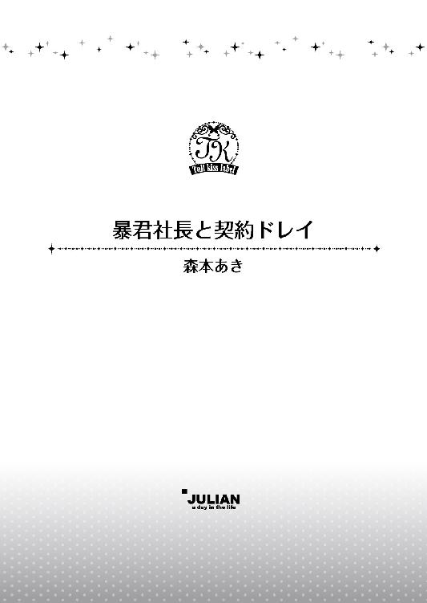

| 暴君社長と契約ドレイ【SS付】【イラスト付】 (チュールキス文庫) | |
| 森本あき | |
| (2015) | |

この物語はフィクションであり、実在の人物・団体・事件等とは、いっさい関係ありません。
イラスト・ＳＨＡＢＯＮ
あんたなんか、大っきらい！
「いらっしゃいませ！」
山野井沙織は、元気に声をかけた。開店とほぼ同時に、いまどき、自動でもないドアを開けて入ってきた常連のおじさん二人が笑顔を浮かべる。
「いやー、やっぱ、沙織ちゃんに迎えてもらうと疲れがふっとぶよ」
「そうそう。それが楽しみで働いてるようなもんだ」
この二人は、週に三日ぐらいは来てくれている。社交辞令だとわかっていても、そう言われると悪い気分はしない。
「こちらこそ、いつもおいでいただいてありがとうございます」
沙織は、ぺこり、と頭を下げた。
「だって、ここ、うまくて安いもんな」
「安月給、妻子持ちのサラリーマンの味方だよ」
「なー。というわけで、まずはビール！」
「大瓶でよろしいですか？」
生ビールは置いていない。とことん機械オンチな大将が、生ビールサーバーを設置することをかたくなに拒否しているからだ。サーバーを置くと、それを注ぐのは沙織の役目になるだろうし、メンテナンスも大変そうなので、沙織も内心では大将に賛成している。
たまに、えー、生ビールないの、じゃあ、いいや、とお店を出ていってしまうお客さんもいるけれど、それはしょうがない。生ビールがそこまで飲みたければ、別のお店で飲んでくれればいい。
申し訳ありませんでした、と頭を下げる間にも、ひっきりなしにお客さんがやってくる。営業している間、お客さんがいなくて暇な時間なんてないから、一人逃しちゃったな、とか、もったいないな、なんて考えている余裕すらない。
「そうそう、大瓶ね」
「かしこまりました」
沙織はよく冷えた大瓶のビールとグラスを二つ、席に運ぶ。おじさん二人は、おたがい、まあまあ、どもども、なんて言いながらビールを注ぎあって、一気にグラス分を飲み干した。ぷはー、と、なんとも幸せそうな表情を浮かべながら、息をつく。
「この一杯のために生きてるよな」
「うんうん。ホント、ビールさまさまだ」
沙織は、日々、似たような会話を店内中で聞いている。ビールを飲む人が少なくなった、とニュースになったりするけれど、ここ『きむら家』の常連さんは、まずはビールの人たちばかりだ。
「沙織ちゃん、注文いいかい」
「はい。何にしましょうか」
「まずは肉豆腐。それと、レバカツ。ポテトサラダ」
「ぼくは、ほうれん草のごまあえと唐揚げ。あ、今日のおすすめのイカと大根の煮物も」
「はい。少々お待ちください」
沙織が厨房に向かって注文を通すと、あいよ！ と大将の威勢のいい声が返ってきた。いかにも江戸っ子（かどうかは知らないけど）らしい、そのキップのいい返事が、沙織はとても好きだ。
ガラガラガラ。
またドアが開いて、四人のグループが入ってきた。その後ろから、一人客。夜は五時開店だけれど、五時半ぐらいには、ほぼすべての席が埋まってしまう。
普通なら、まだみんな働いている時間だろうにどうしてなのか、いつも不思議だ。大将いわく、このあたりは工場が多いから、シフト制で早番の人たちが来てるだろう、とのこと。たしかに、七時、八時になると、今度は普通のサラリーマンらしき人たちの第二波がやってくる。お店が閉まる十一時まで、だいたいずっと満席。ドアを開けて、席が空いていないのを見て、がっかりしたような顔で帰って行く人も多い。
四人がけテーブルが八つ、カウンターに五席。特に席数が少ないとは思えないし、沙織一人で回しているので、正直、これ以上増えたら無理だ。
でも、お客さんの、あーあ、といった顔を見ると、もうちょっとどうにかできないだろうか、と考えてしまう。
「ビール、大瓶二本ね！」
「生姜焼き定食と熱燗をください」
「今日、刺身いいの入ってる？」
質問にはてきぱきと答え、注文を受け、大将がつぎつぎと出してくる料理をテーブルに運び、お会計をし、テーブルを片づけて、待っているお客さんを席に通す。手が空いたら洗いものをすることになっているけれど、全部洗い終えられたためしがない。閉店時間には、洗ってない皿が山盛りだ。残って洗いますよ、と言う沙織に、いいから帰れ、と大将は聞き入れてくれない。最近、大将が少しやつれてきているのが気になる。いくら機械オンチとはいえ、事情が事情だ、食器洗浄機ぐらい入れてもいいんじゃないだろうか。
普段なら、ここにもう一人、大将の奥さんがいて、彼女が食器洗いを担当している。ただ、奥さんは、とてもおめでたいことだけれど、出産のため里帰りをしているのだ。最初は、里帰りをせずにこっちで産む、と断固として言い張っていたが、大将が、なんのめんどうも見られないし、俺も落ちつかないし、きっと、おまえはぎりぎりまで仕事をして、生まれたらすぐに仕事に復帰しそうだから頼むから実家に帰ってくれ、と無理に帰した。大将だって、自分の子供が生まれたらすぐにでも会いたいだろうに、奥さんの体のことを真っ先に心配する姿に沙織は、じーん、とした。
角刈りで見かけはいかつくて、どう見ても頑固な江戸っ子（ということにしておこう）なのに、中身はすごくやさしい。一人になってしまった沙織を、よく気づかってくれている。
本当は臨時でだれか雇ったほうがいいんだけど、大将は奥さんのかわりを入れたがらない。だから、沙織ががんばるしかないのだ。
足を止める暇もなく、できあがった料理を運びつづけていたら、がらり、とドアが開いた。
「いらっしゃいませ！」
反射的にそう言いつつ、店内を見回す。空きはない。
「すみません、ただいま満席でして、少しお待ちいただくことになってしまいます」
「個室に案内しろ」
淡々とした声がした。空になったお皿を下げつつ、沙織はもう一度、おなじことを繰り返す。
「ただいま満席なんです。申し訳ないですけど、店内でお待ちいただくか、少したってから再度、来ていただくかになってしまいます」
席が埋まっているのをわかっているくせに、どうにかならないのか、とごねるお客さんは結構いる。どうにもなるわけがないでしょ、と内心で思っていても、そのまま言葉にするわけにはいかない。
笑顔で、愛想よく、丁寧に。
わがままなお客さんをなだめるにはそれが一番効果的なことを、このバイトをやるようになってから知った。
だから、何を言われても、口調を変えず、おなじことを根気よく伝える。そうすると、そのうち、お客さんのほうがあきらめるのだ。
気分を害して二度と来ないんだろうな、と思っていると、半分ぐらいはまた訪れてくれたりする。そして、席さえあれば機嫌よく食べたり飲んだりしてくれる。
お客さんっておもしろいなあ。
沙織は、いつもそう思う。もちろん、とんでもなく迷惑をかけてくる人もいるし、常連さんでも苦手な人はいる。
でも、それもすべてひっくるめて、このバイトが好きだ。きっと、沙織は他人と触れ合うのが楽しいんだと思う。
「個室、あるんだろ」
沙織の言葉を聞いていなかったのか、その客はまたそんなことを言い出した。沙織は厨房を見て、テーブルとカウンターにさっと目を走らせて、いま急いでやるべきことはないと確認したうえで、このめんどうな客に向き合うことにした。
何週間かに一度は、クレーマーもどきのタチの悪いお客さんがやってくる。最初のうちは怖くて何もできなくて、大将や奥さんに頼ってばかりいたけど、ここでバイトするようになって二年が過ぎ、そういうお客さんをあしらうのもうまくなった。
いや、本音では、お客さんとすら呼びたくはない。だけど、そのクレーマーもどきだった人たちのうち、何人かは常連になって、沙織と親しく会話をする間柄になっているので、初見で判断するのはやめることにしている。
「すみません、お客様」
沙織は笑顔を浮かべながら、ドアを開け放して、中に入ってこようとしないそのお客さんに近づいた。あれだけ騒がしかった店内が、シーン、としている。
沙織のことを心配してくれている、なんて考えていない。常連さんたちは、こういう事態に慣れている。沙織が入り口にまで向かうからにはやっかいな客なんだろう、と推測もしている。
そのうえで、おもしろそうだから観察しているだけのこと。
下手に手助けされるよりは、そのぐらいの距離感のほうが気楽だから、いいんだけどね。あからさまにわくわくしている何人かは、ちゃんと覚えておくわよ。
内心でそうグチりつつ、沙織はお客さんの前に立った。
「いま、すべての席が埋まってまして、本当に申し訳ないですが、お入れすることができないんです。店内で待っていただくか、しばらくしてから、もう一度いらっしゃっていただくか、どちらかになります」
もちろん、このままあきらめて帰る、という選択肢もある。だけど、それは接客業として、けっして口にしてはいけない言葉だ。
以前、うっかり、九時すぎに訪れてきたお客さんに、今日はもう無理だと思います、と口を滑らせてしまって、大変な目にあった。沙織としては、店内に待っているお客さんが数組いたし、彼らが入れるころにはラストオーダーの時間を過ぎているだろう、と予測してのことで、むしろ親切のつもりだった。
だけど、それを聞いた瞬間、少しお酒の入っていたお客さんは目の色を変えて怒りだしたのだ。
は？ 俺らに帰れってことか!? ずっとひいきにしてやったのに、その態度はなんだ！ 相席でもいいんだから、いますぐ入れろ！ じゃないと、俺の周りの連中、二度と来させなくするぞ！
それは、ただの売り言葉だったにちがいない。だけど、沙織はそれを本気にとって、その場で固まった。
どうしよう。わたしのせいで、お客さんがたくさんいなくなっちゃう。悪いうわさを流されたら、どうやってそれを消せばいいのだろう。
沙織は恐怖で動けなくなった。それを見て、慌てて、奥さんが飛んでくる。
あら、すみません、そんなつもりじゃなかったんですよ。この子も若いですから、口のききかたを知らなくて。ごめんなさいね。つぎ、いらっしゃったとき、お一人にビールを一本ずつサービスさせていただきますから、今日はわたしに免じて許してもらえないでしょうか。
奥さんは、けっして美人じゃないけれど、愛らしい顔立ちをしている。奥さんが笑うと、こっちも笑いたくなるような愛想のよさもある。
きっと、本人も言いすぎたとわかっていたのだろう。お客さんはすぐにこぶしを引っ込めた。
おかみさんに言われちゃ、しょうがねえな。ホントにビール、おごってくれんの？
もちろんですよ。わたしのおごりです。
だったら、また明日にでも寄るわ。
楽しみにお待ちしております。
そんな会話を、まるでどこか遠いところでかわされているかのように感じながら、沙織はただ立ちつくしていた。
奥さんに、お料理できてるわよ、と、ポン、と肩をたたかれて、沙織は、はっと我に返る。そうだ、ぼーっとしている場合じゃない。仕事をしなきゃ。
その日、お店が閉まったあと、沙織はずっとびくびくしていた。だって、絶対に怒られる。あんな騒ぎを起こしてしまったんだもの。
だけど、大将も奥さんも、沙織をしからなかった。それどころか、きちんと対応を教えてなかった自分たちのせいでいやな思いをさせた、と謝られた。
そんなことはない。何も考えずに言葉を発して、お客さんに不快な思いをさせた沙織が悪いに決まっている。
大将はそのとき、とつとつとこう言った。
「飲食店っていうのはさ、一時期はやっていても、あっという間につぶれたりするんだよ。俺が修行した店の大将が、うまくて安いもん出してりゃいいんだろ、って方針でさ。それは、たしかに正しいし、良心的ではあるんだが。人件費とか、まったく考えてなかったんだよな。俺はまだ修行中だから、安月給でもしょうがない、って納得できたけど、店員はその給料で暮らさなきゃいけないんだから、我慢できるわけがねえ。大将の腕はたしかだし、テレビとか雑誌とかに取り上げられて、とにかく、毎日忙しくてさ。給料さえもっと弾んでりゃ、どうにかなかったかもしれねえけど、忙しさに店員はずっとイライラしっぱなしで、お客さんが注文しようと呼んでも、ちょっと待ってなさいよ！ ぐらいのひどい対応して。一見さんは二度と来ないし、常連さんも足が遠のくしで、そうなったら、つぶれるまではあっという間だった。お客さんって、そのときは文句言わねえけど、心の中で、ここの店にはもう来ない、って決めちゃうんだよな。さっきのお客さんみたいに、たとえ、酒が入って気が大きくなってたとはいえ、きちんと文句を言ってくれたほうがこっちは気が楽だ」
「そうね」
奥さんが、にこにことうなずく。
「人間だから、機嫌が悪い日もあるのよ。普段なら平気な言葉でも、むかっとすることもあるの。たとえば、今日の人は、きっと、拒絶された気になられたんだと思うわ。そういうときは、謝るのはもちろんのこと、いやな気分でお店を出られないように最大限、努力するの。どれだけがんばってもダメなら、もうどうしようもないわ。わたしたちだって、必要以上に下手に出てまで来ていただきたくはないし」
奥さんが大将に、ね、と笑いかけた。大将も、そうだな、と同意する。
「あまりにもひどい客は、きっちり拒絶する。じゃないと、周りのお客さんに迷惑がかかったりするからな。ただ、その線引きはすごくむずかしい。長年営業している俺でも、判断をまちがうことがあるぐらいだ」
わたしもよ、と奥さんはちょっと困った表情を浮かべた。
「本当に、その線引きはむずかしいのよね。うちは、ありがたいことに、いまは繁盛させてもらってる。でも、それにあぐらをかいちゃいけないの。本当にあっという間なのよ、お客様が来なくなるのって。わたしも、ずっと飲食店で働いてたから、それは知ってるの」
「そういえば、結構、転々としてたな。どの店もおまえがつぶしたんじゃねえのか」
「あら、いやーだ、わたし、看板娘ってどこでも呼ばれてたわよ」
二人は顔をあわせて、にこにこ笑う。
その表情を見ていたら、ようやく凍っていた心が溶けてきた。沙織は、ふう、とひとつ息を吐いて、深々と頭を下げた。
「すみません。わたし、お客さんに不快な思いをさせてしまって、奥さんに尻拭いまでしてもらって、なのに、いままで謝りもせずに固まってました」
「沙織ちゃんぐらいの年齢の子が、あんなふうに怒鳴られたら、固まるどころか泣きたくもなるわよ。よく泣かなかったわ、って、ほめてあげたいぐらい」
奥さんは目を細めた。
「でも、たしかに、お客様は不快に思われた。それは、今日は無理だと思います、という、どう考えても沙織ちゃんが正しい言葉なんだけど。でも、もしかしたら、ラストオーダーに間に合ったかもしれない。混んでて時間がかかりそうだからまたにするか、というのは、お客様だけにできる選択なの。わたしたちからは、絶対に断ってはいけないのよ。どんなやっかいなお客様でも、うちの味を気に入って通ってくださる間は大切な存在なの。だから、沙織ちゃん、どんなときでも、店内でお待ちになるか、時間をおいてまた来てみていただけませんか、と、お客様には尋ねてちょうだい。あと、どのくらいで空きそう？ という質問には、絶対に時間を確約しないで。前、それでもめたことがあるから」
「...はい」
沙織は奥さんの言葉を胸の中に刻みつける。
「でもね、我慢に我慢を重ねて、それでもどうしようもない態度の悪い人なら、お客様じゃないから、思い切りケンカしていいわ。ただ、店内にいらっしゃるお客様には不快な思いをさせることになるわけだから、本当に最終手段よ」
「そのときには、俺が何か作ってお客さんのフォローはするから遠慮するな。たしか、こないだは、おまえ、相手に飛びついて、顔中、引っ掻き回してたな」
「そりゃ、うるさい、このオカメ顔！ ってぶん殴られたら、そのぐらいするわよ」
奥さんは、ふふふ、と楽しそうに笑った。
「...それ、警察沙汰になりませんでした？」
殴られて、引っ掻いて。結構な修羅場だ。
「ならなかったわよ。相手が逃げちゃったからね。で、翌日、菓子折り持って謝りに来たわ。ほら、常連の山さんよ」
「えええ！」
沙織は大声をあげた。山さんはいつもばりっとした格好をしている中年男性で、カウンターで一人、楽しそうに飲んでいる。
奥さんを殴るような人には、全然見えない。
「だれにでも虫のいどころの悪い日がある、っていう、いい例でしょう」
「はい。びっくりしました」
「だから、沙織ちゃん、明日、あの方たちがお見えになったら、笑顔で対応するのよ」
「わかりました！」
そもそも、沙織の言葉の選び方が悪かったのだ。怒鳴られて固まったけど、恨むほどのことじゃない。
そのつぎの日、三人は開店と同時に現れた。沙織に、これ食べな、とケーキの箱を渡してくれる。
ごめんな、とは言われなかった。だけど、その彼らなりの謝罪が嬉しかった。
沙織は、昨日はわたしの態度が悪くてすみません、今日は楽しく飲んでください、と頭を下げて、そのあと、にっこり笑顔を浮かべた。
その三人組は、いまでも一週間に一度はやってきてくれる。沙織とも軽口をたたくような仲だ。
もちろん、うまくいったことばかりじゃない。口には出さないものの、むっとしたような態度をとられて、そのあと、二度と見かけなくなったお客さんも何人かいる。
怒鳴ってくれる人のほうがマシ。
バイトが長くなるにつれて、その意味が身に染みてきた。
この二年で、沙織は確実に客あしらいがうまくなっている。このお客さんにだって、ちゃんと対応してみせる。
中に入ろうとしないお客さんは、闇にまぎれて、よく顔が見えない。沙織が見上げるほど背が高いことだけはわかる。
これだと身長が百八十半ばぐらいだろうか。
「いますぐ個室を用意しろ。そうじゃなきゃ、この店を訴える」
あ、これはだめだ。
沙織はその瞬間に理解した。訴える、なんてことを言い出す人は、クレーマーでまちがいない。
「申し訳ないんですが、いますぐはご用意できません」
それでも、低姿勢を貫く。クレーマーなら、つけいる隙を与えちゃダメ。
おだやかな口調で、だけど、きっぱりと断る。
「俺は小早川貴仁だ」
はあ？
沙織はそう口にしたいのを、ぐっとこらえる。
そんな人、知らない。聞いたこともない。もしかして、有名な芸能人だったりするのかしら。でも、おあいにくさま。わたし、テレビ見ないの。それに、芸能人だからって特別あつかいされると思ったら、おおまちがいよ。
心の中だけでののしって、表情は笑顔のままだ。
「さようでございますか」
沙織の口調が、どんどん丁寧になっていく。
「だから、そいつらを追い出して、俺を座らせろ」
なに言ってんの？ バッカじゃないの。どうして、楽しく飲んでるお客さんを追い出さなきゃならないのよ。それよりも、さっさとあんたがあきらめてくれればいいだけのこと。
「わかったな」
男は沙織を押しのけるように、中に入ってこようとした。そこで初めて、男の顔が見える。
...もったいない。
沙織は心底、そう思う。
高飛車な物言いと、自分勝手な理論と、自分の名前がどこでも通用するとかんちがいしているバカさ加減と、世界は俺を中心に回っている、みたいな恥ずかしい思いちがいさえなければ、かなりいい男なのに。
まあ、つまり、顔しかいいところがないってことだけど。
男は、とても端整な顔立ちをしていた。芸能人なのはまちがいないだろう。だって、こんなにかっこいい一般人（という言い方も失礼だけど）、見たことがない。
しゅっとした輪郭、少し太めの眉毛、切れ長の目、筋がきれいに通った高い鼻、薄めで形のいい唇。髪は真っ黒で、つやつやしている。後ろに無造作に撫でつけているので、おでこの形のよさがはっきりわかった。さわやかな青のスーツが、よく似合っている。そして、そのスーツはとても高そうだ。
この恵まれた容姿なら、いつでもどこでも自分の要求が通ると思い込んでいても、ある程度はしょうがない。クレーマーというよりも、プライドが高いだけなのかもしれない。
だからといって、沙織の作戦は変わらない。
あくまでも低姿勢で、丁寧にお引き取りを願う。
「お客様」
沙織は男の前に立ちふさがった。
「わざわざいらしていただいて、ありがとうございます。せっかく立ち寄っていただいたのに、こんなことを言うのはまことに心苦しいのですが、いま満席なんです」
何回、満席って言えば理解してくれるのか。
「追い出せ。金なら払う」
...なんだろう、この話の通じなさ。そういう問題じゃないことを説明しても、ムダな気がしてくる。
だから、席はないから帰れって言ってんの！
そう怒鳴ってやりたいところだけれど、訴訟をちらつかせるほどのめんどくさい相手だ。ことが大きくなるに決まってる。
ここはいっそ、大将にまかせたほうがいいのかもしれない。
沙織が大将のほうを、ちらり、と見ると、大将が厨房から出ようとしていた。
さすが大将、頼りになるわ。以心伝心って、こういうことね。
沙織がほっとしたところ、大将は両手にできあがった料理のお皿を持って、テーブルに配り始めた。
ちょっとー！ わたしを助けてくれるんじゃないの!? 頼りになるって言葉、いますぐ取り消そう。
もうこうなったら、お店は大将にまかせて、わたしがこの男の相手をがんばるしかない。
「申し訳ありませんが、それはできかねます。みなさま、お食事を楽しんでいらっしゃいますので」
いまは食事よりも、このやりとりを楽しんでるんでしょうけどね。大将の足音以外、まったく何も聞こえてこないから、全員が注目しているのが丸わかりだ。
「そいつらの食事代を払うって言ってるんだから、追い出せばいいだろう」
...うーん、ちょっとさすがにこれは、わたしには手にあまる気がしてきた。
「できかねます」
「話のわからない女だな」
男は、じろり、と沙織をにらんだ。
その言葉、そっくりそのままお返しするわよ。
「全員をいますぐ追い払って、俺をこの店に入れろ、と言ってるんだ」
そんな要求に従う人がいたら、いますぐ連れてきなさいよ。
ああ、もう、いらいらする。相手が手を出してこない以上、沙織は何もできない。だけど、思い切りひっぱたいてやりたい。
うるさい、わけのわかんないこと言ってないで帰んなさいよ！
そうわめけたら、どれだけすっきりするだろう。
「できません」
「おまえは、ただ胸が大きいだけのバカ女だ」
男はそう言うなり、沙織の胸をぎゅっとつかんだ。とっさのできごとに、よけることもできない。
沙織は目を見開いて、抵抗もできないまま、男に右胸を揉まれている。
「ふーん、これはシリコンじゃなくて本物か」
だんだん、自分のされていることがわかってきた。
これは、完璧なセクハラ。もしくは痴漢行為。手を出してきたのは、この男が先。
つまり、反撃してもいい！
「ふざけんじゃないわよっ！」
沙織は男の手を振り払って、そのまま、思い切り、男の頬に右ストレートをたたきこんだ。あまりに見事に決まって、男の体が、ぐらり、と揺れる。
やった！ まぐれ当たりだけど、きれいに命中したわ。
「あんたなんかに座らせる席は、ひとつたりともありゃしないわ！ 訴えるなら、訴えなさい。そのかわり、わたしだって、あんたを痴漢行為で訴えてやるから！ ここにいるお客さん全員が証人よ！」
沙織は堂々とタンカを切る。その瞬間、わーっ！ と店全体が湧いた。パチパチパチ、と拍手まで聞こえてくる。
...うん、わかってたけどね、聞き耳を立ててたのは。だれも助けてくれなかったことは、しばらく覚えておくわ。
「わかったら、とっとと出ていきなさい！」
「世の中には、ケンカを売っていい相手と悪い相手がいる。その区別ぐらい、つけておくべきだ」
男は怒った様子もなく、頬を触りながら、沙織をじっと見た。
「どうして？ あなたが芸能人だから？」
「芸能人？」
男は顔をしかめる。
「どうして、そんなくだらないものにならなければいけなんだ、この俺が」
あら、芸能人という予想ははずれたみたい。でも、だったら、どうして、名前を出したんだろう。
「俺は小早川貴仁だと言っているだろう」
だから、何回言われたって、知らないわよ、そんな人。
「わたしは山野井沙織よ。だから、さっさと出て行って」
名前には名前で対抗してやる。
「ああ、わかった」
男は、ふむ、とうなずいた。
「おまえはバカなんだな」
こっちのセリフよーっ！
「貴仁さま」
男の後ろから、低い声が響いた。沙織は驚いて、一歩、後ずさる。
え、もう一人いたの!? まったく気配がしなかったんだけど。
「お車の用意ができました」
「そうか」
男はそれを聞いて、沙織と同様、一歩下がった。そのまま、まっすぐ沙織を見つめる。
「ヤマノイサオリか。覚えておこう」
男はそう告げると、くるり、と踵を返して、闇の中に消えていった。沙織は、きょとん、とその後ろ姿を見送るしかできない。
もっと言ってやりたいことはあったのに！
...いや、でも、これ以上話しても、会話は平行線のまま、一切まじわらなかっただろうから、いいか。
沙織は、ふう、とひとつ息をつくと、ドアを閉めた。きっと何か言われるんだろうな、と覚悟を決めて振り向くと、もうみんな、自分たちの話に戻っている。
沙織はあぜんとした。そして、すぐに嬉しくなった。
無事に解決したら、それでいい。
その適度な距離感が、いまはとてもありがたい。
「料理できてるぞ」
大将もいつもどおりだ。
「はい！」
沙織は元気に返事をして、気持ちをすぐに切り替えた。
まだまだ閉店まで時間はある。
がんばらなきゃ！
話は少しさかのぼる。
ガクン。
そんな音がして、車が止まった。小早川貴仁は、端整な顔を少しゆがめる。
「どうした」
貴仁は運転手に声をかけた。
「少しお待ちください」
運転手が慌てて外に出る。
貴仁は腕時計を見た。時刻は午後七時。もう、都内では渋滞が始まっている。その前に家に着いておきたかったのに、予定外に商談が長引いてしまった。これだから、話を簡潔にまとめられない取引先の相手はいやなんだ。
運転手はボンネットを開けて、細部を点検している。きっとすぐに直るだろう、と貴仁は楽観視していた。
その間に今日の商談の確認をしようと、貴仁は書類を開いた。これをやっておけば、家に返って仕事がひとつ減る。
契約の細かい部分は、もちろん、顧問弁護士にまかせるが、自分でわかるところはきちんとチェックしておきたい。
貴仁は医療機器のベンチャー企業を経営している。大学時代、工学部に所属していた貴仁は、レーザー実験をしている最中、ふと、こんな医療機器があったらいいな、と思いついた。それが、レーザーメス。いまは、どこの医療機器企業でも開発を進めているが、その当時は数社が取り扱っているだけだった。
貴仁の頭の中に、ぱっと設計図が浮かんだ。だけど、それを自分で作る技術はないし、作ってもらうとしても、どこのだれに頼めばいいのかわからない。
俺が思いつくぐらいだから、もうすでに、だれかが開発しているだろう。
最初はそうあきらめたけど、日に日に、頭の中の設計図が細部まで決まっていく。
貴仁は、担当教授の山中に相談した。もし、山中教授が欲深い人間だったら、貴仁のアイディアは盗まれていたにちがいない。
だけど、山中教授はとてもまっとうな人だった。貴仁の案を聞いた瞬間、おまえ、とんでもないものを発明したかもしれないぞ、と、すごく興奮してくれた。
それから先は、すべて山中教授がおぜん立てをしてくれた。貴仁の設計図をきちんと図面にしてくれる人、部品を作ってくれる人、ほかにもレーザーメスを作るために必要な人たちを見つけてくれて、さっさと起業して特許を取るようにアドバイスしてくれた。
起業資金は、俺はおまえに賭ける、と山中教授がかなりの大金を貸してくれた。足りない分は、親に頭を下げて出してもらった。
二年以上かけて作った新型のレーザーメスは爆発的ヒットとなり、貴仁は、あっという間に何百億の資産を持つことになる。
山中教授は、俺の教え子から天才が現れた、と、貴仁の成功をわがことのように喜んでくれた。
恩師という言葉を、本当の意味で実感させてくれたのは山中教授だ。
もちろん、恩返しを忘れるつもりはない。山中教授には名前だけの顧問になってもらって、株式配当を分与している。
山中教授は、俺は何もしていない、と最初は固辞をしたが、俺のようなやつが現れたら、このお金を使ってください、と説得したら、ようやく納得してくれた。株式上場して五年。いまでは、毎年何億ものお金が山中教授と、そして、大学を辞めて企業することを許してくれた両親に配当金として払われている。
山中教授は、それでベンチャー企業を支援する団体を作った。自分のために使わないところは、本当にすごいと思う。その清廉潔白な人柄を、貴仁は尊敬してやまない。
父親もいまだに仕事を辞めず、母親が配当金をすべて貯金してくれている。もし、あなたの会社がダメになって、とんでもない額の負債が出ても返せるようにしてるの、と母親はいたずらっぽく笑っていた。
山中教授と両親。
その二人のおかげで、自分は好きな仕事ができている。いまは、心臓にまったく負担をかけないペースメーカーを開発しようとしているところだ。プロジェクトがようやく動き出して、毎日、いろんな会社との交渉で忙しい。
貴仁の会社は医療機器を設計するだけなので、部品を作るところからすべて外部にまかせることになる。そのぶん、交渉相手が莫大な数に及ぶのだ。
そのひとつひとつを、貴仁は自分で回る。企業として大きくなって、従業員も百人を超えるが、プロジェクトの最初の交渉だけは営業にまかせることはない。
新しい医療機器を作るために何が必要なのか、そのすべてを把握しておきたい。
そのためには、自分で足を運ぶしかないのだ。
今日もひとつ、部品の業者と仮契約を結んだ。それでも、まだ十分の一も進んでいない。
ゆっくり、だけど、着実に。
それができるのは、いまだにレーザーメスが売れつづけてくれているおかげだ。
そんなことを思い出しながら、貴仁はフォルダに挟まれた仮契約書にすべて目を通し終えた。腕時計に目を落として、貴仁は眉をひそめる。
どうして、こんなに時間がかかっているんだ？
貴仁が車の外を見ると、運転手が携帯で電話をしていた。つまり、運転手では直せない故障ということか。
貴仁は車に金をかけるつもりは毛頭ない。金持ちとなると、フェラーリだ、ベンツだ、ランボルギーニだ、と、何千万もする高級車を何台も所有していたりするイメージがあるが、車を移動手段としてしか考えてない貴仁にしてみたら、バカバカしいのひとことだ。
貴仁が乗っているのは、エコカーとして名高いプリウス。高級車と比べたら乗り心地は落ちるかもしれないが、一日中、車の中にいるわけじゃないし、エコカー減税も使えるし、なんの不満もない。
そして、こういった故障の場合、高級車なら修理に時間がかかるだろうけれど、普及しているプリウスなら簡単に直せるにちがいない。
「貴仁さま」
運転手がドアを開けて、貴仁に声をかける。
「修理業者に依頼したところ、ここまで来るのに二、三十分かかるとのことです」
「そうか。修理の時間は？」
「部品交換なので、十分もあれば、と」
つまり、あわせて最大で四十分。その間、車の中で待っているのもバカバカしい。
「わかった。俺は散歩をしてくる。修理が終わったら連絡しろ」
今日はいったん家に帰ってからジムに行こうと思っていたけれど、この時間のロスと都内の混雑状況を考えたら、無理そうだ。だとすると、少し体を動かしておいたほうがいい。
ここ最近は、新しいプロジェクトで忙しくて、運動する時間がなかった。
「わかりました」
運転手は頭を下げて、後部座席に急いで移動する。ドアを開けてもらって、貴仁は外に出た。
そろそろ真夏になろうとしている時期だから、この時間でも気温が高い。スーツの上着を脱ぐかどうか迷って、やめておいた。偶然、知り合いに出会う可能性もあるからだ。
こないだ小早川に会ったら、あいつ、シャツ一枚で歩いてたぜ。さすが、成り上がりの社長はちがうな。スーツを着こなすことすらできないんだからな。
そんな陰口をたたかれるのは、けっして気分がいいものではない。
高級車を持っていないことに関しては、エコカーという言い訳がある。環境のことを考えたらスポーツカーなんて乗る気になれない、と言っておけば、相手だって、それ以上は突っ込めない。
だけど、服装はちがう。いついかなるときもきちんとした格好をしていないと、そろそろ金がつきたんじゃないのか、とか、育ちが育ちだからな、だのといった理不尽な攻撃をされるのだ。
くだらない、と貴仁は心底思う。だけど、そういう連中とつきあわないことには、仕事がうまく回らない。
会社が軌道に乗るまでは、人脈が欲しくてしょうがなかった。部品を作ってくれる会社に、忙しいもんでね、とそっけなくあしらわれて、だれか紹介してくれる人がいたら楽に契約までこぎつけるのに、と何度、悔しい思いをしただろう。
軌道に乗ったら乗ったで、またちがった人脈が必要となる。レーザーメスのように小型のものだけじゃなくて、そのうち、大型機器も作ってみたい。そのためには、だれと顔をつないでおかなければならないのか、いまの貴仁には判断できないのだ。
だから、あまり好きではないパーティーにも顔を出す。必要もないのに、高級スーツを買う。接待で、高級レストランや高級クラブにも顔を出す。
それに慣れるつもりはない。
大丈夫。自分には山中教授と両親がついている。
つぎのペースメーカーで失敗して、とんでもない損失を出したとしても、また新たに始めればいい。お金がなくなったら、実家に戻ろう。
高級スーツも、つきあいのパーティーも、どこがおいしいのかわからない高級料理も何もない生活。
それは、きっと、貴仁をほっとさせてくれるだろう。
そんなことを考えながら、貴仁は大きな道をそれて、住宅街に向かって歩き出した。運動がわりだから、と、貴仁は足を速める。革靴は散歩にまったく向いてないが、それはもうしょうがない。
街灯の数が減って、道はどんどん暗くなっていく。こういう、何もないところを歩いていると、ほっとする。
ズンズン、とすごい勢いで歩いていると、また周囲が明るくなってきた。どうやら、どこかの駅前に出てしまったらしい。
駅の名前を見ると、一度も降りたことのない場所。電車だと何線が通っているのかもわからない。
「戻るとするか」
貴仁は車のある場所に向かおうとした。方向感覚には自信があるので、迷う心配はない。
そのときだった。聞き慣れた声がしたのは。
「ほら、そこにホテルあるだろ」
「ちょっと、やーだ。ラブホテルじゃないの。お金持ってるんだったら、もっといいところ連れてってよ」
「それは、また今度な。一回やらせてくれりゃ、どこにでも連れてってやる」
「えー、ホントにー？」
「ホントだって。俺の息子、すげー稼いでるんだから。株の配当だけで、遊んでくらせるんだよ、俺は。あ、ちなみに、俺のこの息子はビンビンになってるぞ」
「もー、エッチなんだから～」
「どうするよ？ あのホテルがいやなら、別の子を呼んでもいいんだぞ」
「わかったわよ。そのかわり、シャネルのバッグ買ってよ」
「ああ、なんでも買ってやる。こっちは、使用無制限のカードだってあるんだ」
「きゃー、すてき～」
その二人が通り過ぎるまで、貴仁は動けなかった。
ちがう、ちがう、ちがう。
自分にその言葉だけを言い聞かせた。
あれは、俺の親父じゃない。あんな下品なことを言って、俺の金を使って女を口説くようなことはしない。
だから、絶対にちがう。
だけど、そういえば。
貴仁の胸の中に、闇が忍び寄ってきた。
最近、実家に帰っても父親の姿を見たことがない。お父さん、仕事が忙しくてね、と母親は言っていた。貴仁は、それを信用していた。
でも、そうじゃなかったら？ 仕事なんてしてなくて、毎日、若い女と遊びほうけていたら？
貴仁は、ぎゅっ、とこぶしを握り込んだ。血が出るほど、手のひらに爪を立てる。
そんなわけがない。きっと、父親は家にいるはずだ。
貴仁は携帯を取り出した。実家の番号を押す。
『どうしたの、貴仁？』
ナンバーディスプレイだから、母親が出ると同時に貴仁の名前を呼んだ。その口調に、ほっとする。
家は、何も変わってない。父親だって、いるに決まってる。
「父さんに用があってさ。いま、いる？」
『お父さん、まだ仕事から帰ってないわよ。こんな早い時間に戻ってくるわけないじゃない』
母親は、いつものように笑った。
「わかった。じゃあ、会社に電話してみるよ」
これは賭けだ。そうしてね、と普通に言われたら、さっきの声が父親じゃないと信じることができる。
『あ、そういえば、お父さん、今日から出張だったわ。忘れてた』
母親の声は、妙に明るかった。そして、ほんのちょっとだけ焦りが見えた。
それで、わかってしまった。
さっき通り過ぎたのは父親なのだ、と。
自分が知らないうちに、小早川家は崩壊していたのだ、と。
「そっか。じゃあ、帰ってきたら電話するように言っといて」
『わかったわ。貴仁も、体に気をつけるのよ』
そういえば、最近、実家に帰ってらっしゃいよ、と言わなくなっていた。前は、頻繁に誘われていたのに。
いつ、貴仁に言うつもりだったんだろう。
完全にダメになってから？ 離婚が成立したら？ いや、離婚はしないかもしれない。だって、父親の浮気が原因だと知ったら、貴仁が父親への援助をやめることぐらい、あのバカな男もわかっているだろう。
酒が飲みたい。
痛切に、そう思った。
普段は、接待の席以外では飲まないようにしている。家でやることがたくさんあるし、酩酊感があまり好きではないからだ。
だけど、いまは、酒でも飲まなければやってられない。
貴仁はすぐ近くにある店の前に立った。『きむら家』というのれんが、風にはためいている。
なんで開かないんだ。ドアまで、俺をバカにしてるのか。
蹴りとばしてやろうか、と考えたところで、自動ドアじゃないのに気づいた。貴仁は乱暴にドアを開ける。だけど、予想したよりも重いドアは途中で止まってしまった。
なんで、こう、何もかもうまくいかないんだ。
貴仁のいらいらがつのる。
「いらっしゃいませ」
元気な女の声がした。それが、さっきのバカ女と重なって聞こえる。
じっと観察すると、この女も相当に若そうだ。二十歳前後。もしかすると、成人してないかもしれない。
その若い女は、きらきらして見えた。店内の照明のせいかもしれないが、若さが弾けている。
こういうバカな女が、うちの親父にたかるのか。
たしかに、この女の見た目はなかなかだ。白いＴシャツとジーンズに包まれた体は、むっちりしている。赤いエプロンをつけているのに、胸が盛り上がっていて、そのでかさが見てとれた。
顔もかなりかわいい。目がくりくりしているし、まつげは長いし、少しだんご鼻ぎみだけど、それが欠点にならず、かわいさを助長している。唇は何もつけてなさそうなのに、つやつやでピンク色。そもそも、化粧すらしてないようだ。
髪は淡い栗色で、ポニーテールにしてある。
こういう、いかにも清純ぶった女が、裏では金持ちの男を誘惑してシャネルのバッグを買え、とねだるのだろう。
俺はだまされない。おまえをじっくり観察して、正体を暴いてやる。
「個室に案内しろ」
そのためには、個室に呼んで会話をするのがてっとり早い。ちょっとでもボロを出したら、とことん追いつめてやる。
なのに、席がない、と断られた。
席がないとは、どういうことだ。俺は小早川貴仁だ。どこの店だって、俺専用の席が用意されている。こんな場末の小汚い店に、席がない、なんて言われる覚えはない。
そこから先は、ほとんど覚えていない。
若い女は、どれだけ貴仁が強硬に出ても、一歩も引かなかった。その強情さに、どんどん腹が立ってくる。
浮気女のくせに。
俺の親父を誘惑したくせに。
さっきの女と、この目の前の女はちがう。
それは頭のどこかでわかっているのに、怒りを抑えられなかった。
傷つけてやりたい。泣かせてやりたい。
だから、その女の胸をつかんだ。
女なら、胸を触られたら、悲鳴をあげたり、泣き出したりするだろう、という単純な思い込みからだ。
だけど、なぜか思い切り殴られた。
人の家族を壊しておいて、なぜ、俺が殴られなければならない。
冗談じゃない。
おまえを破滅させてやる。
その女は、ヤマノイサオリ、と名乗った。それを忘れないように、心に刻みつける。
さて、どうしてやろうか、と考えていたら、後ろから、トントン、と肩をつつかれた。
「貴仁さま」
聞き慣れた運転手の声。
そこで、はっと我に返る。
...俺、いま、何をしてた？
ヤマノイサオリという女は、貴仁をにらみつけていた。それはそうだろう。無茶な注文をしておいて、胸まで触って、怒らないほうがおかしい。
だけど、謝罪をしたくなかった。
父親がクズだとわかった、人生で最悪の日。
そんなときに、頭を下げたくなんかない。
頭が冷えたら、謝りに来よう。
いまは無理だ。
父親とおなじクズだと言われてもしょうがないが、今日の自分には他人に謝る心の余裕がない。
「ヤマノイサオリか。覚えておこう」
今度、謝るときのために、名前は必要だ。
貴仁は店を出た。自分では気づかなかったけど、じっとりと汗をかいている。
「お電話を何度かさしあげましたが、お出にならなかったもので」
運転手の言葉に、貴仁は眉をひそめた。
だから、どうしたというのだろう。
「追跡機能を使わせていただきました」
ああ、なるほど、そういうことか。携帯のＧＰＳを追ったことを謝っているのだ。
「いや、気づかなかった俺が悪い。来てくれて、助かった」
運転手が来なければ、まだまだ醜態をさらしていただろう。
「いえ、もとはといえば、わたくしの点検ミスですから」
そんなことはない。いくら点検していても、機械なんてこわれるものだ。仕事柄、それは痛いほどわかっている。
「いい運動になった。気にするな」
「ありがとうございます」
運転手は軽く頭を下げて、先に立って歩き出した。すぐに、大きな通りが見えてくる。
貴仁は後部座席に座った。その瞬間、どっと疲れが襲ってくる。
このまま眠ってしまいたい。朝まで、何も考えずにいたい。
だけど、そういうわけにもいかない。
貴仁は携帯を取り出した。秘書に電話をかける。
『はい、小早川メッズです』
会社の名前をつけるときに、いろいろ考えた。若かった貴仁は、全部英語がいい、なんて頭の悪いことを考えて、それだとわかりにくいよ、と山中教授に笑われたものだ。
だから、自分の名前はそのままつけようと思った。メッズはメディカルの略っぽくてかっこいいし、ほかとかぶらなさそう、と、若くてバカな部分で決めたものだ。
メッツと聞き間違えられて、野球お好きなんですか？ なんて、質問もよく受ける。こんなことなら、小早川医療機器開発センター、みたいに、わかりやすい名前にしておけばよかった。
「俺だ」
『あ、社長。お疲れさまです』
秘書は貴仁より一回り年上の、物腰が穏やかな男性だ。秘書といえば女性、という風潮に逆らいたくて、男性にしてみた。
つくづく、会社を立ち上げたときの自分は若かったんだな、と思う。
が、秘書の件に関してだけは、まったく後悔していない。とても仕事ができるので、貴仁も安心して会社を空けられるのだ。
「仮契約が終わったから、明日、書類を持っていく。顧問弁護士を呼んでおいてくれ」
『かしこまりました』
「今日は、もう仕事を終えていい」
何もないときは六時に帰れ、と言っているのに、貴仁が電話するまで会社に残っている。そういう律儀なところも気に入っている。
「それと、まったく別件だが、ヤマノイサオリという女性を調べろ」
『どういう字を書くんですか？』
「わからん」
貴仁は、『きむら家』という店の名前と最寄り駅を告げた。
「そこの店員だ」
『いつまでに、ですか』
「早ければ早いほうがいい」
『承知しました』
「よろしく頼む。では、また明日」
貴仁は電話を切った。ふう、と大きく息をついて、座席に沈み込む。
これで、あの女の情報は手に入る。
詫びの菓子でも持っていかないとな。
そのときは、本気でそう思っていた。
ただ謝るだけだと。
他意はない、と。
そう考えていた。
「お先に失礼します」
沙織は頭を下げて、『きむら家』を出た。大将は皿洗いをしながら、お疲れ、と返す。そう言う大将本人が、もっとも疲れているように見えるのは、きっと気のせいじゃない。奥さんが実家に戻って、三週間が過ぎた。その間、奥さんの分の仕事もしてるんだから、きっと、くたくただろう。
「大将、わたし、お皿洗い手伝いますよ」
「いい。俺がやるよ。沙織ちゃんは、早く家に帰りな。夜も遅いし、危ないだろ」
「大丈夫ですよ。歩いて五分ですし、うちまで明るいですから。それに、明日、定休日なので、ゆっくり眠れます。きちんと時給はもらいますから、やらせてください」
いったん外したエプロンを、沙織は取りに行った。大将がなんと言っても、ここは譲るまい。
「助かる」
大将が深々とため息をつきながら、そう言った。あっさり沙織の提案を受け入れるなんて、相当疲れているにちがいない。
「ちょうど話もあったし」
「じゃあ、洗いながら話しましょうよ」
なんだろう、話って。
そんな不安は表に出さず、沙織は明るく言う。
厨房の中に入ったら、食器をつけておくシンクは、あふれんばかりにいっぱいだった。一人でやったら、小一時間はかかりそうだ。
注文がとぎれたときにはこまめに洗っているのを知っているだけに、その量に驚く。
「俺が洗うから、沙織ちゃんは流してくれ」
「わかりました」
大将がリズムよくお皿を洗い、隣のシンクに置く。沙織が水で流して、食器乾燥機に並べる。さすがに布で拭く時間はない、という奥さんの主張で、機械オンチの大将もこれだけは容認していた。
二人で黙々とやっていたら、あっという間に食器乾燥機がいっぱいになった。乾燥スイッチを淹れて、残りは水きりパットの中に置いていく。食器が乾いたら棚にしまって、入れ替えるのだ。
大将は洗うのがすごく速い。それでも、きれいに汚れは落ちている。修行時代、皿洗いばっかやらされていたな、と、以前、言っていたことがあるが、そのときの成果だろう。洗剤を水で流して、パットの上に置くだけの沙織のほうが、よっぽど時間がかかっている。
それでも、三十分もしないうちに全部洗い終わった。さすがに分担してやると早い。
「助かったよ」
大将がシンクの水を流しながら、ふう、と息をついた。
「こうやって、毎日、皿洗いしてると、あいつの大事さがわかるな」
「お皿洗いだけじゃないでしょう」
沙織はエプロンをまた外して、洗いもの籠の中に入れた。これも大将が洗濯しているのだ。
お店が開いている時間以外にも、たくさん仕事がある。飲食店は大変だ。
「奥さんいなくて、寂しいんじゃないですか」
「まあ、たしかに寂しい」
めずらしく、大将は素直に認めた。どうやら、かなりまいっているのかもしれない。
「ところで、お話ってなんですか？」
無言で皿洗いをしながらも、それが気になっていた。大将は、ああ、と手を打つ。
「沙織ちゃんは、うちのバイト代だけでやっていってるんだよな？」
「はい、そうです」
大将の修行したところが安月給でつぶれたせいか、『きむら家』の時給は一一〇〇円とかなり高い。お昼十一時から二時までのランチタイム、午後五時から十一時までの夜営業、あわせて九時間で、一日一万円弱になる。水曜定休で週六日、月に二十五日前後働いているから、毎月、二十五万円ぐらいもらっていた。
バイトだから福利厚生とかはないし、保険だの国民年金だの住民税だのは自分で払わなきゃならないけど、それでも、十分な金額だ。
「減ったら生活できない、とかあるか？」
これは、もしかして、ランチタイムをしばらくやめるとかだろうか。その分、バイト代が減るから、申し訳なく思っているとか？
でも、それは、もともと沙織が思いついたことだ。
奥さんがいないから、大将一人だと仕込みも大変。ランチタイムは魚の煮つけか魚の塩焼き定食、二種類しかないのに、いつも満席になっている。小鉢が二つ、お味噌汁とごはん（大盛り無料）ついて、八百円とお値打ち価格だからだろう。
ランチタイムがなければ、大将の負担はかなり減るはずだ。夜の仕込みだけでよくなって、休む時間も確保できる。
「わたしのことは気にしないでください」
沙織は、にこっと笑った。
「ちゃんと貯金もしてますし、しばらくバイト代がなくても大丈夫です」
「そうか。沙織ちゃん、若いのに、しっかりしてるな」
大将が感心したように言う。
「俺がその年のころなんて、金がない、腹へった、が口癖だったな」
大将も沙織とおなじく、高校卒業と同時に働きだしたと聞いている。沙織は、いま、ちょうど二十歳。大将はそのころ、安月給で修行していたころだ。
「大将がバイト代をはずんでくださるので、お金はあります」
「なら、よかった。沙織ちゃんが毎月カツカツだったら、休むのはなあ、と女房とも話してたんだ」
「そんな！ わたしなんて、ただのバイトですよ。大将たちの都合を優先してください」
「いや。この店は沙織ちゃんがいないとまわらないから、辞められたら困るんだよ」
「辞めませんよ」
こんなに時給が高くて働きやすい場所、そうそうない。できれば、ずっとバイトしていたいぐらいだ。
「それを聞いて安心した」
大将は、ようやく笑顔を浮かべる。
「これは、まだ決定事項じゃないんだが、しばらく店を閉めることになるかもしれない」
「...え？」
沙織はあまりの驚きに、ぱちくり、と目を見開いた。
「何かあったんですか？」
これだけ繁盛しているからには、金銭的に苦しいわけではないはず。閉めなきゃいけないような原因が見当たらない。
「女房がそろそろ予定日なんだが、逆子が直らないんだ。このままだと、帝王切開になるらしい。もともと、生まれたら、二、三日ランチだけを休んで、昼間に子供の顔を見に行こうと思っていたんだが、手術となると、さすがについていてやりたい。あいつも不安だろうし、それ以上に、俺が不安だ」
「ぜひ、ついててあげてください！」
沙織は真摯に訴えた。沙織の母親も、帝王切開だった。母親は一人で産むしかない状況で、とても心細かったのよ、と教えてくれた。
きっと、奥さんだっておなじ気持ちだ。里帰りしているから、ご両親はついててくれるだろうけど。
夫である大将に、一番そばにいてほしいに決まってる。
「一週間ぐらい休みになるが、生活は大丈夫かい」
「大丈夫です」
大丈夫じゃなかったとしても、こう答えていた。初めての子供が生まれるというのに、大将も奥さんも、沙織のことを思いやってくれるなんて、やさしすぎる。でも、それよりも、無事に赤ちゃんを産むことだけを考えてほしい。
「わかった。女房から、破水した、という連絡が入ったら、そこから一週間休みにさせてもらう。予定日はもうちょっと先だから、いますぐってわけじゃない。お客さんにも休むことを伝えないとな」
「みんな、わかってくれますよ」
奥さんは大きなおなかで働いていた。お客さんに、楽しみだねえ、と声をかけられていた。子供が生まれたら店をしばらく休むよ、と言ったら、お客さんだって祝福してくれるだろう。
「わかってくれなくても、休むんだけどな」
大将は、なんだか、くすぐったそうに笑う。
「この店をやり始めて、年末年始以外で初めて長期で休むんだ。なんだか、変な感じがする」
「正々堂々と休んでください。わたしも、その一週間、のんびりします」
「そっか。沙織ちゃんも、たまには休みたいよな」
「そうですね。旅行とか行っちゃうかもしれません」
もちろん、そんなの冗談だ。旅行に行けるようなお金の余裕はない。
「うん、たまには遊べばいい。沙織ちゃん、働いてばかりだから」
「働くのが好きなんですよ。じゃあ、お休みすることになったら電話してください。楽しみに待ってます」
奥さんに子供が生まれることを。
「ああ、遅くなったな。悪い。お疲れ」
「いえいえ、大将こそ疲れてらっしゃるので、よく休んでくださいね。それでは、今度こそ、お先に失礼します」
沙織は温かい気持ちで、店を出る。
そうか、大将と奥さんに、家族が一人増えるのか。それは、とても幸せなことだ。
沙織はにこにこしながら、家に向かって歩き出す。まだ電車があるので、駅には煌々と明かりがついている。商店街を通って帰ればコンビニやファミレスの明かりもあるし、まったく危険じゃない。
あまり長くない商店街を抜けてすぐのところに、沙織が住んでいるアパートがある。築三十年とかなり古いが、その分、家賃が安い。２ＤＫで六万円。沙織の家賃負担分は三万円ですむ。二階建てで上下に四部屋ずつあるが、埋まっているのは半分ぐらい。やはり古いのが響いているのだろう。
アパートが近づいてくると、いつも少し疲れが出てくる。ほっとするのもあるのだろう。だけど、今日はスキップでもしたい気分で足取りも軽くなる。沙織の部屋は、二階の一番奥だ。元気よく階段を登ろうとしたら、ちょうど、その階段をふさぐような形で人が立っていた。そこには郵便ポストがあるので、郵便物を取り出しているのかもしれない。
ということは、おなじアパートの住人だ。
なら、ここは愛想よくあいさつしておいたほうがいい。夜中近い時間に階段を登ったりしているので、少なからず迷惑をかけているだろう。ご近所づきあいは大事だ。
「こんばんは」
沙織は明るく声をかけた。
「こんばんは」
男性の声が返ってくる。へえ、男の人なんていたんだ。ここは女性ばかりなんですよ、と不動産屋が言っていた気がしたんだけど。
「夜になっても暑いですね」
気候のあいさつも忘れずに。
「ええ、そうですね。山野井沙織さん」
あとは、おやすみなさい、と言えばいいわね。
のんきにそんなことを考えていた沙織は、眉をひそめた。
なんで、この人、わたしの名前を知ってるの？
なんさか、すごくいやな予感がした。ここは、さっさと部屋に入ってしまおう。
「おやすみなさい」
それでも、客商売のスキルを活かして、笑顔を浮かべる。もし、おかしな人だったら刺激しないほうがいい。
その男性の横を通り抜けて、階段を登ろうとした。だけど、どうやらそれは許してもらえないらしい。
がしっ、と男に腕をつかまれた。
これはやばい。
本能的な恐怖が体中を駆け巡る。
「どうかしましたか？」
だけど、うろたえているところや、怖がっているところを見せてはいけない。相手がつけあげるだけだ。
笑顔で、平然と。
それが一番の対処法だ。
「ちょっと、これを見てほしい」
男の姿が、ちょうど階段の明かりで照らされているところに移動した。
ああ、この人か。
沙織は内心で、大きなため息をつく。
二年、『きむら家』で働いて、お客さんの顔を覚えるのは得意になった。二回来てもらったら、ちゃんと覚えている。さすがに一度だけだと厳しい。その点、奥さんは一度でも来店してくれた人は、ほぼ全員、覚えているそうだ。
さすが、ベテランはちがう。
そんな沙織でも、一度で記憶するお客さんはいる。そのほぼ全員に、二度と来てほしくない、と思っている。
いやな思いをさせられた相手を、人は忘れられないものだ。
そして、この人は最近の中で断トツ、ひどかった。
個室に案内しろ。じゃなきゃ訴える。
まるで機械のように繰り返す男に、どうやったらお引き取り願えるのか、すごく悩んだ覚えがある。
あ、もしかして。
沙織は、ピン、ときた。
あのときの言葉どおり、訴状でも持ってきたのだろうか。他人から訴えられるのは当然初めてだから、やっかいなことになったとは思うものの、恐怖は消えた。
だって、この人、わたしの胸を揉んだんだし。セクハラ、もしくは、痴漢行為で訴え返してやればいい。
「なんでしょう」
沙織は、男から目をそらさずに見返した。
たしか、あのとき名乗っていたわね。まったく忘れたけど。名前もなんか、えらそうだった気がする。
「この写真だ」
男はかなり大きめの写真を沙織に見せた。沙織は、いまだにつかまれている腕をどうにか離したいのだけれど、強引に引き剥がすと男を刺激しそうでできない。
しかたなく、沙織は写真をのぞき込んだ。そこには、沙織の母親が男性と一緒にいるところが写っている。
...なに、この人。
沙織はぞっとした。
なんで、母親の写真なんか持ってるの!?
でも、母親がだれかといたって、別に犯罪でもなんでもない。こんな写真で脅せると思ったら、おおまちがいだ。
だって、沙織の母親はシングルマザーだ。離婚した、とか、死別した、とかいうわけではなく、最初から結婚していない。沙織ができたから捨てられたのか、それとも、相手は沙織の存在すら知らないのか、沙織にはわからない。母親が、沙織の父親についてまったく教えてくれないからだ。
母親はとても働き者で、昼はスーパーのレジ、夜はクラブの雇われママをやっている。家でのんびりしている時間はほとんどないし、小さいころはそれで寂しい思いもしたけれど、自分でお金を稼ぐようになって、母親の大変さが理解できた。
子供を一人育てるには、かなりのお金がかかる。それを、母親の腕一本で稼ぎださなきゃいけない。
母親は必死だったのだ。
高校まで、何不自由なく、とまではいかなくても、特に不満もない生活をさせてもらった。沙織が働き始めて、沙織の強い主張で生活費を折半することになった。家賃、光熱費、食費の半分にちょっと色をつけて、八万円を家に入れている。母親は、楽になったわ、と喜んでくれた。
残りの給料は、ほぼ全額、貯金している。欲しいものもないし、こういう環境で育ったから、いつなんどき、お金が必要になってもいいように、無駄遣いは一切しない。
沙織が高校を卒業すると、母親は少し余裕が出たのだろう、前よりも休みの日を作るようになったし、そのたびに外出していた。それを、沙織はとてもいいことだと思った。母親が自分の時間を持ってくれることが嬉しかった。
ほんのたまにある休みの日になれば午後すぎまで眠りつづけている疲れた姿しか見ていなかったから、なおさらだ。
そのうち、外泊が増えた。休みの前じゃなくても、帰ってこなくなった。
沙織だって、子供じゃない。それがどういうことなのか、理解している。
だからといって、嫌悪感はなかった。二十歳で沙織を産んだ母親は、まだまだ若い。子供の自分が言うのもなんだけど、母親はかなりの美人で、雇われママをしているクラブは、母親目当ての客でとても繁盛しているようだ。
母親の相手は、その中のだれかかもしれないし、まったくちがうかもしれない。
どっちでもいい。十八年間、沙織のためだけに生きてきた母親に、久しぶりの恋人ができたのだとしたら、それだけで嬉しい。
外泊がつづいて半年が過ぎたころ、母親が相手を紹介してくれた。それが、写真に写っている男性、早川さんだ。
会社を経営していて、かなりのお金持ち。母親のクラブに、ほぼ毎日のように顔を出しては、ぱーっとお金を使い、すべて現金払いしていたらしい。
母親は早川さんのことを、最初はただの太客だとしか思っていなかった。休みにどこかに行こう、と何度か誘われて、逃すには惜しい客なので、しぶしぶ承諾したほどだ。
だけど、実際にクラブ以外の場所で会ったら、早川さんはとても紳士で、大人の余裕があって、やさしくて、おおらかで、母親も魅かれていった。
いつか結婚したいと思ってます。
早川さんは、わたしをまっすぐ見てそう言うと、頭を深々と下げた。
よろしくお願いします。
わたしも、おなじようにお辞儀をした。
男が持っている写真の中にいるのは、結婚を前提にした独身二人。
それのどこが悪いの？
「お母さんと早川さんですけど、これがどうしましたか？」
沙織は首をかしげた。
「早川さん？」
男は、ふん、と鼻を鳴らす。
「もうちょっと名前を工夫しろよ。頭悪すぎるだろ、あいつ」
そんなことをぶつぶつ言う男に、今度はちがった恐怖心が湧いてくる。
どうしよう。この人、本当に頭がおかしいんじゃないかしら。だとしたら、大声で叫ぶとかして、助けを呼んだほうがいいかも。終電までは、アパートに面した通りには、ちらほら人が通る。その人たちに、警察を呼んで！ と頼めば、男が逃げていかないだろうか。
「おまえが早川さんだと言ってるこの男は、俺の父親だ」
「...え？」
沙織は目を見開いた。早川さんは、仕事ばかりしていて婚期を逃した、と言っていた。息子がいるなんて聞いていない。
いや、そんなことよりも、母親が早川さんと結婚したら、この男と義兄妹になるってこと？
冗談じゃないわ。飲み屋に来て、席がないから訴える、なんておかしなことを平気で言ってのける男と家族になりたくない。
「あと、早川じゃない。小早川だ」
小早川！
沙織の記憶回路が、かちっ、とはまった。そうだ、この男は小早川と名乗っていた。父親だというのが本当なら、早川さんは小早川さんだった、ということになる。
でも、なんで、そんなウソをつくのだろう。
「あの男には、息子だけじゃなくて妻もいるぞ。おまえの母親と結婚を約束しているようだが、無理だからな」
ちょっと待って。まったく話が理解できない。そんなぽんぽん言われても、頭に入ってこない。
妻がいる、って、つまり、早川さんは結婚してるってこと？
そんなわけがない。だって、休日はほぼ毎回会っていると聞いていた。旅行にも行ったりしている。
「うそよ」
だけど、沙織の声には力がない。
名前を偽っていたのはなぜか。
その答えが見つからないからだ。
「うそじゃない。ほらよ」
男は、また別の写真を見せた。そこには、早川さんだか小早川さんだかわからなくなった人、同い年ぐらいの女性、そして、目の前にいる男の三人が晴れ着姿で写っている。『新春 あけましておめでとうございます』という文字があるので、年賀状なのだとわかった。
年賀状を家族写真にする人たちは、たくさんいる。つまり、この三人は家族なのだ。
だとしたら、母親がしているのは不倫。知らなかったとはいえ、奥さんと、そして、この男のことも傷つけた。
「...わたしが責任を持って別れさせます。ご迷惑をかけて、すみません」
母親に真実を打ち明けることを考えると、気が重い。あと一時間もすれば、仕事を終えて帰ってくる。そのときに話すべきか、それとも、明日の朝にしたほうがいいか。
いっそのこと、泊まってきてくれないだろうか。
卑怯な考えだとわかっているけれど、母親の幸せを壊すのはなるべく先延ばしにしたい。
「そういう問題じゃない」
男は、ようやく沙織の手を離した。
「おまえの母親は不倫をしてるんだ」
「だから、別れさせます」
久しぶりに幸せな気分よ。
そう言って笑っていた母親。あの笑顔が二度と見られなくなったらどうしよう。
「別れたところで、不倫をしていた事実は残る。俺の母親は傷ついているんだ」
知らなかったんです。
それを口にするのは、ぐっと我慢した。父親がいない沙織には、浮気された側の苦しさを本当の意味ではわかってあげられない。だけど、想像はできる。
永遠の愛を誓った相手が、自分以外の女にうつつをぬかし、独身だと偽って、結婚の約束までした。
それは、どれだけ苦しくて、つらいことだろう。屈辱とさえ言える。
「不貞の証拠は十分集めた。慰謝料として五百万請求する」
「え...」
まさか、五百万って言った？
「それだけですむと思うなよ。おまえの母親の全財産をむしりとってやる。圧力をかけて、いまの職場をクビにさせてやる。当たり前だろ。人のものを盗んでおいて、自分は堂々と生きていけると思うなよ」
男は本気で怒っている。
それがひしひしと伝わってきた。
どうにかしなきゃ。このままだと、母親が破滅してしまう。
「早川...」
そこまで言いかけて、慌てて訂正する。
「小早川さんは、きっと、ちょっとふらついただけです。大きな会社を経営してらっしゃるから、疲れていたんじゃないでしょうか。それが理由になるとは思いませんが、母親もだまされていたんです。慰謝料なら、どうにかして払います」
さすがにそのぐらいはしないと、許してくれそうにない。実際、不倫をしていたんだし。
「おまえ、バカだな」
...これ、たしか前も言われた。初対面のときと同様、むっとしたけれど。いまは沙織の立場のほうがはるかに弱い。ここは、ぐっと我慢するしかない。
「あのバカ男の言うことをうのみにするなんて。会社を経営してるのは、俺だ。起業のときに金を貸してくれたから、経営が軌道に乗ったあとで、あのバカ男にも配当金を恵んでやってるだけだ。あいつは働いてもいない。息子からもらった金をムダに浪費して、いろんな女と遊んでるクズだ」
そんなことを言われても、沙織の頭は混乱するばかり。
社長じゃなかった。働いてもなかった。母親だけじゃなくて、ほかにも浮気相手がいる。
それが本当だとしたら、さすがに許せない。
でも、小早川さんはとてもやさしかった。お金を持っている人特有の余裕があった。沙織と三人で食事にも行ったし、不倫だから隠しておかなきゃ、みたいな後ろめたさはまったくなかった。
お父さんができるかもしれない。
沙織は、それを喜んでいた。二十歳になったというのに、それでも、新しいお父さんという存在に心がときめく。ずっと母親と二人で生きてきたから、頼れる男性がいる状態がものめずらしくて、そして、とても楽しかった。
小早川さんの言葉が、すべてウソだったなんて。あまり会っていない沙織でもこれだけショックなんだから、母親の気持ちを考えるとつらい。
「俺は、おまえの母親が憎くてたまらない」
それはそうだろう。家庭を壊した張本人だ。
その気持ちは理解できる。
だからといって、沙織にとっては大事な母親。そこで、そうですね、なんて、うなずけない。
「だから破滅させてやる。俺には、それだけの金も力もある。ただし」
男は冷たい目で沙織を見つめた。
「おまえの母親が俺の大事な家族を奪ったように、俺があの女の大事なものを奪うことで事態を収めてやってもいい」
あの女の大事なもの。
つまり、沙織だ。
「好きなほうを選べ。多額の慰謝料を払って、すべての仕事をクビになって、これから先、どこで働こうとも全部見つけだして辞めさせて、あの女の人生を破滅に導くか、それとも、おまえが犠牲になって、俺の性奴隷になるか」
性奴隷。
この男は、そうはっきりと言った。
たぶん、そうだろうとは思っていたけれど、実際に耳で聞くと嫌悪感しかない。
「決まったら電話してこい」
男は、スーツの内ポケットから名刺を取り出して、ぽーん、と投げた。沙織といるのとは別の方向。取ってこい、ということなのだろう。
沙織はむっとしながらも、名刺を拾う。
だって、答えなんて、もう決まっている。
「期間はどのくらいですか」
沙織は男をまっすぐ見て、そう聞いた。
「何がだ」
「わたしがあなたの性奴隷になるのは、どのくらいの期間ですか？」
男は、ふーん、と考え込んだ。その合い間に、名刺を見る。
小早川貴仁。
そうだ、こんな名前だった。思い出した。
「一週間でいい」
「...え、本気ですか？」
たった一週間、性奴隷になったら許してもらえるの？ さすがにウソっぽくない？
「おまえは何もわかってない」
男は初めて、にやりと笑った。
「一週間で、どのくらいのことができるのか、をな。返事は明日の午前中までだ。おまえから電話がなければ、母親への攻撃を開始する」
「わかりました」
ここで即座に、やります、と言ってもよかったけど。男の言っていることが真実だとはかぎらない。母親側の意見だってあるはずだ。
「わかればいい」
男は満足そうに目を細めると、くるりと踵を返した。お店のときとおんなじだ。用が済んだら、振り返りもしない。
男はそのまま、ゆっくりと立ち去った。その堂々とした歩きぶりが、自分の勝利を確信しているように見える。
でも、まだわからない。
母親に話を聞くまでは。
「ただいま」
母親の疲れた声。幼いころから、聞き慣れている。そりゃ、そうだろう。こんな時間まで働いているのだから。
時刻は深夜二時。これから寝る準備をして、明日は朝九時半からスーパーに出勤する。四時半に勤務が終わって、そのあとはクラブ。両方お休みの日なんてないし、あったとしても、母親はできるだけ働きたいようで、クラブで働いていたホステスさんが新たにオープンしたお店の手伝いや、ほかの単発仕事など入れている。
お母さんはね、沙織を一人で産んで育てるって決めたときから、休まないことにしたの。そもそも、これだけ働いていても余裕のある暮らしじゃないしね。お母さんがもし倒れたりしたとしても、しばらくは沙織が暮らしていけるように貯金にも励んでる。それに、お母さん、体も精神も、どっちも頑丈だから。沙織が心配することなんてないわよ。
沙織が、お母さん、たまには休んだら、と言うたびに、笑顔でそう答えてくれた。母親が必死で働いてくれたおかげで、沙織は高校まで行けたし、金銭面でも特に不自由は感じていなかった。おこづかいももらえたし、季節ごとに洋服や靴を買ってくれたものだ。
女の子はね、きれいにしてれば幸せを感じられるのよ。
母親との買い物は楽しかった。一万円以内と予算を決められて、その範囲に収まるならなんでも買ってくれる。
トップスもスカートもパンツもワンピースも靴も、なんだって欲しい。母親の言うとおり、きれいな格好をしていると嬉しくなる。新しい洋服を買ってきて、鏡の前でファッションショーをするなんて、女の子ならだれでもやったことがあるはず。
いろんなお店を見て回って、頭の中で計算して、あれは絶対いる、あれはあきらめよう、と取捨選択をして、またもとのお店に戻って、なんてやってたら、あっという間に時間は過ぎる。
母親がスーパーのパートがお休みの日、クラブまでの時間と決めてつきあってもらうから、かなり余裕があるはずなのに。
もうそろそろ、お母さん、出勤よ。決めないなら、今日はお預けね。
そう言われて、慌てて選んで、最後、五百円足りずに一番の狙いだったサンダルが買えなかったりもした。あーあ、とがっかりする沙織に、しょうがないわよ、計算ができないんだもの、と母親は笑う。
少しぐらいのオーバーならいいわよ、と甘やかしてはくれない。一万円以内と決めたら、それを守る。
だから、母親と買い物するときは真剣勝負で。それがまた、すごくわくわくした。
沙織が働くようになって、生活もかなり楽になったはずなのに、それでも、母親はおなじペースで働きつづけていた。早川さんと恋人になってからは、週に一日は完全休日にしているけれど、もう少し休んでもいいぐらいだ。
お母さんと沙織、両方倒れることもないわけじゃないから。お金は貯められるときに貯めておくものよ。
働き者で、しっかりしていて、料理上手で、思い切り甘やかしてくれて、思い切りしかってくれる、沙織にとって最高の母親。
そんな母親が不倫なんてしているはずがない。きっと、小早川さんにだまされているのだ。
だとしたら、沙織の母親だって被害者になる。母親が帰ってくるまで、不倫について調べてみた。相手が既婚者だと知らなかった場合、慰謝料を払う必要はない。
あの男が脅迫する材料は何もなくなる。
「おかえり～」
沙織は笑顔で母親を出迎えた。
「あら、まだ起きてたの」
母親は少し驚いたように沙織を見る。たしかに、いつもならぐっすり眠っているころだ。
「うん、明日、お店休みだし」
「そうなの。じゃあ、ゆっくりしなさいよ」
毎日働いている母親をずっと見てきたから、お休みがあることが申し訳ない気持ちにもなるけれど。さすがに一週間に一日は休まないと体がもたない。母親がすごすぎるのだ、と自分を納得させている。
「うん、ゆっくりしてるとこ。お母さんは疲れてるみたいね」
「そうね。これから、また少し忙しくなるかも」
「え、なんで？」
前みたいに休日がなくなる、ってことだろうか。
「大人には、いろいろあるのよ」
母親が、ふう、とため息をついた。それで、ピン、とくる。あの男が真実を教えてくれなければ、仕事が大変なんだろうな、としか思わなかったかもしれないけれど。
この話をするために待っていたせいか、いつもより勘が鋭くなっているのだろう。
「ねえねえ、お母さん、最近、早川さんと会ってる？」
本当の名前は小早川だと知っているけど、ここはあえて、紹介されたときの名前で呼ぼう。でも、口にしたあとで、小早川と言ったほうがよかったかも、と後悔する。そうしたら、母親の反応をこっそりうかがえたのに。
「どうして？」
母親は普通に答えようとしたのだろう。だけど、眉のはしが、ぴくり、と動く。これは、いらついたときのしぐさだ。
子供のころ、そういうちょっとした癖を見抜いては、母親が機嫌の悪いときにはしゃべりかけないようにしていた。いまさら、それが役に立つなんて。
「わたしが働きだして、会ってないなあ、と思って。前はよく、三人で食事に行ったりしてたでしょ」
「あの人も、会社が忙しいからねえ」
母親は、わざとなんでもないように言う。そういうことも、わかってしまう。
「そうなんだ。ざーんねん。結婚の話は進んでるの？」
いつもなら、絶対にこんな危険水域まで踏み込まない。母親の態度で、さっさと会話を切り上げる。
最初は、あの男がウソをついていると信じたかっただけだ。なのに、いまは、そうじゃないことがわかってしまっている。あとは、母親がどこまで知っているのかを探らなきゃ。
「そりゃ、進んでるわよ」
母親の言葉に、熱意がこもっていない。
「日取り決まったら、早く教えてね。わたし、仕事休まなきゃいけないし。従業員がわたししかいないから、迷惑かけちゃうから」
「そんなすぐに結婚なんてできるわけないでしょ！」
母親の声が甲高くなった。ようやく我慢の限界がきたのだ。
これで、いろいろ話が引き出せる。
「え、どうして？ だって、早川さんも独身、お母さんも独身、そして、二人とも結婚したいのよね？ だったら、早くしたほうがいいわよ。いい年なんだから」
「結婚するためには、お金がいるの！ あんたみたいに、自分のことだけやってればいい気楽な身分じゃないんだからね！」
昔はよく、こうやって怒鳴られた。理不尽すぎる怒られ方に、お母さんなんてきらい、と心の中でつぶやいたこともある。
だけど、いまはわかる。母親は自分を守りたくて、沙織を攻撃しているのだ。沙織のひとことひとことがなんらかの傷をえぐるから、それを跳ね返したいのだろう。
「だったら、わたしもお金を出すわよ。お母さんにはここまで育ててもらったんだもん。お母さんには幸せになってほしいの。微々たるものだけど、ちょっとぐらい協力させて」
母親は、一瞬、泣きそうな表情を浮かべた。
「...娘に結婚資金を出させる親なんて、ありえないでしょ。もういいから寝なさい」
母親の声が小さくなる。こうなったら、爆発が終わった証拠。沙織が質問しても、のらりくらりとかわされる。
だったら、最後に爆弾を落とそう。
「わかった。小早川さんによろしくね」
にこっと笑ってそう言ったら、母親は目を見開いた。
ああ、なんだ、母親も全部知ってるんだ。
それさえわかればいい。
忙しくなるのは慰謝料のためだろう、という、さっきの予想もきっと当たってる。
だったら、わたしが犠牲になろう。
ずっと苦労してきた母親が、これ以上不幸にならないように。
せめて、わたしが母親の責任を軽くしなくちゃ。
沙織は自分の部屋に入ると、すぐに電話をかけた。こんな夜中だというのに、ワンコールで相手が出る。
「ひとつだけ条件があります」
沙織は名乗らずに、最初にそう告げた。
『交渉できる立場だと思っているのか』
男はさっき会ったときとおなじ、そっけない口調で答える。
「わたしの働いているお店『きむら家』は、いま、諸事情でわたししか店員がいません。わたしがいなくなったら困ります。もう少ししたら、一週間、お店が休みになります。そのときでいいですか？」
『ああ、妻が妊娠中で逆子だから、帝王切開になるんだったな。で、旦那がついててやる、と。ちゃんとした家庭っていうのは、そういうもんだよな』
ぞわり、と沙織の背筋が震えた。この男は、いったい、どこまで知っているんだろう。どこまで調べているんだろう。
自分たちの家族が崩壊したことを、だれかのせいにしないではいられないのかもしれない。気の毒な話だとは思うけど、もともと母親と二人で生きてきた沙織には、浮気する父親でもいないよりはマシなんじゃないの、という気持ちも少しだけある。他人を攻撃しないで、父親を責めればいいのに。
たしかに、既婚者と知りつつ小早川さんとつきあっている母親も悪い。でも、小早川さんは、自分の妻も子供も、そして、沙織の母親すらも傷つけてるんだから、その罪は母親とは比べられないほど大きいんじゃないんだろうか。
ただ、母親ががんばって貯めてきたお金を、慰謝料でなくしてほしくない。あと、この男がどこまでの権力を持っていて、どれだけのことができるのかわからないから、不気味でもある。
だったら、わたし一人が我慢すればすむことだ。
『その男の妻への愛情に免じて、待ってやる。言っておくが、店を閉めてるかどうか、常時監視してるからな。ごまかそうと思うなよ』
「ごまかしたりしません」
一度決めたことは貫く。
それは、母親から受け継いだ性質だ。
『そうか、ならいい』
男はそれだけ言うと、勝手に電話を切った。沙織はしばらく、ツー、ツー、と音を聞いたあとで、通話終了のボタンを押す。
これで、母親を救える。
後悔なんかしない。
小早川貴仁は、通話を終えた電話をベッドに向かって投げ捨てた。
「バカ女め」
腹が立ってしょうがない。母親に悲しい思いをさせた原因は、山野井ゆかり。電話してきた沙織の母親だ。父親に関する資料は、秘書を通さず、自分で探偵に頼んだ。会社関係のだれにも知られたくなかったからだ。結果が出るまで張りついてほしい、と条件を出したものの、三日もたたずに見るのも不快な資料が届いた。
本命の愛人である山野井ゆかり以下、その三日だけで七人もの女に会っている。全員と体の関係があるわけではないだろうが、五十を過ぎた父親が女遊びをしているというだけで、吐き気を催しそうになる。
父親は、ずっと真面目に働いてきた。貴仁が、会社を興すから金を貸してほしい、と頼んだときに、貯金をすべてはたいてくれた。
俺はおまえを信じている。
そのときの父親の笑顔を、いまでも覚えている。
だから、貴仁は必死でがんばった。両親の老後の資金だったかもしれない金を早く返したくて。そして、父親を失望させたくなくて。
貴仁の事業がうまくいって、会社が莫大な利益を産み出すようになったあとも、父親は、最初に貸した金以外はいらない、と断りつづけた。株式報酬を渡したのも、半ば無理やりだ。
ずっと父親のことを尊敬していた。
おまえが稼いだものは、おまえが使いなさい。
いつもそう言ってくれて、ちょっとしたプレゼントすらいやがった。新しく土地と家を買って、それを贈る計画を話したときなんか、本気で怒られたものだ。
俺らには俺らの生活がある。町内の人とうまくやっているし、お母さんだってご近所さんの友達が多いんだ。なのに、いまさら新しい場所へ行けというのか。それは、おまえの傲慢だ。勝手なことをするな。
その父親の言葉は至極当然で。いまよりも広くて、豪華で、快適な家に住んでほしい、というのは貴仁の見栄だったのだと自分を恥じた。
父親と山中教授。
この二人がいてくれたから、若く成功しても、貴仁は変わらないでいられたのだと感謝している。
それは、いまでも変わらない。
だから、よけいに山野井ゆかりが憎い。
山野井ゆかりが働いているクラブに行ったのは、高校の同窓会のあとだったらしい。久しぶりに昔の友達に会って、酒を飲みすぎた。何次会かわからないけれど、全員、気が大きくなっていたのだろう。
たまたまあった、山野井ゆかりのクラブに足を踏み入れた。普通の飲み屋とそう変わらないと思い、ウイスキーのボトルやら、席についた女の子のねだる飲み物やら、乾き物やらフルーツやら、勧められるまま、どんどん頼んだようだ。その日の会計は五十万を超えた。その金額を見た瞬間、同級生全員、一気に酔いが醒めたにちがいない。
それを、父親がカードで払った。貴仁が持っているカードのうち、ひとつを家族カードにして渡しておいたのだ。それも、いらない、と断られたけど、いらなきゃ使わなければいいんだし、万が一ってことがあるから、と、この件に関しては貴仁が押し切った。当然、限度額なんてない。五十万ぐらいなら、余裕で払える。
父親はつぎの日、貴仁に会いにきた。こうこうこういう理由でカードを五十万円も使ってしまった、つぎのボーナスで返すから待っていてほしい、情けない父親で申し訳ない、と頭を下げた。
そのくらいなら払ってあげるよ、気にしないでいいよ、それもまた人生勉強だよ。
そう言ってあげてもよかったけど、父親があまりにも落ち込んでいるので、これは払ってもらったほうがいいだろう、と判断して、理由はわかったよ、ちゃんと返してくれればいいから、と笑顔で承諾した。二ヶ月後のボーナスの時期に、父親はきっかり会計金額とおなじだけを持ってきて、貴仁に、悪かった、と言いながら渡してくれた。
そんな父親だった。いつだって、彼を尊敬していた。
いったい、どこで歯車が狂ったのだろう。
たった一度、まちがって入ったはずのクラブの雇われママと、どうして、そんなに深い関係になったのか。お金を返しにきたときには、もう浮気をしていたのか。
どこかで気づくべきだったんじゃないか、と貴仁は自分を責めた。山野井ゆかりとは、すでに二年近くもつづいているらしい。会社を辞めたのは、一年ちょっと前。山野井ゆかりだけでは我慢できず、いろんな女の子と遊び始めたのも、ちょうどその時期。
山野井ゆかりは、きっと、父親の持っているカードの種類から、金の匂いをかぎとったのだ。審査が厳しいと言われているカードの、それもブラック。長年水商売をやっている女なら、持っている資産をぱっと計算できただろう。
だから、父親にすり寄った。そして、長年、仕事一筋、妻一筋だった父親を陥落させた。遊んだことのない男を落とすなんて、簡単だったに決まってる。
山野井ゆかりを絶対に許さない。かならず地獄に落としてやる。
どうしてやろうか、と考えているところに、秘書が山野井沙織の資料を持ってきた。名字を見て、おや、と思った。こんなめずらしい名字が、偶然一致する確率はほとんどない。
中身を見て、貴仁は自分の運の強さに感謝した。
そうか、あのときの女が山野井ゆかりの娘だったのか。
なんという偶然。そして、幸運。
きちんと詫びの品を持って謝りに行こうと思っていた。
本当に申し訳なかった、不快な思いをさせた、理性を失うような事情があったとはいえ、他人にあたっていいわけがない、二度とこのようなことはしないと誓う、営業妨害及び痴漢行為で訴えるならそれでもかまわない、示談になるとは思うが、こっちの誠意はきちんと示させてもらう。
そうやって、頭を下げようと考えていた。
だけど、そんな必要はない。あの女の母親が、自分の大切な家族を壊したんだから。
貴仁の頭は、医療機器の設計をするときよりも速く回転をした。何をすれば山野井ゆかりをもっとも傷つけられるのか、シミュレーションを重ねる。
そして、出した結論。
相手が自分の家庭をめちゃくちゃにしたのだから、こっちもそうすればいい。あの純真無垢そうな娘を、ひどい目にあわせてやる。
それと同時に、山野井ゆかりにも慰謝料の請求をした。
母はまだ知らないが、慰謝料を払って父と別れるのなら、一千万で手を打とう。もし承諾しないなら、税務署に脱税の恐れあり、と通報して、パブに監査を差し向けるが、それでもいいか。
その手紙が、いつ届くだろう。すでに届いているのかもしれない。返事を読むのが楽しみだ。
どこの店だって、税務署の監査が入るのはいやなものだ。きちんとしていたとしても、税務署は重箱の隅をつつくようにして、税金を巻き上げていく。ある程度はしょうがない、とあきらめるしかない。貴仁のところだって、一昨年、監査が入って、申告修正させられた。悪質じゃないかぎり脱税にはならないし、税務署の人も仕事をしているだけだ。これは経費です、という主張をすべて通すわけにはいかないだけで、大目に見てくれるものもある。これもまた、商売上の駆け引きみたいなものだ。
山野井ゆかりの店の帳簿はきちんとしているのだろうか。どんぶり勘定だろうか。どっちにしたって税金は多くなるし、七年前のまで全部見られるから大変だ。どんぶり勘定で多額の追徴金を取られて、つぶれてしまえばいい。
ああ、そうか、つぶしてもいいな。
そんなことを考えているときに、山野井沙織から電話がかかってきたのだ。
もちろん、受けることなんてわかっていた。ただ、条件をつけられるなんて予想もしてなかった。
そういえば、初対面のときも気が強かった。この俺に対して、真っ向勝負をしかけてきた。
もしかしたら、一筋縄ではいかないかもしれない。
不倫女の娘のくせに。
唯々諾々と従わないなんて、生意気にもほどがある。
店の大将が妻の帝王切開に付き添う、と聞いて、少し甘くなってしまった自分にも少し腹が立つ。
「まあ、いい」
貴仁は気を取り直すことにした。まだ始まってもいないのに、早々にいらついていては、計画をうまく運べなくなる。
あくまで冷静に、冷酷に、粛々と、山野井ゆかりを破滅に追い込むのだ。
そのためには、準備することがたくさんある。
まずは、山野井沙織を監禁する場所を見つけないと。
候補はたくさんある。ありすぎて、しぼれなかっただけだ。
とりあえず、ひとつずつ確認していこう。
貴仁は目を細めた。
俺が味わった苦痛の何倍もを味わわせてやる。
『きむら家』の奥さんが破水したのは、それから二日後のことだった。
「んっ...ふっ...」
沙織は声が出そうになるのを必死でこらえた。それを貴仁がおもしろそうな顔で眺めている。
「どうだ。そろそろ降参する気になったか」
「冗談じゃ...ないわっ...」
沙織は、キッと貴仁をにらんだ。だけど、すぐに、快感の波が押し寄せてくる。
「くっ...んんっ...」
唇を噛んでないと、あえぎがこぼれる。だからといって、ずっと唇を噛みつづけるほどの集中力はない。
体の奥から、まるで湧き水のように快楽がつぎつぎと生まれて、それが全身をめぐる。
貴仁にピンク色をしたカプセルを飲まされたのは一時間前。その十五分後、体が発熱したように熱くなり出した。カプセルが胃の中で溶けたのがわかるかのような、急激な変化。
三十分たったら全身がむずがゆくなった。皮膚の表面じゃなくて、その奥のほう。一応、強いかゆみを感じるところを手でそっとなぞってみたけど、まったくかゆみは治まらなかった。
四十五分が過ぎるころには、沙織はじっとしていられなくなって手や足をひっきりなしに動かした。服を脱いでしまいたいぐらい暑いし、じっとりと汗をかいている。
そして、一時間。だれにも何もされてないのに、まるでたくさんの手が体のあらゆるところをくすぐっているような感覚を覚える。手のひらや足の裏ならまだしも、たまに敏感な部分にまで幻の手が伸びて、つん、とつつかれたような刺激がやってくる。
これは媚薬だ。
貴仁がそう言ったとき、バカじゃないの、と思った。この世に媚薬なんてあるわけがない。あれは人間の想像の産物だと何かで読んだ。
なのに、どうして、わたしは、いま、こんなふうになっているの？
貴仁はというと、一時間ずっと、おもしろそうに沙織を観察している。社長のくせして暇なのね、といやみのひとつでも言ってやりたいけれど、あえぎまじりになってしまってはなんの意味もない。
こんなの、プラシーボ効果に決まってる。わたしは雰囲気にのまれているだけ。
そう自分に言い聞かせるので精いっぱいだ。
沙織が連れてこられたのは、家から車で三時間以上走った場所。目隠しなどはされていないけれど、これだけ長い距離だと、当然覚えていられない。貴仁は車の中にはいなかった。何もしゃべらない運転手にいくつか質問をぶつけてみたけど、無言を貫かれてまったく情報を得られなかった。
車が止まったのは、古い洋館。もしくは、わざと古く見えるように装飾してあるのかもしれない。洋館の周囲に苔やシダが生えていたけど、造りはしっかりしていそうだ。
洋館は、ぐるりを柵で囲まれていた。ただ、柵の合い間が広いので、出ようと思えば簡単に逃げ出せる。すごく山奥にあるわけでもなく、ぽつん、ぽつん、と近くにいくつか建物があった。
そのことにほっとしつつ、沙織は恐る恐る洋館の中に入った。
「いらっしゃいませ」
真っ赤なドレスを着て、髪を夜会巻きに結いあげ、高級そうなジュエリーをつけた上品な女性が、沙織を出迎える。
「小早川さまがお待ちでございます」
名乗ってないのに、沙織のことを知っているらしい。女性に案内されて洋館の奥に進んでいく。
やはり古く見えたのは装飾のせいだった。中は空調も効いているし、とてもきれいだ。玄関ホールから一直線に伸びた廊下の左右には、ドアがたくさんある。ドアの距離からして、あまり大きそうじゃない。
一番奥の右の部屋。女性はそこを開けた。
「どうぞ」
沙織は中を見て、ぎょっとする。天井から吊るされた鎖の先には手錠がついている。壁際には、見たこともないし、使い方も不明な道具が、ずらり、と並べられている。窓はなくて、中央に大きなベッドがひとつ。家具といえば、ただそれだけ。
映画で見るＳＭの館のようだ。
ううん、そうに決まってる。
性奴隷。
貴仁が言ったその言葉が、沙織の頭の中で、ぐるぐる、と回る。一週間でどれだけのことができるのかおまえは知らない、みたいなセリフのあとの勝ち誇った表情も。
性奴隷とは、ただセックスをすればいいのだと思っていた。だけど、どうやらちがうらしい。沙織がまったく知らない世界を、これから一週間、体験させられるのだろうか。
さすがに一週間、黙って家を空けたら母親が心配するだろう、と、大将の奥さんの件を告げて、時間ができたから友達に会いに行こうと思うの、と軽い感じで言った。沙織の高校時代の親友が北海道に進学したのは母親も知っている。遊びに来なよ、って誘われるけど、連休なんてないしね、と残念がったら、そうそう、そうやって友達って疎遠になってくのよね、と母親は遠い過去を思い出したかのように、ため息をついた。
母親は、連休どころか休みすらない。友達に会う時間なんて、まったくつくれなかっただろう。
それほどの犠牲を払ってくれたんだ、と、そのとき改めて思った。
せっかくだから楽しんでおいで、と笑顔で送り出してくれた母親をだましているのは気が引けたけど、本当のことを言うわけにはいかない。
ごめんね。でも、お母さんのためなの。
心でそうつぶやいて、覚悟を決めてきたはずなのに、いざ現実となると、いますぐ逃げたくなった。
ドアから死角になっていた左手の隅から、貴仁が立ち上がる。ひっ、と悲鳴をあげそうになるのを、沙織はどうにかこらえた。
「下がってよし」
貴仁は命令しなれているようだった。女性は軽く頭を下げて、沙織を残して出ていく。
「自己紹介はいらないよな」
沙織は何も言わずに、貴仁を見返した。目をそらしたくない。
負けたくない。
「その強気な態度も、どこまでもつやら。とりあえず、これを飲め」
そういって差し出されたのが、ピンクのカプセル。媚薬だという説明に、沙織は内心バカにしながら、カプセルを、ごくん、と飲んだ。
こんなもの効くわけないでしょう。だって、媚薬なんてこの世に存在しないんだから。
なのに、どうして、その一時間後のいま、沙織は全身をむしばむおかしな感覚と戦わなきゃならないのだろう。
洋服は着てていい。ベッドの上に座れ。
輪っかにつながれるのかと内心びくびくしていた沙織は、あのとき、助かった、とほっとしたのに。
まったく助かってない。
体が自分のものじゃないみたいだ。
「全身がむずがゆいんじゃないのか」
ベッドから離れた椅子に座ったまま、沙織に近づこうともしない貴仁は、目を細めながら問いかけた。
「そんなこと...ないわっ...」
沙織はどうにか声をしぼり出す。
むずがゆくなんかない。これは、絶対にちがう。
なのに、貴仁の言葉に触発されたかのか、皮膚の上を刷毛でなぞられたみたいな感覚が走った。
「ふっ...」
沙織は自分の体を抱きしめて、震えそうになるのを止めようとする。
「そうか」
貴仁はようやく椅子から立ち上がった。どこかに行ってくれるのか、とほっとしていたら、沙織のほうに近づいてきた。
「だったら、俺が触っても問題ないな」
問題なんて、大ありに決まってる。
「触らないでっ...！」
沙織はベッドの端のほうに逃げた。貴仁はおおげさに肩をすくめる。
「おやおや、性奴隷になるって女が、触らないで、ときた。おかしな話じゃないか。もしかして、約束を反故にしたいのかい」
「そう...じゃないわよ...」
沙織は悔しさに唇を噛んだ。さっきまではそれでむずがゆさを我慢できていたのに、唇を噛んでも全身を何かが這いまわるような感覚が消えない。
まずい...のかもしれない。
沙織は初めて、恐怖を感じた。
あれは本物の媚薬で、わたしの体はおかしくなっているんじゃないだろうか。
貴仁の自信満々な態度が、ますます沙織を追いつめていく。
「だったら、俺が触りたいと言えば、どうすればいい？」
貴仁に問いかけられて、沙織は自分の体に回していた腕をほどいた。
「どこでも...触ればいいわっ...」
沙織は最後のプライドで、背筋を伸ばして、強いまなざしで貴仁を見返す。動くたびに体の奥から変な感覚が湧きあがるけど、ぎゅっとこぶしを握りしめて我慢した。
「まず服を脱げ」
貴仁はにやりと笑った。沙織は、いやよ、と反論しかけて、唇を閉じる。
逆らうことは許されない。それに、自分で脱がなければ、貴仁に脱がされるのだ。
冗談じゃないわ。
沙織は震える手で薄手のカーディガンを脱いだ。ブラウスのボタンを外して、一瞬呼吸を止めてから、勢いをつけて脱ぎ捨てた。中に着てるのは色気の何もない肌色のブラジャー。もちろん、沙織なりの抗議の印だ。
かわいい下着なんて、つけるもんですか。上下おそろいなんてしたら、まるで、わたしが期待しているみたいじゃない。
スカートのホックをはずして、それも一気に脱ぎ下ろした。残ったのは少しよれたストッキングとそろそろ捨てようと思っていた青とグレーのストライプのパンティー。というか、パンツと呼んだほうがふさわしい。冷えないように、おへそをすっぽり覆う大きなやつだからだ。前に青いリボンがついてるけれど、それもとれかけている。洗って干すたびに、ああ、そうそう、捨てようと思ってたんだったわ、と思って、でも、洗ったからもったいないわね、と箪笥にしまい、着心地がいいのでついついはいてしまって、の繰り返しで、いままで生き残っていた。
それが、役に立つなんて。
部屋で下着姿で鏡の前に立ってみたら、あまりのひどさに自分で吹き出してしまった。男性のほうがデリケートだという説もあることだし、この姿を見たら、貴仁が勝手に萎えてくれるかもしれない。
さあ、どうよ。
沙織は貴仁を見た。貴仁は眉をひそめる。
「なんだ、それは」
ほら、やっぱり。女子がいつもきれいな下着をつけていると思ったら、おおまちがいよ。下着だけはいいものを選びなさい、そのほうが体の線が崩れなくていい、なんてのは、お金に余裕があるから言えること。わたしみたいにムダなお金を使えない場合、普段は三枚千円のパンティーで十分。上下おそろいのセットなんて、三セットしか持ってないわ。
心の中で、勝ち誇ってみる。
「金がないと、下着もろくなのが買えないんだな」
「ええ、そうよ」
沙織はにこっと笑った。
「どう？ 幻滅したかしら」
「いや、別に。そんなぼろい下着を見たことないから、逆に新鮮だな。それに、どうせそれも脱ぐんだから、関係ない」
沙織はぐっと言葉につまった。もしかしたら、貴仁がやる気をそがれるかもしれない、という高揚感で消えていたむずがゆさが、また戻ってくる。
「もったいぶってないで、さっさと脱げ。体までぼろぼろだったら考えるが、下着なんてどうでもいい」
沙織はブラを外そうと背中に手を回した。その手が、また震え出す。
これを取ったら、おっぱいを見られてしまう。まだ、男性に見せたことがないのに。
そう、沙織は処女なのだ。彼氏がいたことがないわけではない。沙織は美人な母親の血をきっちり受け継いで、自分で言うのはおこがましいけれど、かなり顔が整っている。異性を意識する中学生のときから、何人もの男に告白されてきた。
この人なら、まあ、いいか、と思える相手とはつきあった。デートをしたり、手をつないだり、キスをしたり。そのぐらいなら、普通にできた。だけど、それ以上を求められると、沙織はきっぱり断った。
もしかしたら、母親のようなシングルマザーになって苦労するのがいやだったのかもしれないし、認知してくれなかった父親をどこかで恨んでいて軽い男性不信だったのかもしれないし、欲望に目をぎらつかせる男たちが単に気持ち悪かっただけかもしれない。とにかく、セックスをしたくなかった。
中学生ならまだしも、性欲が服を着て歩いているような高校生にもなると、何度かセックスを断ると、別れよう、と言われた。沙織は引き止めもせず、わかった、とうなずく。彼氏がいなくなると、ほっとした。そして、また新しい人に告白されて、なんとなくつきあって、すぐに別れて。
見栄っぱりなモトカレの一人が、沙織とのセックスの詳細を友達に自慢しているのを、たまたま耳にしたことがある。
へえ、そういうことがしたかったんだ。
沙織は別に怒らなかった。股がゆるいと思われようと、なんでもやらせる女だとかんちがいされようと、どうでもいい。というよりも、処女だとばれるほうがいやだった。
あのころ、沙織は、普通の人になりたかったんだと思う。普通に男とつきあって、普通にデートをして、普通にキスをして、普通にセックスをする。その、セックスをする、が無理だった。あるとき、もう無理してだれかとつきあうのはやめよう、と、つきものが落ちたみたいに自然に思えた。
よく考えてみたら、つきあった男たち、だれのことも好きじゃなかった。きっと、そのうち、沙織だって恋をする。その相手に処女を捧げればいい。
働き出してから、告白される回数は、ぐん、と減った。沙織がさばさばした性格だからだろう。黙ってれば美人なのにもったいない、とよく言われる。でも、せっかくの告白を断らなくてすむので、ありがたい。
二十歳を過ぎても、好きになる人はいなかった。もしかしたら、一生、だれにも恋をせず、セックスをしないのかもしれない。
それでもいい、と思った。恋にもセックスにも、いまの沙織にとってはあまり意味がない。
だから、貴仁に、性奴隷になれ、と言われたときも、そんなことでいいんだ、と思った。高校生までの自分だったら、泣いていやがっただろう。
たかがセックスで母親を救えるんだったら、簡単なことだ。母親に落ち度があって、慰謝料を払わなきゃならないなら、喜んで犠牲になる。
なのに、いざ裸を見られるとなると、恐怖に手が震える。
わたしは高校生のときから、なんの成長もしていないのかもしれない。
だけど、貴仁にそれを知られたくなくて、沙織はホックを外した。肩ひもをずらして、ブラを取る。
「ほう」
貴仁の視線がおっぱいに吸い寄せられるのがわかった。手でおっぱいを隠したい。でも、沙織は我慢して、手を体の横にぴったりとくっつける。
見たいなら見ればいいわ。
そんな傲慢な態度に見えればいい。
「お椀型だな。そして、乳首が、つん、と上を向いている。日本人にはめずらしい、すごくきれいな形だ」
沙織の顔が、カッと赤くなった。
詳細を口にしなくたっていいじゃない！
「ストッキングと下着も、さっさと脱げ」
沙織は一度目を閉じて、ふう、と一呼吸ついてから、ストッキングと下着を同時に脱いだ。座ったまま一気に両方を下ろす姿なんて、色気のカケラもない。そのがさつさにあきれて、貴仁が断念してくれないだろうか。
「毛が薄いな」
貴仁の言葉に、沙織は羞恥で逃げたくなる。もともと、沙織は体毛がほとんどない。女性器周辺もそれは同様で、隠れている部分のほうが少ない。
「俺の好みだ」
座って足をきっちりあわせているから、きっと見えていないはず。
沙織は自分にそう言い聞かせて、手で隠すのをやめた。
セックスには慣れてるし、別にこんなのなんでもないわ。
そのお芝居を、できるだけつづけたい。貴仁には、処女だなんて絶対に知られたくない。
「ベッドに横たわれ」
「...お断りだわ」
座っているよりも横になったほうが無防備な感じがする。そんな姿、貴仁に見せたくない。
「そうか」
もう一度命令されるかと思ったら、貴仁はあっさりあきらめた。ほっとしたのもつかの間、貴仁が沙織のそばにさっと寄ってきて、トン、と肩を押す。
たった、それだけ。
なのに。
「ひゃぁ...ん...」
沙織の唇から、甘い声がこぼれた。触られた肩が、じんじんする。
どうして？
沙織はパニックになりそうなのを、どうにか抑えようとする。
こんなのおかしい。ありえない。
「媚薬の効果はてきめんだな」
「...あ」
初めて異性に裸を見られることにばかりとらわれて、媚薬のことをすっかり忘れてしまっていた。むずむずした感覚もなくなっていたので、よけいに。
...ううん、ちがう、落ちついて。
沙織は冷静になろうと努力する。
媚薬なんて、あるわけがないのよ。惑わされないで。きっと、肌を直接触られたら、みんな、このぐらい感じるの。わたしはその感覚を知らないから、媚薬のせいに思えるだけ。
あんな男にだまされちゃだめ。
「その顔は信じてないな」
貴仁はにやりと笑った。手を伸ばされて、さっと体をかわす。なのに、貴仁は執拗に追いかけてきて、沙織の両肩をぎゅっと両方の手でつかんだ。
「いやぁぁっ...」
沙織の全身に、ビリビリ、と電気のようなものが走る。がくがく、と自然に体が前後に揺れた。
貴仁は沙織の肩をつかんだまま、沙織をベッドに横たわらせる。逆らおうとしても、まったく力が入らない。
「触ってもないのに、乳首がふくらんできたぞ」
貴仁の言葉に、沙織はカッと頬を染めた。
「うそ...よ...」
そう言ってみるものの、たしかめてみる勇気はない。だって、乳首もじんじんしているのがわかるから。
「じゃあ、これはなんだ」
貴仁の手が肩から、すーっ、と下がって、鎖骨を通り、ゆっくりと乳首に近づいていく。
「いやっ...だめっ...」
沙織は体を左右に揺すって、逃れようとした。
「なんだ、おっぱいをぶるぶる震わせて」
「ちがっ...！」
沙織は目を見開いた。どうにか貴仁の手を近づけまい、と力が抜け切った腕を持ち上げようとした瞬間。
つん。
乳首をつつかれる。
「あぁぁぁん...」
沙織の腰が、すごい勢いで跳ねた。そのまま、どすん、とベッドに戻る。あまりの強さに、また跳ねて、また戻って。二、三度、それを繰り返して、ようやく体がベッドに落ちついた。
「ただ触れただけで、これか」
貴仁が目を細めた。
「これから先が楽しみだな」
貴仁はまた乳首をつつく。沙織が恐る恐るそこを見下ろすと、真っ白な肌の中央に、ぷつん、と乳首が存在を主張していた。ピンクのそれは、だけど、少し色が濃くなって、見たこともないほど大きく突き出している。
「きれいな乳首だ」
貴仁は沙織の乳首を親指と人差し指で軽くつまんだ。たったそれだけの刺激で、沙織の頭の先からつま先まで、電流が走る。
「ひぃん...んっ...やぁっ...」
「いや、とか言いながら、ここは硬くとがってるぞ。いや、硬いというか、グミみたいな感じだな。大きさといい、とがり方といい、硬さといい、おまえの乳首は俺好みだ」
貴仁は沙織の乳首を、指で、ぎゅう、と押しつぶした。ぴょこん、と貴仁の指先から乳頭が出る。
「ふぇっ...いやっ...あぁん...そんなっ...」
全身に広がる快感を、どうにかして止めたい。乳首をちょっといじられただけでこんなふうに乱れるなんて、絶対に変だ。
媚薬は本物なのかもしれない。
その疑惑が、沙織の頭の中に渦巻く。
だとしたら、わたし、これからどうなってしまうの？
貴仁は乳首を二本の指先で軽めに押さえたまま、上下に動かした。
「あぁぁん...いやっ...」
体が自然に左右に揺れる。指の間から出た乳頭を、つぎは中指を追加されて、指の腹でこすられた。
「いやぁん...あっ...だめぇ...はぅん...」
「いい声だ」
貴仁はにやりと笑うと、もう片方の胸にも手を這わせた。ぐにっ、とおっぱい全体を揉まれて、たまに、ぼよん、と震わせられる。
「んっ...あぁん...やっ...」
沙織の体がそりかえった。
「なんだ、おっぱいを突き出して。舐めてほしいのか」
「ちがっ...！」
沙織が慌てて拒否しようとしたところで、もう遅い。媚薬のせいか、いつもよりも何テンポか行動がずれているような気がする。
沙織が貴仁を押しのけようと手を動かしたときには、すでに乳首に吸いつかれていた。
「ふぁっ...ひっ...んんっ...」
指とはちがう、やわらかくて湿った感触。舌先でちろちろと乳頭を舐められて、まだとがりきっていなかった乳首が、ぴん、と勢いよくふくらむのが自分でもわかった。
「いやぁっ...もっ...やぁっ...こんなのっ...」
指先でいじられているほうの乳首は、さっきよりもますます色が濃くなっている。赤のちょっと手前ぐらいの熟れ方だ。
貴仁は乳首から手を離した。やめてくれるのか、とほっとしたのに、今度は指先で乳首を左右に弾き始める。
「やっ...あぁっ...ふぅん...」
またちがった刺激に、沙織の体は鋭く反応した。あまりの快感に、足がピンと伸びる。
「おまえの乳首、うまいな」
「なっ...」
沙織が貴仁を見下ろしたら、それを待っていたかのように貴仁はいったん、唇を乳首から離した。そっちも濃いピンクに変化している。
貴仁は舌を出して、沙織に見せつけるように乳首に寄せていく。
れろ。
舐められた瞬間、視覚と触覚、両方からの刺激に、沙織はひときわ高い声をあげた。
「ひゃぅん...あぁぁぁっ...」
貴仁の舌が乳頭から乳輪まで、ゆっくりと往復している様子が見える。乳輪が、きゅう、と縮み、毛穴がかすかにとがってアクセントを添える。
「いやっ...んっ...ふぅ...」
貴仁は沙織の拒絶の言葉など気にもせず、唇を大きくあけて、乳輪よりももっと下までを一気に含んだ。そのまま、じゅぶ、と音を立てて全体を吸いながら、唇を上にずらす。
「あぁっ...あぁん...だめぇ...」
乳輪、乳首、と吸う部分がだんだん狭くなって、最後は、ちゅぷん、と勢いよく離された。貴仁の唾液で濡れた部分が、上下にふるふる揺れている。
「おっぱいはいやなのか」
貴仁に聞かれて、沙織は、こくこく、とうなずいた。この男に主導権を握られているのは悔しいけれど、やめてくれるのなら素直になったっていい。
「そうか」
貴仁はあっさりと手と唇を沙織の胸から離した。何か条件をつけられると思っていた沙織は、拍子抜けする。
「だったら、こっちをいじってやろう」
貴仁は沙織の足を、がばっ、と左右に開いた。まったく予想していなかった事態に、沙織は一瞬、動けなくなる。
その合い間に、貴仁は沙織の足の間に体を割り入れた。沙織は呆然と、自分と貴仁の位置関係を見ている。
え、だって、これ...。
「いやあああああああああ！」
沙織は叫んだ。下着をつけてないから、貴仁からは沙織の大事なところが丸見えだ。毛がほとんど生えていない分、手でかきわけたりしなくてもいろんなところがあらわになっている。
「うわー、こっちもきれいなピンクだな。まるで使ったことがないみたいだ」
まるで、じゃない。使ったことなんて、一度もない。
でも、言わない。
隠しとおしてみせる。
「もう、ビラビラが見えてるじゃないか。ま、もともと外側も薄いみたいだけどな」
「え...」
沙織は恥ずかしさも忘れて、眉をひそめた。貴仁の言っていることが、ひとつもわからない。そもそも、外側とかビラとかって、何？
沙織は自分の性器を触ったことも、観察したこともない。女性器がどんな形をしているのか、ぼんやりとした知識はあるものの、細かい部分までは知らない。
「女の形は、人によってまったくちがうからな。おまえは、色も薄いし、ビラの部分が太かったりうねってたりしないし、かなりきれいなほうだ。よくほめられただろ」
だれに？
そう言ってやりたい。だけど、当然、口をつぐむだけ。
「しかし、おっぱい揉んだだけで、ビラがめくれるほど感じるとはな。本当は、外側から焦らすように舐めてやろうと思ったのに」
舐める。
その言葉に、ようやく自分の格好を思い出した。
「や...めて...」
ムダだと知りつつ、沙織は懇願した。
性奴隷になる。
それを、簡単に考えすぎていたことをいまさらながら後悔する。おっぱいだけでも、あんなに恥ずかしい目にあったのに。これから先は未知すぎて、急激に恐怖に支配された。
「いいな。その怯えたようなまなざし。やめて、って言われて、やめたやつがいたか？」
やめた人しかいなかった。そもそも、裸だって見せていない。
「さーて、どんな味がするかな」
貴仁が沙織の足を、ますます大きく開かせた。顔を、ぐっ、と沙織の足の間に近づける。
「いやっ...！」
もしかしたら。
沙織はわずかな望みに賭けてみることにした。
もしかしたら、わたしは女性器で感じることができないのかもしれない。だって、こんなにセックスに恐怖と嫌悪感があって、心で強く拒んでいるのだから。おっぱいは気持ちよかったけど、それは媚薬を飲まされたせいで、きっと媚薬の効果も切れている。
だから、大丈夫。
「舐めるぞ」
貴仁の声がして、そのすぐあとにいつもは隠れている部分に舌が這わされた。
「いやぁぁぁっ...！」
おっぱいの比なんかじゃない。全身が痙攣するほどの快感が襲ってくる。
「少ししょっぱいぐらいか。あんまり味がないな。匂いもしない。おまえのここは優秀だな。これなら、いくらでも舐められる」
貴仁は舌を動かして、粘膜の部分をくまなく舐めつくしていく。
「ふぅん...はぁっ...あっ...いやぁん...」
沙織の太腿が、びくびくっ、と細かく震えた。貴仁は右を舐め終わったら、つぎは左。左を舐めたらまた右に、と、きりなく粘膜を責めつづける。
「あっ...いやっ...いやぁ...だめっ...」
沙織はベッドのシーツを握りしめて、どうにか体の震えを止めようとするのに、それができない。ひくん、と膣の入り口が震えて、とろり、と生温かい液体がこぼれるのがわかった。
濡れてる。
それを認めるのは、絶対にいや。だって、わたしがこの男に愛撫されて、感じるわけがない。初めてのセックスは痛いはずだ。みんな、そう言っている。
だから、わたしもその痛みを一週間我慢して、母親のことを許してもらえばいい、と思っていた。
まさか、気持ちよくなるなんて想像もしていなかった。
膣口とは別にうずいている部分がある。貴仁の舌が何度も近づいては、そこを無視して降りていく。左右の粘膜の合わせ目。
そこがクリトリスだということは、いくら沙織でも知っていた。
だけど、こんなふうにずきずきとうずきながら存在を主張したことなんてない。自分についてることすら、普段の生活では忘れている。
なのに、どうして、いま、こんなにクリトリスを意識してしまうのだろう。
貴仁の舌がクリトリスに近づいた。
「ひぅん...」
沙織の唇から、まるで甘えるかのような吐息が漏れる。
「どうかしたか」
その言葉で、わかってしまった。貴仁は沙織の状況を理解している。クリトリスにも触れてくれるんだろうか、と期待していることを知られてしまっている。
だったら、わたしは我慢するわ。
沙織は、ぎゅっとこぶしを握りしめた。
こんな男の思いどおりになるもんですか。
沙織が何も答えずにいたら、貴仁の舌がクリトリスから遠ざかった。また反対側の粘膜に移って、舐めあげる。ぴちゃ、ぴちゃ、と濡れた音がするのは、貴仁の唾液。沙織の愛液じゃない。
だって、濡れてない。
貴仁はけっして焦らず、急がず、ただ粘膜を左右交互に舐めるだけ。
「ふっ...んっ...あぁん...やっ...」
沙織の膣口が頻繁にひくつくようになって、愛液が足のつけねあたりまで垂れてきた。ビラ、と貴仁が呼んだ部分しかなぞられていないのに、女性器全体がすごく熱くなっている。
「ところで、おまえ、濡れすぎじゃね？」
貴仁に言われて、沙織はカッと全身を染めた。
「もっと気持ちいいところを舐めてもないのに、俺の手、おまえの愛液でぐっしょりになってるぞ」
「知らなっ...」
沙織は首を左右に振った。それは、貴仁が長い時間をかけて粘膜を舐めつづけているからで、わたしのせいじゃない。
わたしは悪くない。
「知らなくはねえだろ。ほら」
貴仁は沙織の足を押さえていた右手を離して、沙織の目の前に持ってきた。たしかに、指や手のひらに、透明な液体がついている。
「ビラだけで、こんなに濡れんのか。だったら、クリいじると、どうなるんだろうな」
貴仁の挑発に、いや、と言わなきゃいけないのに。拒否しなきゃいけないのに。
どうなってしまうんだろう。
その興味のほうが強くなった。
舐められたくない。だけど、ちょっとだけ、どんなものか知りたい。
...わたし、おかしくなっちゃってる。だって、セックスなんて絶対にしたくなかったのに。
あ、そうか。あの媚薬は本物だったにちがいないわ。
沙織は、そう決めつけることにした。
だって、わたしの体じゃないみたいだもの。わたしが望んでないのに、勝手に濡れたりするんだもの。
そうよ。全部、あの媚薬のせい。じゃなきゃ、初めてでこんなに感じたりはしない。
「舐めて、って言ってみろ」
貴仁の舌が、クリトリスのすぐそばにある。あと少し横にずれたら、舌がそこに触れる。
触れてほしい。
初めて、心からそう願った。
こんなふうにずっと焦らされるぐらいなら、さっさとしてほしい。
でも、舐めて、なんて口にしたくない。まるでわたしがねだったみたいな形にしたくない。
「な...め...」
沙織は途中で言葉を切った。
舐めないで。
そう言うつもりだ。いくら望んでいても、沙織にだってプライドがある。
なのに。
「...て」
唇が勝手に動いた。沙織がそう告げた瞬間、貴仁の舌がクリトリスをつつく。
「ひぃぃぃっ...ん...」
沙織の体がくの字になった。指先も足の先も、ぴん、と伸びて、まるで快感をどうにか逃そうとするかのように勝手に開いたり閉じたりする。
「まだやわらかいな」
貴仁は言いながら、クリトリスを下から上へと舐め上げた。舌先をちろちろと動かされて、クリトリスを震わされる。
「ふぇっ...あっ...やぁん...」
ちゅっ、と軽く吸われて、沙織の体が大きく跳ねた。じゅじゅじゅ、と強く吸われたら、あまりの快感に頭が真っ白になる。
「やぁっ...いやっ...おかしくなっちゃ...ふぅん...」
「充血してきたな。もっともっと、おかしくさせてやる」
舌で舐めて、唇で吸って。それを繰り返しながら、貴仁の指が沙織の膣口を触った。だらだらと愛液をこぼしているそこは、触れられただけで、ちゅぷ、といやらしい音を立てる。
「だめっ...！」
沙織が腰をずらして逃れようとすると、クリトリスを吸われた。それだけで、体の力が抜けてしまう。
「あぁん...はぁっ...んっ...」
貴仁の指が膣口をこすった。最初はゆっくりだったのがどんどん速くなり、じゅぶじゅぶ、と濡れた音も大きくなる。
「ひっ...やっ...あっ...だめっ...だめぇ...」
「おまえは口ばっかりだな。ここは、くぱぁ、と開いて、俺の指を待ってるぞ」
貴仁の指が一本、中に差し入れられた。
「いやぁぁぁっ...」
沙織は全身を震わせる。
わたしの中に、この男の指が入ってる。
それは、とても屈辱的なのに。それでも、どうして、さざ波のような快感が体の奥からつぎつぎと湧き起こってくるのだろう。
貴仁は沙織の膣をゆっくり掻き回した。くちゅ、と愛液の音がして、沙織の中が貴仁の指に呼応するかのように震え出す。
「んっ...やっ...ホントにっ...だめぇ...」
「おまえの中は、あったかくてやわらかいな。だが、もうちょっと広げてやろう」
貴仁は指を上下に動かす。上の部分に当たったと思ったら、少し間が開いて、下の膣に。動きを速めながら、指がどんどん奥に入ってくる。
「あっ...やだっ...やだぁ...」
わたし、処女なのに。痛がらなきゃ、ダメなのに。
貴仁の指を、まるで喜んでいるかのように膣が勝手に受け入れる。
「おねがっ...もっ...許してぇ...」
沙織は貴仁の指を止めたくて、意識して膣を収縮させた。そうすると、貴仁の指をもっと強く感じてしまう。
「なんだ、指じゃ物足りないのか。いやらしく動いて、締めつけやがって」
「ちがっ...！」
そうじゃない。やめてほしいだけ。
だめ。わたし、セックスしたくない！
「お金っ...」
沙織はどうにか言葉をつむごうとする。
「お母さんじゃなくて...わたしがっ...払いますからっ...！」
お金はなくなったら稼げばいい。でも、処女はちがう。
この男になんか捧げたくない！
「往生際の悪い女だな」
貴仁は、ふん、と鼻を鳴らした。
「たかがセックスなのに、悲劇のヒロインみたいな態度とってんじゃねえよ。ずっと気持ちよがって、あんあんあえいで、おまえの膣だって俺の指をくわえて離さないのに。いいか、おまえは性奴隷だ。初日が普通のセックスですんでるだけで感謝しろ」
「いやっ...いや...おねがっ...」
たかがセックスなんかじゃない。
「わかった、わかった」
貴仁は指を引き抜いた。沙織は、ほっとする。
さすがにこんなにいやがる相手だと、する気がなくなったのかもしれない。
「指じゃなくて、俺が欲しいんだろう」
沙織の膣口に当てられたのは、指よりもはるかに硬いもの。硬いだけじゃない。熱くて、太くて、ぬるぬるしてる。
...これはペニスだ。
気づいた瞬間、沙織は全力で貴仁を押しのけようとした。なのに、媚薬のせいか、いままでされていた愛撫のせいか、貴仁の胸板を、トン、と押すぐらいの力しか入らない。
「くれてやる」
沙織の膣口が広がって、貴仁の大きなペニスが入ってくる。沙織は思い切り暴れた。
まだ大丈夫。全部は入ってない。
わたしの処女は、奪われていない。
「なんだ、急に。処女でもあるまいし」
「わたしは処女よっ！」
沙織は叫んだ。一番知られたくなかった事実。でも、これを聞けば、貴仁は考え直してくれるかもしれない。
「へえ」
貴仁は意外そうな表情で、沙織を見る。
「それは最高の復讐だな」
貴仁は沙織の足を両手で支えると、ぐっ、と体を密着させた。そのまま、ペニスを奥まで差し入れる。
「いやぁぁぁぁぁぁっ...！」
沙織は叫んだ。
中に、貴仁のペニスがある。
わたしは処女じゃなくなった。
なのに、絶望よりも快感が全身を襲う。
どうして...？
沙織の目から、すーっと一筋、涙がこぼれた。
こんなにいやがっているのに。
こんなに心が拒絶してるのに。
それでも、まだ快楽のほうが勝つなんて。
いったい、どうして。
そうか、処女なのか。
涙を流しながらペニスを受け入れ、それでも快感に逆らえずに体を揺らしている沙織を見て、貴仁は自分でも意外なことに、少し申し訳なく思う。
この子が悪いわけじゃない。ひどいことをしたのは、この子の母親だ。
だからこそ、自分の大切なものが奪われるつらさを思い知ればいい、と考えた。自分のせいで大切に育ててきた娘がとんでもない目にあったら、貴仁や貴仁の母親の気持ちがわかるだろう、と。
性奴隷になれ、と言ったのも、きちんと理由がある。
徹底的に調べたのは、山野井ゆかりについてだけじゃない。沙織がゆかりの娘だとわかってから、さらに詳しい情報を取り寄せた。これもまた、秘書をとおさずに秘密裏に行った。
沙織の評判は、とてもよかった。いつも明るくて元気で笑顔いっぱいで男女問わず友達もたくさんいて勉強もできる。母親がシングルマザーなことを隠すこともなく、お母さん一人で育ててくれてるの、と逆に自慢するようなこともあったという。
読んで、けっ、と思った。不倫するような母親に育てられてもいい子に育つなんて、ありえない。裏の顔があるにちがいない。
だけど、どれだけ調べても沙織の悪口を言うような人はいなかったようで、美辞麗句が並べてある。
ゆかりの弱点が沙織だというのは、だれだってわかることだ。その沙織を利用するのだから、沙織の弱点が知りたかった。
なのに、出てこない。
よくもてたらしくて、中学時代からとぎれずにボーイフレンドがいたらしい。あの美貌にあの体だ。意外でもなんでもない。
ただひとつ、この二年彼氏がいる様子はない、という表記にひっかかった。高校を卒業して、居酒屋で働いて、家計を半分支えるようになったとはいえ、まったく暇がないわけでもない。
だから、不審に思った。沙織の男関係を調べるように、と再度依頼した。高校を卒業して以降、だれともつきあわなくなったのは、きっと理由があるにちがいない。
予測は当たった。
沙織のボーイフレンドの一人が、あの女はすぐにやらせるし、まるでセックス依存かのように求めてくるから、みんな、めんどくさくなってつきあいたがらないんだ、と。
高校でのそういう評判は広まるのが早い。沙織のように、ずっと地元から出ていなければ、なおさらだ。
さすが、あのバカ女の娘だ。
セックス、セックス、セックス、セックス。
それしか頭にないらしい。明るい見かけも、男を落とすための罠だろう。初対面のとき、貴仁がおっぱいを揉んで、なぜか思い切り殴られたが、あれも、わたしの体に火をつけるようなことはしないでよ、という抗議だったのだろうか。
そんな女だというのに、この二年、決まった相手がいない。隠れて遊んでいる様子もない。
もしかしたら、そんな自分の体質にいやけがさして、アルコール中毒者が禁酒をするように、禁セックスをしているのかもしれない。自分の評判だって、耳にしているだろう。男たちにそんなふうに言われていたら、普通はいやになる。
だけど、一度覚えた快楽は忘れられない。きっと、頭の中はセックスでいっぱいのはず。
だったら、再度、セックスのことだけを考えるようにしてやればいい。
二年、我慢した。
それを台無しにしてやりたい。
だから、性奴隷になれ、と言ったのだ。
沙織は迷っていた。そりゃ、そうだろう。母親のために、ふたたびセックスがないとダメな体に戻るのか。それとも、我慢をつづけるのか。
賭けではあった。
断るなら、それでもいい。また別の方法を考えるまでだ。
沙織をひどい目にあわせる。
その計画に変更はない。
沙織から電話がきたとき、賭けに勝った、と思った。媚薬だとウソをついて（当然、媚薬なんてものがこの世に存在するわけがない）、中に生理食塩水が入ったカプセルを飲ませ、いくら感じても媚薬のせいにできるようにした。
沙織は、評判どおり、とても感じやすかった。媚薬の存在を信じているのか、時間がたつごとに顔を上気させて、体をもじもじ揺する。
快感に耐えているのが、ありありとわかった。すぐにでも屈服させてやりたくなるのをこらえて、たっぷり時間をかけた。
裸にすると、驚くほどの白さに目が吸い寄せられる。しみひとつない美しい肌。日本人離れした、きちんと凹凸のあるスタイル。乳首も乳輪もピンクでほどよい大きさ。
この体は男を狂わせるだろう、と貴仁は思う。それなのに、相手にしていられない、とさじを投げられるなんて、どれほどの欲望をその中に秘めているのか。
知りたい、と率直に感じた。だから、沙織を横たえ、体中を愛撫した。
吸いつくような肌。やわらかい乳房。とがってもなおきれいなピンクを保つ乳首。そして、見事だとしか言いようがない女性器。
そう、こんなにきれいな女性器は見たことがない。毛がほとんど生えていないのは、永久脱毛でもしているのだろうか。外陰部が薄く、それはすでに開いていた。ぱっくりと割れて見えている粘膜は、これまたピンクで、こういう言い方が適切ではないのはわかっているが、すごく新鮮な刺身か肉のような感じがする。
つまり、とてもうまそう。
クリトリスは小さめで、なのに、舐めるとぷっくら膨らんだ。
貴仁は経験人数が多いほうだと思っている。一時期、仕事のストレスを女性で発散していたからだ。もちろん、お金を払うわけじゃない。相手から近づいてくるのを、断らないでいただけ。
それでも、沙織ほどきれいな体は見たことがない。
沙織はどこを触っても、甘い声をあげた。いや、と言いながら、愛撫するたびに全身を震わせ、愛液をこぼした。
男に慣れた体。
それに、少しいらついた。
このきれいな体を抱いた男たちが何人もいる。それも、一度や二度ではない。つきあいきれない、と言い切るほど、何度も抱いたのだ。
沙織がこれまでの人生で何人とつきあって、どれだけセックスをしようと、貴仁には関係がない。沙織の淫乱さを利用しようとしているのだから、むしろ、開発されきっていたほうがいいはずなのに。
これは、きっと、男特有のバカらしい競争心なのだろう。
貴仁は仕事で成功し、女性にも不自由せず、その中には沙織よりも美人な子たちもいた。沙織もかなりきれいなほうだが、やはり、モデルや芸能人の卵などは人目を引く華があり、格がちがう。
なのに、沙織よりもいい体をした女性はいない。スタイルはいい勝負だとしても、色の白さや乳首や女性器のピンクさでは負けている。
別に、ピンクであればいい、というわけではない。それぞれ、好みの色はあるだろう。
ただ、貴仁はピンクの乳首や女性器に興奮する性質だ。すごく美人で、スタイルがよくても、乳首が黒っぽかったりすると、とたんにどうでもよくなる。日本人は色素が沈着しやすいので、ピンクの乳首や女性器を持つ女性が少ないと知っているからこそ、たまに出会うと宝くじに当たったような嬉しさを覚える。
いまは特定の彼女を作るつもりはないし、めんどくさいことになりたくないから、おなじ女性と一度以上セックスをしないようにしているけれど、あまりにも好みの乳首や女性器を持っている女性には何度か連絡してしまう。それほど、数が少ない。
それなのに、中学生や高校生の童貞ども（かどうかはわからないが、年齢的に童貞の確率が高いはず）が、この大当たりのピンクを味わえたなんて。
それが悔しいから、いらつくのだろう。
クリトリスを舐めて、指を膣の中に入れているうちに、そのいらつきはますます強くなった。
だから、本当はもっと愛撫をして、もっと乱れさせてやりたかったのに、我慢できずにペニスを差し入れたのだ。
そうしたら、わたしは処女よ、と沙織は叫んだ。
バカか、と一蹴しようとして、だけど、すぐに中の狭さに気づいた。二年間、何もしてないから閉じてしまったのだろう、とも思うけれど。
もし、沙織の言っていることが真実で、処女なのだとしたら。
この体を、だれも味わったことがないのだとしたら。
貴仁は沙織のこれまでの様子を思い出してみた。たしかに、セックスに慣れてるにしては、おかしなところが多い。裸になるのをあんなにいやがってみたり、いや、というのがたわむれじゃなくて本気っぽかったり。
セックスに溺れていたころに戻るのが怖いのだと思っていたけど、本当に何もしたことがないと仮定してみれば、なるほど、しっくりくる。
沙織にボーイフレンドが何人もいたのは、事実として確認できている。理由はわからないし、そんなのどうでもいいが、そのだれにも体を許さなかった。つきあっていた男のうち、やはりバカげた男のプライドを持つやつが、あいつとやったぜ、と言いふらし始めたのかもしれない。あいつとやったのに俺とはやってないなんて許せない、と、ほかの男たちも、俺も、俺も、と唱和して、沙織がセックス好きの淫乱女である、とのうわさが独り歩きした可能性がある。
もしくは、処女じゃないのに処女のふりをして、貴仁の同情を買おうというのだろうか。
だとしたら、甘く見られたものだ。
「それは最高の復讐だな」
貴仁は冷たく言って、沙織の中にペニスを深々と突き入れた。沙織が悲鳴をあげる。
奥はもっと狭かった。そして、貴仁のペニスが中に進むごとに沙織の体が硬直した。
これは芝居なんかじゃない。
本当に処女なのだ。
ひどい目にあわせるつもりだったから、処女を奪うなんて最高のシチュエーションだというのに。それでも、やっぱり、少しの罪悪感はある。
だけど、それ以上に興奮している。
だって、こんなに自分好みの体を持った女を、ほかの男と分け合うことなく抱けたのだ。
ひどいことを考えていると思う。たしかに、自分は最低だ。
ただ、沙織の母親が不倫をしなければ。貴仁の父親を奪おうとしていなければ。
こんなことにならずにすんだ。
ゆかりに後悔させる。
そのためには、沙織が処女であったほうが効果は大きい。
「あっ...んっ...あっ...」
沙織は泣きながらも、あえぎを漏らし始めた。飲まされたのが媚薬だと信じているのか、それとも、もともと感じやすいのか、初めてだというのに動くたびに膣の中がやわらかくなっていく。処女特有の拒むような硬さはない。
「おまえの中は気持ちいいな」
貴仁は沙織のおっぱいを揉んだ。やわらかくて、手にしっとりと吸いついて、とても揉みごこちがいい。
「いやぁん...」
沙織の膣が、きゅう、と収縮した。感じているのが、よくわかる。
「処女なのに、こんなに俺を欲しがって」
沙織が悔しそうに唇を噛むと、また涙をこぼした。その泣き顔を見て、ますますペニスが硬くなる。
俺は最低だ。
貴仁はそう思いつつも、沙織の中を蹂躙するのをやめられない。
最低でいい。沙織を使って復讐すると決めた時点で、すでに人としてまちがっているんだから。
それでも、ゆかりを痛い目にあわせてやりたかった。母親を傷つけて、家族を壊して、自分だけが幸せに生きていくなんて許せない。自分のせいで娘がどんな目にあったか知れば、貴仁や母親の気持ちを少しは理解できるだろう。
だから、俺は立ち止まらない。後悔もしない。
一週間、沙織に快楽を教え込みつづけてやる。
それで、沙織が本当に淫乱になったところで知ったことじゃない。
俺好みの体。俺好みの顔。俺好みのおっぱい。俺好みの女性器。
それを一週間むさぼりつくして、ゆかりのもとに返してやる。
お嬢さんをおいしくいただきましたので、慰謝料は半額にしてあげますよ。
その手紙を送ったら、ゆかりはどんな反応をするだろう。
いまから、そのときが楽しみでしょうがない。
貴仁は沙織の膣を深くえぐった。
「はぁぁん...！」
さっきまでとはちがって、かなり甘くなった声を楽しみながら。
貴仁は沙織の乳首をつまんだ。
こりっ、とした感触は、とても指に心地よくて。
「ひゃぅっ...あっ...あぁん...」
そして、そんな声は、耳に心地よくて。
貴仁はにやりと笑った。
自分はきっといま、悪魔のような顔をしているだろう。
それでもいい。
後悔は、しない。

「あっ...あぁっ...いやぁ...」
沙織は体を、びくん、びくん、と震わせた。両方の乳首にピンクローターをつけられて、上からテープで貼られている。ずっと弱い刺激が乳首に襲いかかってきて、ひっきりなしに声がこぼれた。
「気持ちよさそうだな」
貴仁は目を細めた。
「いやいや、言ってるわりには、そうやってすぐに陥落する。こっちとしては、楽でいい」
沙織は唇を噛んだ。貴仁に反論したいのに、図星だから何も言えない。
昨日、処女を失った。貴仁のペニスに何度も貫かれて、掻き回されて、最後は沙織もそれにあわせるように腰を動かして...。
そして、イッた。
絶頂というのがどういうものか知らなかったのに、それでも、わかった。
細かく震える膣、大きな波のように押し寄せる快感、止まらない声、真っ白になる頭の中。
最後は、膣全体が、びくびくびくっ、と震えて、沙織の体から力が抜けた。何もしてないのに疲れて、指一本動かしたくなかった。
処女のくせに、中イキするとはな。
そのニュアンスからして、嘲笑の意味なんだろうな、ということはわかった。だけど、中イキ、という言葉を知らないので、怒りとか羞恥とかは湧いてこなかった。
そのあとは、気絶するように眠った。起きたら貴仁はいなくて、一人、部屋に取り残されていた。
ベッドに起き上がって、ぼーっとしていたら、コンコンとノックの音。沙織は裸なのに気づいて、慌てて、ベッドに潜り込む。はい、と返事もしないのに、ドアが開いた。鍵がかかってないなら逃げればよかったわ、と思ったものの、ここがどこだかわからないことに気づいて、落胆する。
「おはよう」
貴仁じゃなかった。昨日、この部屋まで案内してくれた女性が、朝食を持ってきてくれたのだ。トーストにゆで卵、サラダにコーヒー。コーヒーのいい香りが部屋の中に漂う。
「起きたら食事をさせるように言われているの。簡単なもので悪いけど」
どうして、わたしが起きたのがわかったのだろう。
その疑問が顔に出たのか、女性は部屋の天井の隅っこを指さした。
「うち、ＳＭ用のプレイルームだから。いきすぎた行為がないかどうか、監視カメラつけてるの」
「...え」
寝起きの頭はうまく回ってくれない。監視カメラがついている。つまりは...。
昨日の行為を見られたのだ！
貴仁にいろいろされただけでも屈辱なのに、それをだれかに終始、観察されていたなんて！
起きなければよかった。ずっと眠っていればよかった。
このまま消えたい。
そのぐらい、恥ずかしい。
「ああ、安心して」
女性は、にこっと笑う。冷たそうな雰囲気が、そうするとやわらいだ。
「大きな悲鳴とか、逆にまったく音がしないとか、あまりにも長すぎるムチの音とか、そういうのがないかぎり、見ないから。最初は他人のＳＭにも興味あったけど、人はいつしか飽きるものよ。毎日おなじようなものが画面に流れつづけるわけだから、うんざりするわ。そのうえ、あなたたちはＳＭをしないわけでしょ。監視している意味なんて、まったくないのよね」
テレビで見たＳＭの館みたい、という沙織の感想は、どうやら当たっていたらしい。この女性はたぶん、オーナー。経営しているだけなのだろうか、それとも、自分もプレイをするのだろうか。
「ああ、するわよ」
沙織が何も言葉にしていないのに、女性が答える。沙織は驚いて、目を見開いた。
「あなた、わかりやすいもの。何を考えてるか、すぐに顔に出ちゃうし」
女性はいたずらっぽい表情を浮かべる。
「あたしはここのオーナーで、プレイヤーでもあるの。お客様のご要望に応じて、ＳにでもＭにでもなるわ。この見かけだから、圧倒的に女王様をリクエストされることが多いけどね」
たしかに、女性はかなりきつめの美人だ。昨日はすごく上品な感じだったのに、それとはうってかわって、髪を下ろしてラフな格好をしていて、しゃべり方も気さくになっている。それでも、人に命令しなれた様子は隠せない。生まれついての女王様だと言われても信じそうだ。
なのに、Ｍをやることがあるのか。沙織はまったく知らない世界だから不思議に思うだけで、彼女にとっては普通のことなのかもしれない。
「あたしみたいに生意気そうな女を服従させたいドＳっているのよ。でも、実際、あたしにしてみれば、Ｍのほうが楽だからね。命令に従ってればいいんだし。できれば、毎日、ドＳにつきたいぐらいよ」
変なの、と沙織は思う。
なんで、わたし、ＳＭの話を真面目に聞いてるんだろう。
「あたしのことはどうでもいいわよね」
女性もそれに気づいたのか、朝食のトレイをベッドの上に置いた。
「食べ終わったら、床にでも置いといてくれればいいわ。何か質問はある？」
「あの...小早川さんは...」
どこかほかの部屋にいるのだろうか。それとも、しばらく帰ってこないのか。
「午後には戻る、って言ってたわよ」
あ、いないんだ。
そのことに心底ほっとする。朝食を食べている最中に部屋にやってくる、なんて事態にはならなそうだ。
「ほかにはない？ 大丈夫？」
どうやら、ＳＭの館のオーナーはとても面倒見がいいらしい。
「シャワーとか...ありますか...？」
昨日、あのまま眠ってしまったので、体がべたべたしていて気持ち悪い。
「あるわよ。先に浴びたい？ それとも、食後がいい？」
「先に浴びたいです」
どうせなら、すっきりしてから食事をしたい。コーヒーが冷めるのは残念だけれど、しょうがない。
「わかったわ。ついといで」
「えっと...わたし、裸なんですけど...」
洋服はベッドの上に散らばってるけど、この体では着たくない。
「あたしは気にしないわよ」
女性はそう言うと、さっさとドアに向かって歩き出した。
いえ、わたしは気になるんです！
そう訴えたところでどうしようもなさそうな雰囲気が漂っている。しょうがなく、沙織はベッドのシーツをはがして、体に巻きつけた。女性についてシャワールームに案内してもらう。
そこは、とても広くてきれいだった。浴槽はないけど、これなら十分だ。シャンプー類もきちんと準備されている。
「トイレは隣ね。自分の部屋はわかる？」
「はい、わかります」
昨日は緊張していたせいで気づかなかったけど、部屋のドアには『蝶の間』と彫られていた。一応、道順は覚えたつもりだけど、わからなくなったら、それを探せばいい。
「じゃあ、あたしはこれで」
女性が去って、沙織は、ふう、と息をついた。昨日から起こっているできごとが、まるで現実のような気がしない。
シャワーをゆっくり浴びて、無事に部屋に戻って、朝食を食べて、床に置くのは申し訳ないので部屋の外にトレイを出して、ベッドに横になったら、また眠ってしまった。
そして、目覚めたら貴仁がいて、乳首に何かが貼りつけられている。
夢だ、と最初は思った。だけど、それにしてはリアルすぎる感触と全身を駆けめぐる快感に、どんどん意識がはっきりしてくる。
「処女だから知らないかもしれないから、教えておいてやる。それはピンクローターと言って、電動でいろんな動きをするものだ」
処女だからじゃなくて、性的なものに一切興味がないから知らなかった。そして、こんなもの使われたくもない。
「いやっ...これっ...とってぇ...」
沙織は体を、がくがく、と前後に揺らしながらそう頼んだ。だけど、貴仁は黙って沙織を見つめているだけ。
あ、そうか。自分で外せばいいんだ。
そんなこともわからないぐらい、思考能力が奪われている。
沙織が胸に手を伸ばそうとしたら、貴仁が淡々と告げた。
「外したら、あの手錠にくくりつけるからな。どっちでも好きなほうを選べ。ベッドに横たわったまま俺にいろいろされるか、あの手錠に縛られた窮屈な姿勢で俺になぶられるか。言っとくが、あれ、かなりきついぞ」
貴仁は手錠を指さした。
「使ったことは...っ...」
沙織は手錠から目をそらそうとするのに、怖いものみたさで見つめてしまう。
「ある」
ということは、貴仁がＭなのだろうか。これまでされたことからして、とても、そうは思えないけれど。
「好奇心からつながれてみたし、つないでもみた。だから、やり方はわかっている。どうすれば痛みと快感のちょうど中間を保てるのかもな」
ぞわり、と沙織の背筋が震えた。
冗談じゃない。痛いのなんて、絶対にごめんだ。
だからといって、ベッドを選ぶとこの状況を受け入れたことになる。
「さあ、どうする？」
それをわかっているのだろう。貴仁はにやりと笑った。
その顔を見ていたら、無性に腹が立った。
もちろん、貴仁の父親と不倫をして、家庭を壊した母親は悪い。だけど、貴仁の父親だって、それを選んだのだ。いくら母親が誘惑しようと、奥さんと息子を心から愛していれば、はねのけられたはず。
不倫なんて、どちらか一方に責任があるわけじゃない。だから、貴仁の母親は、沙織の母親だけでなく自分の夫にも慰謝料を請求できるのだ。
母親が不倫をしていると知らされてから、できるだけのことは調べた。どうにか母親に不利にならないようにものごとを運べないか、法的な観点からとことん検討した。法律の知識なんてまったくない沙織だから、かなり大変だったし、解釈がまちがっていることもあるだろう。
それでも、相手が既婚者だと知らなければ不倫にはならない、というのと、不倫相手だけじゃなく配偶者にも慰謝料を請求できる、というふたつの点は理解した。
だったら、不倫は両成敗のはずだ。もし、沙織の母親が結婚していたら、おたがい慰謝料を請求しあうことになって、相殺される。沙織の母親が独身だっただけで、こんなふうに一方的に脅されるなんて納得いかない。
それでも、母親を守りたい気持ちが勝った。知ってて不倫をしたんだから、母親が慰謝料を払えばいい、とは思えなかった。
沙織は、母親がどれだけ苦労をしてきたか知っている。働き者で、文句のひとつも言わず、いつも明るく、沙織を育ててくれた。
沙織を産んだおかげで、私はすごく幸せになれたの。うちの子になってくれて、ありがとう。
いつだって、そう言ってくれた。
つらいときも、苦しいときも、お金がないときも、体調が悪いときも、仕事でいやなことがあっても、機嫌が悪くても。
あんたなんて産むんじゃなかった。
そんなひどいこと、一度も言われなかった。
だから、沙織は、なんで、お父さんがいないの？ おっかしいの～、といった子供特有のからかいや、自分の子供を沙織から遠ざけようとする親たちを見ても、堂々と前を向いていられた。
お母さんがわたしを誇りに思っているように、わたしだって、お母さんを誇りに思う。何を言われても、わたしはうつむかない。
不倫をしたと知って、少しがっかりしたところはある。母親は、まっすぐな人だと思っていた。法的にも倫理的にも、まちがっていることは断固拒否する性格なのだ、と。
だからといって、見捨てられない。母親が絶対に沙織を見捨てないように。絶対に守りつづけてくれるように。
わたしだって、母親を守ってみせる。
でも、でも、でも。
わたしの母親だけが悪いわけじゃないっ！
「あんたなんか...」
沙織の手が怒りで震えた。
「あんたなんか...大っきらいよ！」
さすがに、あんたのお父さんだって家族を裏切ったから同罪よ、とは言えなかった。沙織には父親がいない。両親がそろった家庭という形態を経験していない。
円満だったはずの家族から、父親が奪われる。
その痛みを理解できないから、貴仁の父親を糾弾するのを我慢した。
だけど、何か言いたくて。
それが、大っきらい、になった。
我ながら、語彙のなさに笑ってしまう。
「そりゃ、そうだろうな」
貴仁は平然と受け止めた。
「処女を奪われて、一週間、その体を好きにされて、これから手錠でつながれるか、ベッドでおもちゃで遊ばれるか、選ばせられてるんだ。好きだって言われたら、俺が驚く」
その冷静さにますます腹が立つものの、きっと、何を言っても貴仁には響かないだろう。
貴仁にとっては、沙織は、父親を奪った女の娘でしかない。貴仁だって、沙織をきらっているに決まってる。
おたがい、きらいなのに。それでも、セックスをするなんて。
あまりにも滑稽なシチュエーションに、沙織は笑いたいような泣きたいような、自分でも説明できない感情を抱く。
「で、どうするんだ？ おまえは、大っきらいな男に何をされたい？」
何もされたくない。
そう答えたら、このままほっといてくれるのだろうか。
「...手錠はいや」
立って、手錠につながれて、いろいろされるなんて、屈辱的すぎる。それなら、まだベッドのほうがましだ。
「何を、されたい？」
わざと一言ずつ区切って、そう聞かれた。沙織は唇を噛んで、小さな声で答える。
「ベッドで...して...」
言葉にした瞬間、沙織のプライドがずたずたになる。
自分で選んでしまった。
そのことが、悔しくてしょうがない。
きっと、貴仁はそれを狙っているのだ。
「そうか。わかった。じゃあ、再開してやろう」
貴仁が手の中にあるリモコンを、カチッ、と押した。乳首に貼られたピンクローターが振動を始める。
「いやっ...あっ...あぁっ...」
いつ止められていたのか、それも気づかなかった。どうりで、普通に会話ができたはずだ。
こんなことをされていたら、乳首に神経が集中する。
ピンクローターは、さっきとはちがって、うねうねと動き始めた。乳頭だけじゃなくて、乳首の根元、乳輪と、いろんなところに当たる。結構移動しているのに、きっちり止めてあるせいか、外れる気配もない。
「ふぁっ...やっ...だめっ...」
乳輪が、きゅう、と縮んで、乳首が、ぴん、ととがり始める。貴仁の手がまた動いて、今度は、ブブブ、と音を立てながら、ピンクローターが激しく震え出した。
「ひぃん...はっ...んんっ...いやぁ...」
機械でしかできない、高速の愛撫。ピンクローターが当たっている部分が、ありえないほど強い快感を運んでくる。
「あとでそれを外したとき、おまえの乳首がどうなっているのか楽しみだな」
貴仁はリモコンを、ぽいっ、と部屋の隅へ投げ捨てた。
「え...」
沙織は目を見開く。
この刺激が、ずっとつづくの...？
「さて、と。これもまた、おまえに選ばせてやろう」
貴仁は壁際に行って、棚に、ずらり、と並んだ道具を指さした。
「どれがいい？」
それは、ペニスをかたどったもの。十種類以上はある。色もとりどり、形もそれぞれちがう。どれがどういうふうに動くのか、それとも動かないのか、沙織にはわからない。
「いや...もっ...いやぁ...」
乳首に与えられる振動で、また頭の中が真っ白になってきた。どれがいいかなんて、考えられない。
というか、どれもいやに決まってる。
「選ばないなら、全部使ってから決めるぞ」
「一番右っ...！」
沙織は叫んだ。
貴仁は、やると言ったらやる。たった一日しか一緒にいないのに、それはわかっていた。処女だと告げたときの、あの冷たい言葉。沙織を見る醒めたまなざし。
沙織がいやがろうと、十種類以上のおもちゃを中に入れられて壊れてしまおうと、きっとどうでもいいのだろう。
だったら、自分で自分の身を守るしかない。
一番右がどんなのか、よく見ていないからわからないけど、全部使われるよりはマシだ。
「これだな」
貴仁が棚から手に取って、沙織に見せる。それは紫色をしていた。形状は細かい段があって、まるで芋虫みたいだ。
「正直、一番つまらん」
貴仁の言葉に、沙織はほっとした。貴仁が、つまらない、というからには、その道具ではあまり遊べないのだろう。
よかった、一番右にして。
「これはストレートタイプのバイブで、クリをいじる部分すらついてない。中イキできるやつならいいが...あ、そうか」
貴仁は、ぽん、と手をたたいた。
「おまえ、中イキできたんだったな。だったら、楽しめそうだ」
沙織はため息をつきたくなる。せっかく、助かった、と思ったのに、ぬかよろこびだったなんて。
「どういう動きをするか、見せてやろう」
貴仁は沙織の目の前で、バイブのスイッチを入れた。沙織は目をそらしたいのに、自分の中でどんなふうに動くのか気になって、じっと見つめてしまう。
「まずは振動だ」
紫のバイブ全体が震え始めた。だけど、ほとんど音がしない。乳首に貼りつけられているピンクローターは、さっきからひっきりなしに音をさせているというのに。
そんなことを考えたのがいけなかったのか、乳首をまた意識してしまう。ピンクローターの振動を強く感じて、全身にとろけるような快感が走った。だけど、なんとか声を出さずに、やりすごす。
「つぎにスイング」
芋虫の先のほうが、左右に揺れ始めた。沙織は驚いて、目を見張る。こんなの、中でされたらどうなってしまうんだろう。
「そして、その合わせ技」
バイブがスイングしながら振動する。沙織は見ていられなくて、目をそらした。
「俺としては、こっちがおすすめだけどな」
貴仁が棚から、別のバイブを持ってきた。今度はピンク色。そして、二股に分かれている。片方は長くて、片方は短い。その先端は丸みを帯びていて、短いほうは何かを挟めるように割れている。
「これでクリを挟んで」
貴仁は短いほうの先っぽを開いた。手を離すと、ゆっくりもとに戻る。
冗談じゃない。
沙織はぞっとする。
あんなもので挟まれたら、おかしくなってしまう。
「で、これを中に入れて、Ｇスポットを責める。俺が何もしなくても、おまえは延々とよがりつづけるんだ。楽しいだろ？」
どこがよ！
そう言ってやりたいけれど、言葉をのんだ。
楽しさがわからないなら教えてやろう、なんて逆手に取られて、貴仁が選んだほうを使われても困る。
沙織がじっと我慢していると、貴仁は、ま、約束だからな、とつぶやいて、そのおぞましいバイブを棚に戻した。沙織は、ほっとする。
...いや、ほっとしている場合じゃない。あれよりはマシとはいえ、バイブは使われるのだ。
昨日、処女を失ったばかりだというのに、今日はバイブを入れられる。
よく考えたら、かなりひどい状況だ。こんなことが自分の身に起こるなんて、信じられない。
貴仁が紫色のバイブを片手に、沙織の足元に座った。
「足を開け」
「...え？」
この人は、いったい何を言っているの？ どうして、わたしが自分で足を開かなくちゃいけないのよ。
冗談じゃないわ。
「足を開け、と言ったんだ」
貴仁が沙織をじっと見つめる。沙織も真っ向から見返した。
「いやよ」
毅然とした態度ではねつけてやるわ。
「足を、開け」
貴仁はバイブで沙織の胸を、ちょん、とつついた。胸がその拍子に揺れて、ピンクローターの振動が激しくなった気がする。
「あっ...あぁん...やっ...」
ピンクローターはずっと動いていて、全身に快感がめぐってはいるけれど、人は慣れるものらしい。その状態が当たり前すぎて、あまり意識しないでいられた。
だけど、こうやって胸を押されると、ピンクローターの細かい動きに翻弄される。
「足を開けばいいんだよ」
胸の下の部分にバイブを入れられて、そのまま上下に揺すられた。ぼよん、ぼよん、とおっぱいが跳ねて、ピンクローターに強く当たる。
「ふぇっ...いやっ...あぁん...」
さっきまで、普通にしゃべれてたのに。貴仁に対抗できていたのに。
たったこれだけのことで、沙織のすべてが快感にとらわれる。
意識も、思考も、何もかも。
「足を開いて、きれいなピンクを見せてみろ」
テープに隠れた乳輪を、バイブで横からつつかれた。きっと、沙織が従うまで命令しつづけるのだろう。
悔しいけど、わたしの負けだわ。だって、対抗手段がない。
沙織はぎゅっと唇を噛んで、ゆっくり足を開いた。硬く閉じていたおかげで貴仁の目に触れなかったものも暴かれることになる。
「最初から、そうやっていい子にしてればいいんだ」
貴仁はバイブをそのまま、下に滑らせた。胸の谷間、おなか、と通って、割れ目にたどりつく。
「なんだ、もうびちょびちょに濡れてんのか」
沙織は、カッと頬を染めた。
わたしのせいじゃない。わたしが眠っている間に、勝手に乳首にピンクローターなんて貼るのが悪い。それを止めてもくれず、作動しつづけてるのが悪い。
わたしは、被害者なのだ。
そう自分に言い聞かせるものの、貴仁に割れ目をバイブでなぞられて、くちゅん、という音が響いたときは、羞恥で泣きたくなった。
濡れるという現象を、体験したことがなかった。テレビなどで性的なシーンがあるとチャンネルを変えたし、マンガや小説などもその手のものは避けて通ってきた。ボーイフレンドと手をつないだり、キスをしても、なんのときめきも感じなかった。
女性は感じると濡れる。
それを事実として知っているだけで、自分の身には一生起こらないのだろう、となぜか確信していた。
でも、そうじゃない。貴仁のような男に執拗に責められれば、自分の感情は関係なく濡れてしまう。
これは、ただの自然現象。わたしが望んでいるわけじゃない。
そう、自分を慰めてみる。だって、それは真実だから。
なのに、どうして、この男はわたしの割れ目をなぞって、ひちゃり、と愛液の音をさせるのだろう。
わたしの羞恥心をあおるのだろう。
「バイブの先端でこすってるだけで、外陰部がふくれて勝手に開くんだな。感じやすい女って、こうなのか。ピンクのビラが、もう見えてるぞ」
そう言いつつ、貴仁は沙織の粘膜をこすった。
「いやぁぁん...！」
乳首への刺激とはちがう、しびれるような快感が襲ってくる。
「クリもこすってやろう」
貴仁がバイブを割れ目に沿って、上に動かした。
「あっ...やっ...やっ...」
沙織はずりあがって逃れようとするのに、かなわない。
ぐにっ。
やわらかいけど硬度もある不思議な肌触りのするバイブに、クリトリスを上から押さえられた。
「だめぇぇっ...」
沙織は体をのけぞらせる。
「だめじゃないだろ。こんなにびっちょり濡れてるくせに」
貴仁はクリトリスの周辺を、バイブをぐるぐる動かしながらもてあそぶ。昨日、初めて触れられたそこは、もうすでにかなりの快感を沙織に与えた。
「いやっ...あっ...はぁん...んんっ...」
バイブがクリトリスに当たるたび、びくん、びくん、と体が震える。
「いいな、処女が快感を覚えて、セックスに溺れるってのも。というわけで、もっと気持ちよくしてやろう」
貴仁はにやりと笑った。その表情は、まるで悪魔みたい。きっと、ひどいことが待っている。
その予想は当たった。
貴仁がバイブのスイッチを入れたのだ。
「あぁぁぁっ...あぁんっ...ふっ...やぁっ...」
バイブの先端の細い部分が、クリトリスを集中的に攻撃する。けっして強くはない、だけど、着実に沙織を追いこむ振動。
「ふぇっ...やっ...あっ...あぁん...」
がくがく、と沙織の腰が前後に揺れる。クリトリスを中心に、ものすごい快感が全身に広がった。
「いやっ...やぁっ...おねがっ...あっ...あっ...あっ...」
この感覚を知っている。
ううん、昨日、無理やり教えられた。
これは、絶頂だ。
バイブにうねるような動きが加わった瞬間。
「いやぁぁぁぁっ...！」
沙織は叫びながら、絶頂を迎える。手の先や足の先までがしびれるような、あらがえない快感。体から力が抜けて、さっきまでの熱が、すうっ、と醒める。
「イッたんだな」
貴仁が楽しそうに言う。沙織は荒い呼吸を繰り返すだけで、言葉なんて出せる状態じゃない。
「これで、クリでも中でもイケるようになった。楽しみが増えたな」
貴仁はバイブのスイッチを切った。沙織はそれでも、手放しで安堵したりはしない。これぐらいのことで、貴仁が満足するはずがないからだ。
「だから、もっと開発してやろう。つぎは膣だ」
ほらね。
沙織は自分の予想が当たったことに、心底がっかりする。こんなに嬉しくない大当たりは、ほかにないだろう。
「俺のより少し細いぐらいだから、簡単に入るな」
貴仁はバイブをじっと見つめた。沙織はその言葉に、一瞬、貴仁の股間に目をやってしまう。
それを貴仁が見逃すはずがない。
「昨日のことを思い出してるのか？」
貴仁は、にやにやと笑った。
ちがう。これは、ただの反射だ。そもそも、貴仁のペニスなんて、見ていない。いつの間にか入れられて、処女を喪失したショックで呆然としているうちにすべてが終わっていた。
でも、そんなことを言うと、沙織を傷つけたくてたまらない貴仁が喜ぶだけなので、口をつぐんでおく。
「俺も思い出してたぞ。おまえの中は、処女とは思えないぐらい、やわらかくて、濡れ濡れで、ひくついていた」
どうして、この男は。
沙織の顔が羞恥で赤く染まる。
こんな恥ずかしいことを臆面もなく言えるのだろう。
「いまも、そうかな」
貴仁が膣口にバイブの先端を当てた。そのまま、ぐっと押し入れられる。
「ひゃぅ...」
沙織の唇から、おかしな声がこぼれた。くすぐったいような、気持ちいいような、不快なような、そのどれともつかない感覚を覚える。
「イッたせいか、さっきよりも濡れてるな。するする入りそうだ」
貴仁が入り口付近でバイブをゆるく動かした。沙織はそれでも、特に何も感じない。気持ちよくもないし、悪くもない、本当に普通の状態だ。
膣の中にバイブが入っているというのに、こんなに冷静に考えられるなんて。
「なるほどな」
貴仁は沙織の表情を見ていたのか、ふんふん、と興味深そうにうなずいた。
「おまえは一回イッたら落ち着くタイプなのか。だったら、クリでイカせるんじゃなかった」
え、どういうこと？
沙織は貴仁の言っていることがわからなくて、顔をしかめる。貴仁が言葉をつづけた。
「性欲も性癖も、人それぞれだ。たとえば、男だったら、一回イッたらそれでおしまい、というのから、すごいのになると抜かずに五発ぐらいできるやつまで、いろいろいる。イクまでの時間が速かったり、遅かったりの差もある。それは、女だっておなじだ。一度頂点まで到達したら、はー、すっきりしたー、ってなって、こっちがどれだけ誘っても、もうおしまいよ、とさっさとシャワーを浴びるのもいれば、イッた直後は少し快感はやわらぐが刺激してやるとまた感じ始めて、何回でも絶頂を迎えられるのもいる」
なるほどね。
沙織は感心した。
つまり、人によって絶頂のあとの状態がまったくちがう、ということなのか。だとしたら、沙織はこのまま、何をされても平然といられるのかもしれない。
ああ、バイブ？ 好きに入れればいいわよ。
にっこり笑いながら、そう言ってやりたい。
「ただ、男は、勃たないからできない、というどうしようもない状況に陥るが、女はちがう。時間をかけさせすれば、また感じるようになる。それにかかる時間が長いか短いかのちがいだ」
...話がおかしな方向にいっているように思えるのは、きっと気のせいじゃない。
「そして、俺は、どれだけ時間をかけても、おまえを中イキさせてやる」
ズドーン。
そんな音が聞こえた気がした。
天国から地獄へ落とされるとはこのことか。結局、貴仁に好きなようにされてしまうのだ。
乳首に当たっているピンクローターがまったく気にならないのも、あとわずかかもしれない。
「楽しみにしとけ」
どうして、そんなことを楽しみにしなきゃいけないの。
沙織はキッと貴仁をにらむ。
「できるものなら、やってみればいいわ」
沙織にできる、精一杯の反抗。
だけど、その言葉をすぐに後悔するになるなんて。
「ふぇっ...あっ...やぁっ...あぁん...」
沙織は、びくん、びくん、と間断なく体を震わせつづける。膣の浅いところを、バイブで執拗に責められていた。何かをたしかめるように、くまなくまさぐられる。
バイブが何でできているのか知らないが、指やペニスのような体温がない分、よけいにその形状を意識してしまう。
先端の丸い部分、くびれているところ、いくつかあるへこみ。
「どこかな～」
貴仁は歌うように、そう言った。どうやら、何かを探しているらしい。
「ホント、人によって場所がちがうからな。なおかつ、開発されてないとあんまり気持ちよくない、というむずかしさ。まあ、おまえの場合、そこをいじらなくても中イキできたぐらいだから、別にいいんだが」
別にいいのなら、何もしないでほしい。
「見つけておくに越したことはない。時間はいくらでもあるから、ゆっくり探せるな」
貴仁がバイブを動かすだけで、沙織の膣はひくつく。快感が引いて凪のように穏やかだったのは、ついさっきのことなのに。
「このあたりだと思うんだけどな」
貴仁がバイブを、ぐりっ、と回した。膣壁をへこませるように、バイブの先端をあてがわれる。
「いやぁっ...はぁん...」
沙織の腰が上下に跳ねた。
「んー、ちがうか。じゃあ、もう少し横かもな」
バイブが横にずれて、おなじように押された瞬間。
「あぁぁぁっ...ん...！」
沙織の全身に、雷で打たれたかのような刺激が走った。あまりの強烈さに、体が上下だけじゃなく左右にも揺れる。
「お、ここか。たしかめておこう」
貴仁がバイブを抜いた。
よかった、と安堵する沙織を、今度はちがった感触が襲う。
これは指だ。貴仁の指。
二本の指が、バイブとおなじところを正確に探り当てた。指先で、ぎゅっ、とそこを押されて、沙織はまたもや悲鳴のようなあえぎをあげる。
「いやぁっ...あぁっ...何っ...これっ...あぁぁん...」
「なるほどな。普通よりもかなり右にずれてる。よし、じゃあ、徹底的に責めぬくか」
「や...めて...」
沙織は貴仁に頼んだ。
「お願いっ...もっ...無理...」
「できるものならやってみろ、とケンカを売ったのはおまえだ。だから、やめない」
貴仁は無情にも、即座に拒否した。
「ちなみに、ここはＧスポットといって、膣の中でももっとも感じる部分だ。それを、いまからバイブで集中的に愛撫してやる。期待してろ」
何を期待すればいいのだろう。沙織には、絶望しか見えない。
貴仁は指を抜いて、再度、バイブを入れてきた。どうすれば貴仁の気持ちを変えられるのか、まったく思いつかない。
そもそも、承諾したのは沙織だ。だって、こんなことになるとは想像もしていなかった。
さっき見つけられたばかりのＧスポットにバイブを当てると、貴仁がにやりと笑う。
「楽しめ」
「楽しめるわけが...」
最後まで言えなかった。貴仁がバイブのスイッチを入れたからだ。押しつけられた先端が震え出す。
「ひぅっ...あっ...やぁっ...」
人間には絶対無理な、規則的な細かい動き。沙織は大きく体をのけぞらせた。貴仁が手元でスイッチをいじると、先端を中心にうねうねと動き始める。
「ああっ...いやぁっ...そんなっ...だめっ...」
「だめ、とか言いながら、ここは大洪水だぞ。もう、シーツまでぐしょぐしょだ」
沙織だって、そんな状態であることはわかっている。太腿のほうまで、愛液で濡れているのだから。
でも、わたしが悪いわけじゃない。こんなことをしている、この男のせい。
だから、恥ずかしくなんて思わない。
そう自分に言い聞かせているのに、顔が真っ赤になって熱が引かない。
大っきらい。
沙織は心の中で、その言葉を連呼する。
あんたなんて、本当に本当に本当に大っきらい。
バイブがうねりと震えを同時にＧスポットに送り込んだ。さっきまでとは全然ちがう強さに、しびれるような感覚がつぎからつぎへと湧いてくる。
これは、まずい。我慢しなきゃ。
でも、できなかった。
「いやぁぁぁっ...！」
沙織は今日、二度目の絶頂を迎える。
「あ、イッたのか」
どうしてわかるんだろう。沙織はうつろなまなざしを、貴仁に向けた。貴仁はバイブを抜いてくれる気はないらしい。ずっとＧスポットを押されている。
イッた直後の凪は、今度は長くはつづかなかった。バイブで押されているうちに、すぐに体が熱くなる。
「はぁん...あっ...あぁっ...」
沙織の唇からあえぎが漏れだすと、貴仁は満足そうに目を細めた。
悔しい。
沙織はぎゅっと唇を噛みしめる。だけど、それはすぐにほどけて、甘い声がこぼれた。
この男の意のままになるなんて、すごく悔しい。
どうにかして、逃げられないだろうか。
沙織はドアに目をやった。だけど、そこはベッドから遠くて。そして、いつの間にか、着ていた洋服もなくなっていて。
沙織はそっと目を伏せた。
わたしは、ここに囚われているらしい。
「やぁん...あっ...だめっ...あぁぁっ...」
貴仁のペニスが、沙織の膣を掻き回している。バイブのような動きはできないけれど、その熱さが沙織を狂わせるのかもしれない。
体温がある。
それだけで、なんだかすごく感じてしまう。
乳首に貼られていたピンクローターも、ようやく外された。いままで見たこともないほどぷっくり腫れあがった乳輪と乳首は、それでも痛みを訴えることもなく、貴仁の指が伸びるたびに、沙織に快感を送り込む。
貴仁は沙織のおっぱいを両手で揉みながら、ペニスで膣の奥を突き上げた。子宮に響くほどの勢いに、沙織の足が上に跳ねる。
「ひぃん...ふぇっ...あっ...んんっ...」
パン、パン、と、おたがいの肌が当たる音がした。そこまで激しくされると、慣れてない沙織は膣が痛くなってもいいはずなのに。
愛液で十分に濡れている膣は貴仁のペニスを喜んで受け入れている。
「こっちを向け」
貴仁が胸から手を離して、沙織のあごをつかんだ。
「おまえは、俺が憎いか」
憎い...？
沙織は戸惑う。
さすがに、そこまで強い感情は抱いていない。たしかに、されたことを考えれば憎んでもおかしくないけれど、そもそも、これは沙織が了承したことだ。
「俺は、おまえの母親が憎い」
そうでしょうね。だから、わたしにこんなことをするんだもの。
たしかに、沙織の母親だって悪いとは思う。でも、やっぱり、何度考えても、貴仁の父親にも責任はある。
それを言ったところで貴仁は納得しないだろうし、ますますかたくなになって、もっとひどいことをされても困るから、口にしないだけだ。
「だから、おまえの初めてをすべて奪ってやる」
貴仁の顔が近づいてきた。唇をふさがれて、舌が中に入ってくる。
わたし、キスはしたことあるわよ。
唇が離れたら、そう言ってやろう。貴仁はどんな表情を見せるだろう。それを考えると、ちょっと楽しい。
貴仁が沙織の口腔内を舌でまさぐった。上あごをくすぐられて、じんわりとした気持ちよさを覚える。
唇の中にも性感帯があるんだ。
そのことに、沙織はびっくりした。
舌を絡められて、唾液を移される。それを、ごくん、と飲んでも、なぜか、嫌悪感はない。
ここまでのキスはしたことがなかった。その上、このキスはとても気持ちがいい。
たしかに、これもまた、初めての経験だ。
キスをかわしながら、貴仁の動きがますます速くなった。
ぐちゅぐちゅぐちゅぐちゅ。
膣の中をえぐられるたびに、そんないやらしい音がこぼれる。
あえぎは、すべて貴仁の唇に吸い取られた。
「...っ」
もう何回目かわからない絶頂が、すぐそこまでやってきている。膣がぶるぶると震えだしているので、貴仁もわかっているのだろう。
貴仁はペニスを入り口付近まで引き抜くと、そのまま一気に奥まで貫いた。
沙織は体と膣を、びくんびくん、と震わせながら、欲望を極める。
貴仁の体も、ぶるり、と震えて、中があったかくなったと思ったあと、貴仁のペニスがやわらかくなった。
中に出されたんだ。
そう、ぼんやりと考える。
本当は、もっと怒ってもいいはずだ。だって、避妊もしないで中に出されたら、母親のようになる可能性がある。
それが怖くて、セックスを避けていた。
自分には母親のように、すべてを犠牲にしてまで子供を育てられる自信がなかったから。
なのに、どうしてだか、怒りは湧いてこない。処女を奪われたときに、一生分の怒りを使い果たしてしまったのかもしれない。
それとも、これは現実じゃない、と思いたくて、あまり考えないようにしているのだろうか。
「まだ夜は長いぞ」
唇を離されて、そうささやかれた。
沙織は、そうか、いまは夜なんだ、と、まったく別のことを思う。
わたし、ちょっとおかしくなっているのかもしれない。
あんたなんか、大っきらい。
沙織がそう叫んだとき、貴仁は吹き出しそうになった。
そんなの当たり前じゃないか、と思ったからだ。
性奴隷にするなんて条件を出して、処女を奪った。その相手を好きになれるなら、この館でＭ女として立派にやっていける。
沙織にきらわれたところで、別になんの痛手もない。一週間、もてあそんで捨てるだけの存在だ。
そりゃ、たしかにいい体はしている。一日たって、ますますうまみが増したような気さえする。
だからといって、この一週間が過ぎたあとで沙織に会おうなんて思わない。できれば、ゆかりとまとめて、日本から出て行ってほしいぐらいだ。
ああ、そうか。
貴仁は、ポン、と両手をあわせたいのを、ぐっとこらえた。いま、沙織がせっかく、屈辱の中、恥ずかしい選択を口にしようとしている。
その顔を、じっくり眺めてやりたい。
もっともっと、辱めてやりたい。
ベッドで、して。
沙織はささやくように、そう告げた。真っ赤な頬も、悔しそうな表情も、貴仁の嗜虐心をそそる。
もしかしたら、ゆかりもそうなのだろうか。
考えた瞬間、いやな気持ちになった。あの女と父親がセックスしているところなんて、想像もしたくない。
そうそう、せっかく思いついたんだから、この計画も進めてみよう。
ゆかりに日本から出て行ってもらう。
もちろん、そんなに簡単には進まないだろう。もし、本当に出て行くのなら、貴仁が現地で職や住居を見つけたりしなければなるまい。生活が軌道に乗るまでは、資金援助をする必要もある。
あの女にほんの少しでも金をやるのは業腹だが、父親の目の前に二度と現れない、という意味では安心できる。
父親は、ゆかりだけじゃなく、いろんな女性と遊んでいた。それも、自分の子供だといってもおかしくないほど若い子ばかり。
だけど、どの子とも長くつづくことはなく、いつだって、ゆかりのところに戻ってきていた。離婚を専門とする弁護士に会いに行ったこともある。結局、一度会っただけで、それ以降は訪れていないから、父親の望むアドバイスはもらえなかったようだ。
当たり前だ。自分が浮気しておいて、勝手に離婚できるわけがない。別居して何年かたてば離婚事由になるらしいが、父親はたまに外泊はしても、きちんと家に帰ってきている。母親にばれているのに律儀に帰るのは、貴仁に知られたくないからだろう。
父親は貴仁の性格を熟知している。
曲がったことが大きらい。きちんと筋を通す。一度決めたことは、絶対に変えない。
父親が浮気をして、その女と自由に会いたいがために別居なんてしたら、全力で父親を攻撃する。会社を辞めた父親は、これから先、貴仁の会社の株をあてにするしかない。自分で働いて貯めた金もいくばくかはあるだろうけど、老後まで賄うには足りないに決まっている。
父親がゆかりと別れて、心を入れ替えて母親のところに戻ってくるなら、貴仁はすべてを水に流そうと思っている。あれ以来、父親には会っていない。実際に顔を見たら、殴りつけてしまうかもしれない。
それでも、父親との思い出はたくさんある。ゆかりに出会うまでは、働き者でやさしい、とてもいい父親だった。
ゆかりがすべてを狂わせた。
遊んでも、母親のところに戻ってくるならいい。だけど、父親が戻るのはゆかりのところだ。
それが許せない。
長い間、夫婦としてやってきたのに。父親を理解して愛しているのは、母親のほうなのに。
それでも、父親はゆかりを選ぶ。
冗談じゃない。だったら、ゆかりをどこかへやってしまえばいい。日本から出てもらって、父親に居場所を教えないでいてくれたら、こっちが慰謝料を払ってもいいぐらいだ。
日本にいたら、いくら遠く離れていてもこっそり会うことができる。貴仁は忙しいし、ずっと見張ってることなんてできやしない。でも、海外なら、パスポートが必要になる。飛行機のチケットも買わなきゃならない。違法ではあるが、父親の渡航情報を流してもらえれば、きちんと阻止できる。
そうだ、そうしよう。
貴仁は、にんまりと笑う。
娘にこれ以上ひどいことをされたくなければ、日本から出て行け。
そう脅せば、ゆかりはうなずくんじゃないだろうか。それがダメでも、別の方法を考えればいい。
別れさせた後、いったいどうやって引き離そうか悩んでいたけれど、これでひとつ片づいた。
沙織は母親と一緒にいたければついていけばいいし、そうじゃなければ日本に残ればいい。
そんなの、俺の知ったことか。
不倫の代償は、きっちり払ってもらう。
それがどんなに高くつくのか、その身で思い知ればいい。
「んっ...ふっ...あっ...」
うつぶせにされて、腰を高く上げさせられる屈辱的な格好で、沙織は貴仁のペニスを受け入れさせられた。昨日までの姿勢とちがい、ペニスの先端が膣の背中側のほうに当たる。
体勢が変わると、こんなに変化があるんだ。
沙織はそのことに少し驚く。セックスには、たくさんの体位があることは知っていた。だけど、それがどうして必要なのかは、よくわからなかった。実際に経験してみても、やはり理解はできない。
そこまでセックスを深く追及する情熱は、沙織の中には一生芽生えてこない気がする。それとも、好きな人が相手だと沙織の気持ちも変わるのだろうか。
「ふぅん...やっ...あぁん...」
貴仁が沙織の腰を持って、ゆっくりとペニスを出し入れしている。ぐちゅん、という愛液の音と、肌が当たる、ぺしっ、という音。それが混じって、沙織の耳に届く。
セックスはこんなにも音がするのかと、沙織はかなり意外に感じた。
キスのときの唾液の音、唇で愛撫されるときの音、指を膣の中に入れられたときの音。特に膣を掻き回される音は愛液の量が増えるにつれて、どんどん変化していく。肌が触れ合う音も、動きの激しさによってちがう。
貴仁が腰を回し始めた。ぐるり、と膣全体をなぞるそれが、沙織の快感を強く引き出す。
「ふぁっ...んんっ...はぁん...」
貴仁の手が腰から前に回り、そのまま上に伸びる。ベッドに押しつけられたおっぱいを、貴仁は、もにゅ、とつかんだ。ベッドとおっぱいの間に手を差し入れて、乳首をくりくりといじる。
「いやぁん...あっ...ふぅん...」
ピンクローターを長時間つけっぱなしにされ、すっかり開発された乳首は、ちょっとの刺激にも敏感に反応する。貴仁の指を押し返すように、つん、ととがって、その感触を楽しんでいるのか、貴仁がそれをまた押し戻す。むにゅ、とやわらかい乳房の中に乳輪ごとへこんで、そこを指先で上下にこすられた。
「あっ...あぁん...だめぇ...」
膣が、びくびくっ、と震えだす。これは、イク前の合図のようなもの。
バイブでＧスポットをさんざん責められ、そのあとも貴仁の指でしつこくなぶられて、沙織はイキやすい体になってしまっていた。クリトリスもいじられると、ぷっくらふくらむ。
この四日で、沙織の体は作り変えられてしまった。
何も知らない処女から、膣だけでイケるセックス上級者に。
こんなはずじゃなかった、と沙織は思う。性奴隷になれ、にうなずいたのは、きっと、自分はセックスがそんなに好きじゃなく、痛みを我慢するだけの一週間になるだろう、と勝手な想像をしていたから。
痛いのは、だれだっていやだ。沙織も、そんな目にはあいたくない。
でも、セックスに痛みしか伴わなければ、母親のために犠牲になっている、と思えたはず。母親が慰謝料を払わなくていいように、あることないこと言いふらされて職を失わなくてすむように、沙織が我慢すればいいだけのこと。
なのに、こんなに感じてしまって。セックスに慣らされて。
これで、犠牲になっている、と胸を張れるだろうか。
いや、犠牲にはなってる。だって、処女を失ったのだもの。
沙織は自分を納得させるかのように、そう心の中でつぶやいた。
最初のセックスが気持ちよかったのは媚薬を使われたからで、その一回で恐怖心がなくなって、感じるようになっただけ。
つまり、媚薬のせい。
媚薬の存在なんて信じてないくせに、こういうときだけ持ち出すのは卑怯だと自分でも思う。でも、そうでもしないと、一週間、楽しくセックスしました、おしまい、となってしまいそうで怖い。
貴仁は卑怯者だ。自分の父親とも、沙織の母親とも、そして、自分の母親とも向き合うことなく、沙織をターゲットにした。
自分が傷ついたから。
それを理由に、沙織をおなじぐらい、ううん、それ以上、傷つけたいのだ。
その気持ちは理解できる。だれだって、貴仁のように傷つき、貴仁のように相手を憎み、貴仁のように、復讐したい、と考えるだろう。
だからといって、実際にやってみたりしない。
考えるだけなら犯罪じゃない。行動に移すから犯罪なのだ。
いつか、だれかがそんなことを言っていて、なるほど、と感心したものだ。たしかに、いやなお客さんとかに、頭の中だけで罵詈雑言を浴びせてしまうことはある。ただ、絶対に口にはしない。相手とおなじ土俵まで降りていくつもりはないし、お店の評判を落とすことにつながるから。
貴仁は、いくらでも沙織の母親を憎めばいい。それだけのことを、沙織の母親はしている。母親は家族だし、心から尊敬しているけれど、この件に関してはかばえない。たかが不倫じゃない。立派な違法行為だ。
慰謝料を払ったほうがよかったのかもしれない。
沙織は、ふとそう思った。
母親のため、と、こうやって体を張っているけれど。そして、母親に打ち明けるつもりはまったくないけれど。
自分のしたことをきちんと見つめる機会を、沙織は奪ってしまった。
貴仁のことを責められない。向き合っていないのは、沙織もおなじだ。
「あっ...あぁん...やぁっ...」
貴仁のペニスが子宮に響くほど奥に埋め込まれて、沙織の思考がとだえる。貴仁の動きが激しくなって、沙織の膣が生き物のように勝手に収縮する。
「ふぇっ...あっ...やっ...だめっ...もっ...」
ぐちゅり、と愛液を掻き回される音がした。奥を何度か強く突かれて、沙織の膣が痙攣する。
「いやぁぁぁっ...！」
沙織は絶頂を迎えた。膣が、ぎゅう、とすごい勢いで貴仁のペニスを締めつける。貴仁が低くうめいて、沙織の中に放った。
沙織はベッドに体を預けながら。
あと三日。
それだけを考える。
あと三日すれば解放される。
それまで、耐えるしかない。
「しかし、あれだな」
沙織がうとうととしていたら、貴仁がひとりごとのようにつぶやいた。
「さすが、あの母親の血を引いてるだけあって、セックスに慣れるのが早いよな」
いやみだということはわかる。沙織を怒らせたり、傷つけたいのもわかる。
だけど、あの母親の血を引いているだけあって、の意味が理解できない。母親がセックスをしている姿なんて想像したくもないし、いつ初めてしたのかも、どのくらいで慣れたのかも、沙織は知らない。当然、知るつもりもない。
あなたは知ってるの？
そう真顔で問いかけてやりたくなる。
だけど、聞き流そう、と沙織は寝たふりをすることにした。反論したところで、どうしようもない。貴仁は、沙織の母親が父親を奪った、という考えにとらわれて、何を言っても納得しないだろうから。
ムダな体力は使いたくない。それでなくても、何度もイカされてクタクタなのだ。
「いままで処女だったのは、おまえも妻子持ちにしか興味がないからか？ 同級生じゃ、物足りなかったのか？」
沙織の反応がないのが不満なのか、貴仁の声がどんどん大きくなっていく。
妻子持ちにしか興味がない、って、母親がいままで不倫ばかりしてきたかのように言うけど、それもまちがいだ。貴仁の父親とつきあうまで、母親は仕事と子育てで手いっぱいだった。沙織が高校を卒業して、働くようになって、親としての役割にひと段落ついたからこそ、恋愛をする気になったのだろう。
その相手が既婚者だったことは、沙織にとってもすごく残念だ。貴仁の父親は、すごくやさしくて紳士だった。沙織も、この人なら母親をまかせて大丈夫、と心から思えた。
お母さんを幸せにするよ。
その言葉にウソはない。母親は、貴仁の父親といると、いつも楽しそうな表情をしていた。沙織の知らない、女としての顔も見せたりしていた。
そのうち、結婚をしようと思っている。
それは、真っ赤なウソだった。貴仁の話を聞くかぎり、離婚するそぶりすらなかったらしい。母親もそれをわかっていたのだろうか。それとも、いつかは離婚して、自分と結婚してくれる、と信じていたのだろうか。
少なくとも、悪いことをしていた自覚はあったはずだ。小早川という本名じゃなくて、早川という名前にしたのは、もし、沙織が気が向いて、母親の相手を検索してみようとしたときに、本当のことがわかると困るからにちがいない。そういえば、下の名前もかたくなに教えようとはしなかった。なんの会社を経営しているのか、そこもごまかされた。
その母親の用心は実を結んだ。
沙織は、早川、社長、で検索してみたことがある。あまりにも膨大な検索結果に、探すことをあきらめた。母親がいろいろ隠してなかったら、小早川の正体にたどりついていたかもしれない。
母親はどこまで事実を把握していたのだろう。実は会社を経営しているのは息子だということを承知していたのか、それとも、本気で小早川が社長だと思っていたのか。
「おまえの実の父親も妻子持ちだったもんな。相手の奥さんが、子供を堕ろせ、と迫るのに、いやです、ときっぱり断って、消息を絶ったらしいじゃないか。二十年以上たったいまも、その夫婦は離婚してないがな。結局、不倫なんて、そんなものだ。一番大事なのは正式に結婚した妻なんだよ」
...ちょっと待って。
ぼんやりしていた意識が、急激に引き戻される。
いま、この人、なんて言ったの？
沙織はまじまじと貴仁を見た。貴仁は一瞬驚いたような表情を浮かべて、それからすぐに、にやりと笑う。
「なんだ、知らなかったのか」
知るわけがない。母親は教えてくれなかった。どうしても知りたくて戸籍を見てみたけれど、父親の欄は空白だった。
なのに、どうして、この人は知ってるのだろう。
「おまえは、不倫でできた子なんだよ」
そうか。だから、母親は結婚もしてないし、わたしは認知もされていないんだ。
いままでの疑問が、すとん、と腑に落ちた。
ショックか、と聞かれれば、たしかにショックではある。だけど、自分の出生に関する嫌悪感はなかった。不倫の結果、生まれた子供だろうと、母親は沙織をかわいがってくれたから。
結婚しないで子供を産むのには、それなりの理由がある。沙織としては、父親が犯罪者なのかもしれない、などという、もっとひどいことも想像していたから、不倫ならまだマシだ、と思えてしまう。
「おまえの母親は、不倫相手の奥さんに対する意地だけで、おまえを産んだんだ。いまだって、妻子がいるからよけいに、俺の父親に執着してる。おまえの母親は病気だ。他人のものしか愛せないんだから」
沙織が冷静でいるからだろう、貴仁の口調はどんどんキツくなり、言っている内容もひどくなっている。
そのとおりかもね、としか、沙織は思わない。沙織は、他人のものなんていらないし、不倫をする気はまったくないけど、母親には母親の人生がある。恋愛観も沙織とはちがう。
沙織をここまで育ててくれた。最初は、不倫相手の妻に対するいやがらせだったかもしれない。でも、沙織を愛してくれた。かわいがってくれた。
二十年、二人で生きてきた。その暮らしを、貴仁は知らない。だから、どれだけ否定されたところで、沙織は平気だ。
「返せよ」
貴仁は、沙織をにらむ。
「俺の父親を返せ。真面目で、俺の金になんか頼らなくて、家族を大事にしていた父親を、いますぐ俺に返せ」
貴仁のほうが、よっぽど傷ついている。それが、わかる。
「おまえの母親に出会わなければ、俺の家庭は円満なままでいられたんだ。おまえの母親は悪魔だ。人のものを奪って、なんとも思っていない。最低だ。絶対に破滅させてやる」
まるで、子供のダダのように聞こえる。
おもちゃ買ってよ、と泣きながら手足をばたつかせている子供。
痛々しすぎて、見ているのがつらい。
だから、沙織は口を開いた。
「わたしのお母さんだけを責めるけど、不倫って一人じゃできないのよ」
一人で言い募るよりも、相手がいたほうがいいだろう。沙織に反論することで、もっともっと、心の澱を吐き出せる。
沙織は、きっと、何を言われても傷つかない。貴仁の言っていることすべてが正しいわけじゃないとしても、その深い傷ゆえの暴言だと理解できるから。
「どういう意味だ」
貴仁の表情がきつくなった。
「たしかに、わたしのお母さんは美人で色気があるわ。だれかを誘惑しようとしたら、ほとんどの相手を落とせると思う。でも、ふらつかない人だっているのよ」
沙織は、じっと貴仁を見る。
「...ざけんなよ」
貴仁は低い声でつぶやいた。
「他人の旦那を奪っといて、すみません、と謝るならまだしも、開き直るのか」
「だって、わたしじゃないもの」
沙織はにっこり笑う。
「わたしが、あなたのお父さんと不倫をしたのなら、土下座でもなんでもするけど？ それとも、お母さんのかわりに謝る？」
「...おまえも破滅させてやる」
貴仁は、ギリッ、と唇を噛んだ。
「いいか、覚えとけ。俺には力があるんだ。うなるほど金もある。おまえら親子に地獄を見せることぐらい簡単なんだぞ」
そんなことをしてもむなしくなるだけなのに。沙織の母親にすべての罪をかぶせようとしたところで、本当はわかっているはず。
自分の父親にも責任があることを。
「最初は金づるとしか思ってなかったんですって」
もっと怒ればいい。傷ついてないふりなんかしないで、自分の傷をちゃんと見つめればいい。
父親に裏切られる。
それが、どれほどの痛みなのか、想像もできないけれど。
平気なふりなんてしなくてもいい。
「毎日、大金を使ってくれるし、太客だから逃したくない、って。最初誘われたときは迷惑だったみたいよ、うちのお母さん。だから、誘惑したのは、お母さんじゃないわ。あなたのお父さんがすり寄ったのよ」
「黙れ！」
貴仁は、がばっ、と体を起こした。すごい表情で、沙織をにらみつける。
「そうやってウソまでついて、自分の罪を認めたくないのか！」
「聞いてみれば？」
沙織は首をかしげた。
「わたしの前で、そうやって二人で言いながら笑っていたけど、ウソかもしれないわね。だから、あなたのお父さんに聞いてみればいいんじゃない？ 先に誘惑したのはどっち、って」
「うるさい、うるさい、うるさい！」
貴仁はそう言いながら、耳を両手で押さえる。
「悪いのはおまえの母親だ。俺の父親じゃない。だって、親父は真面目でやさしくて男らしくて、ずっと尊敬してきたんだ」
ごめんね。
沙織は内心で謝った。
ひどいことを言っているのはわかってるの。でも、真実を見てほしいから。つらそうな顔で、自分の父親をどうにかかばおうとしてほしくないから。
沙織は、母親が悪い、ということを認めている。だから、貴仁に何を言われても、そうね、とうなずけるし、冷静でいられるのだ。
聞きたくない、と耳をふさぐのは簡単。
真実に向き合うのは、とてもつらい。
だからこそ、きちんと向き合ってほしい。沙織の処女を奪っておいて、最高の復讐だ、なんて悦に入るようなゆがんだ人間のままでいてほしくはない。
母親を守ろうとし、父親をかばっている。
それは、貴仁がいい人だからだ。
最初の出会いは最悪。そのつぎに脅されたときの印象も、最悪。ここに監禁されてからの態度も最悪。
なのに、どうしてだろう。貴仁のことを憎めない。
「うん、わたしの知ってる早川さんも、やさしくて、すごくいい人よ」
わざと、早川さん、と呼んだ。そして、気づく。
母親と早川さん、二人して、わたしをだましていたのだ、と。
でも、貴仁のように傷つくことはない。ウソをついたのは不倫がばれたくないからで、それ以上の意味はないことはわかっている。それに、母親が独身だということも関係しているだろう。裏切る夫がいないというのは、かなり大きい。
沙織にしてみたら、配偶者がいない母親が恋愛をした、というだけのことだ。
「それでも、まちがったことをしたの」
「親父はまちがってない」
貴仁はかたくなに言い放つ。
「おまえの母親が全部悪いんだ」
「じゃあ、もし、うちのお母さんが誘惑したのだとしましょう」
そのぐらいは譲らないと、貴仁は受け入れられないのかもしれない。
「それでも、あなたやあなたのお母さんのことが大切なら、はねつけたはずよ。俺には妻子がいるんだから、おまえとそういう関係になるわけにはいかない、と。それが誠実な人なの」
男は全員浮気する、なんてこと、沙織は信じていない。
男だって女だって、浮気する人は浮気する。浮気しない人は一生しない。それだけのことだ。
そして、貴仁の父親は浮気をする人だった。
「あなたのお父さんは、真面目でやさしくて尊敬できる人なのは変わらない。ただ、誠実じゃないの」
一生愛すると誓います。
結婚式でのその約束を破ったのだから。
「だから、うちのお母さんばかり責めるのをやめて、お父さんと話し合ったほうがいいと思うわ」
「...金づるだって言ったよな」
貴仁はうなるように問いかけた。
「...え？」
金づるって、何が？
「親父は金づるだったって。てことは、金さえなけりゃ、親父と不倫はしなかったんだろ」
「それは...」
沙織には、なんとも言えない。だって、その仮定はありえないから。
出会ったときには、すでに貴仁の父親は大金持ちだった。
その事実は変わらない。
「つまり、俺がバカみたいに、親孝行だと思って金を渡してなけりゃ、いまもうちの家は平和だったんだよ。親父はちゃんと働いて、母親とも仲良くて、たまに実家に戻った俺を歓迎してくれて、仕事の話を聞いてくれて。そんな日々が、ずっとつづいてたんだ」
...そういうことか。
沙織の胸が、ひどく痛んだ。
貴仁は、沙織の母親でもなく、自分の父親でもなく、自分自身を責めているのだ。
お金さえ渡していなければ、と。
だから、いろんな事実を認めたくないのだ。認めてしまえば、すべて自分にふりかかってくる。
沙織の母親を攻撃することでしか、自分を保てない。
「それを、おまえの母親が壊した」
貴仁の視線から鋭さが失われて、そのままうつむいた。沙織はだるい体をどうにか起こして、そっと貴仁に近づく。
「あなたのせいじゃないわ」
沙織は少し迷って、それから、貴仁をぎゅっと抱きしめた。跳ねのけられるかと思ったけれど、貴仁はじっとしている。
「...俺のせいに決まってんだろ。俺が金さえやらなきゃ。会社が成功したことを見せつけたくて、ほら、これ、みたいに大金を渡してなきゃ、親父は不倫なんかしなかった。ずっと真面目に働きつづけたんだ」
「ちがうわ」
沙織は、やさしく言い聞かせる。
「あなたは正しいことをしたの。親にお金をあげるなんて、すごく親孝行じゃない。わたしが高校を卒業して、働きだして、生活費を半分出すようになったら、お母さん、すごく喜んでくれたわ。ああ、これで、ちょっとは楽になる、って。お金って、すごく大事よ。あなたのご両親は、そうやってお金をくれるあなたをとても誇りに思っているわ。だから、あなたのせいじゃない」
「...じゃあ、だれのせいなんだよ」
ふてくされたように言う貴仁に、この言葉を言うのは気が引けた。
だけど、ウソはつきたくない。
「あなたのお父さんよ」
不倫をしたのは、貴仁の父親だ。貴仁が責任を感じる必要なんてない。
「そして、わたしのお母さん」
貴仁の父親が結婚していると知っていて、それでも恋をあきらめなかった。
「それ以外の人は、だーれも悪くないわ」
「金さえなけりゃ、おまえの母親がやってるクラブになんか行かなくてすんだ」
「そんなことないわよ」
母親が雇われママをしているクラブは、特に高級なわけでもない。普通にお酒を一杯飲むなら、そんなにお金を取られない。客層も普通のサラリーマンが主体だと聞いている。
だからこそ、高いボトルを入れてくれて、売り上げに貢献してくれる貴仁の父親は、ありがたい存在だった。貴仁の父親が定期的に通ってくれるから、毎月のノルマを気にすることがなくなった、と母親は言っていた。
「あなたのお父さんは会社員だったんだから、飲み会ぐらいあるでしょ。その流れで、ちょっとクラブでも、ってなるかもしれないじゃない。それがたまたま、うちのお母さんのお店で、そして、いまとおなじような状況になったら、そっちのほうが地獄じゃない？」
「なんでだ」
「だって、あなたのお金がないのに、バンバン高いボトルを入れるのよ。月給なんてすべて吹っ飛ぶし、貯金もどんどんなくなっていく。ついには借金してでも、ってなるかもしれないでしょ。だとしたら、まだお金があったほうがマシだと思わない？」
貴仁は少し考えてから、ため息とともにつぶやいた。
「最悪か、もっと最悪か、のちがいでしかないけどな」
「それでもよ」
沙織は貴仁の頭を撫でる。
「だから、あなたはいいことをしたの。何も悪くない」
「おまえ、やっぱ、いいおっぱいしてんな」
貴仁は沙織の胸を揉んだ。
「ちょっと！」
沙織は、バッと貴仁から離れる。
「何すんのよ！」
「おまえに慰められるなんて、こんな屈辱的な話があるかっての。おっぱいぐらい、揉ませろ」
「いやよ！」
沙織は両手で胸を隠した。
「はあ？ おまえ、俺の性奴隷なんだろ」
「もう、やめる」
沙織は貴仁からなるべく離れようと、ベッドの隅に移動する。
「慰謝料は請求してくれていい。でも、お母さんを破滅させようなんて考えないで。そこまでする価値はないわ」
だれかを憎むにはエネルギーがいる。憎みつづけていると、自分の中のやさしい気持ちやいいところまで侵食されてしまうかもしれない。
貴仁は、けっして悪い人じゃない。ただ、父親を守りたかっただけ。
沙織が母親を守りたかったのとおなじ気持ちだ。
そのやさしさを失ってほしくない。
「日本から出て行ってほしい、って頼んだら、そうしてくれるか？」
「すると思う？」
沙織には働く場所がある。長年住んだ家もある。友達もいる。
日本を出て行くどころか、引っ越しすらしたくない。
「無理か。まあ、しょうがない」
答えをわかっていたのか、貴仁はあっさりとあきらめてくれた。
「わたし、お母さんとちゃんと話す。別れるか別れないかは、わたしが強制できることじゃないけど。でも、わたしの気持ちはきちんと伝えるわ」
いまはまだ、まとまってないけど。でも、言いたいことはたくさんある。
「だから、あなたもお父さんと話して」
「...考えてみる」
よかった。
沙織は、ほっと息をついた。
いやだ、と拒否されなかった。まだ、うん、とは言えなくても、これで一歩進んだ。
貴仁は、不倫を知ったときからずっと、自分を責めていたのだろう。
金さえなければ。
あの言葉に、すべてがつまっている。
そうじゃない。貴仁は、なんにも悪くない。
この歳で、親に大金をあげられるほど仕事で成功している。そのことを、両親だって誇りに思っているはずだ。
だから、お金を持っていることを恥だと考えないでほしい。
それは、貴仁が自分の努力でつかんだものだから。
「もし、話し合いの結果、お金をこれからはあげない、ってことになったら、わたしがもらってもいいわ」
「...は？」
貴仁は顔をしかめた。
「おまえ、なんで、そんな上から目線なんだ。もらってもいい、なんて、バッカじゃねえの。やるわけねえだろ。言っとくが、俺はおまえの母親を許したわけじゃないからな」
うん、許さなくていい。それは当然だ。
でも。
「わたしは、あなたを許すわ」
処女を奪われた。四日間、とんでもないセックスをされた。体を作り変えられた。
普通なら、憎んでもいいところだ。
だけど、貴仁のように憎しみにとらわれて、自分の善良な部分を失いたくない。
この四日のことは忘れよう。しばらくは無理でも、そのうち、記憶の片隅に追いやることができるにちがいない。
そういえば、昔、こんなことがあったなあ。ひどい目にあったものだわ。
だれにも言えなくても、思い出したときに、そうやって笑えるぐらいになったとき、きっと、沙織はだれかに恋をするだろう。
もう、セックスは怖くない。だれかとつきあったときに、セックスから逃げる必要もない。
その点だけは、貴仁に感謝してもいい。
「...どうしてだ」
貴仁は、理解に苦しむ、といった表情を浮かべている。
「おまえは、俺がきらいだろう」
「あ、それは変わらないわ。大っきらいよ」
沙織は、ふふっ、と目を細めた。
貴仁には、ひどいことしかされていない。当然、好意を抱くことはできない。
でも、貴仁の事情を考えると、同情の余地は多いにある。沙織が貴仁の立場だとしたら、やっぱり復讐をしたかもしれない。
「だけど、許すわ。わたしにしたことを、全部」
貴仁は目をそむけた。きっと、いたたまれないのだろう。
「強姦罪で訴えてもいいぞ」
「ううん、そんなことしないわ。だって、そうなったら、わたしが処女じゃないってばれるじゃない」
「俺が調べたかぎり、だれも、おまえのことを処女だなんて思ってない」
ああ、そうか。高校のときからウソの話が回っているんだった。忘れてた。
「でも、いいの。訴えたら、いろいろ聞かれるでしょ。説明したくないもの」
「じゃあ、慰謝料を俺が払う」
「わたしに？」
沙織は驚いて、そう聞いた。貴仁はうなずく。
「おまえの母親からもらうのと俺が払うので、相殺してやってもいい」
ということは、慰謝料を払わなくてよくなる。それは助かる。
「わかったわ。おたがい慰謝料を払ったってことで、この話はもうおしまいにしましょう」
沙織の提案に、貴仁はほっとしたように息をついた。
「それじゃ、わたし、帰らせてもらうわ。洋服はどこ？」
「洗濯してもらって、預かってもらってる。持ってこさせるから、シャワーでも浴びてこい」
「そうね。そうする」
シャワーをゆっくり浴びて、この四日間のことを洗い流そう。
「俺は、このまま帰る」
貴仁はベッドの下に落ちている洋服を拾った。貴仁は昼間はいなくて、夜になったら現れた。毎日、当然のことだけど、洋服を着ている。ずっと裸でいさせられた沙織とはおおちがいだ。
いまだって、すぐに帰る準備ができる。
「お別れね」
すべてが終わった。もう、二度と会うことはない。
本当の意味での、お別れ。
「そうだな」
貴仁もほっとしているのかもしれない。憎い女の娘を、無理に犯さなくてもいい。
昼間いないのは、会社に行っていたのだろう。日中は仕事をして、夜は沙織とセックスをして、という生活だから、ほとんど眠っていないはずだ。体力的には、そろそろ限界にちがいない。
「さようなら」
沙織は、ぺこり、と頭を下げると、ベッドのシーツをはがして、体に巻きつけた。シャワーを浴びるために、ドアに向かう。
「サンキュ、山野井沙織」
小さな声で、お礼と、そして名前を呼ばれた。沙織は微笑みを浮かべる。
もちろん、貴仁には見せない。
「元気でね、小早川貴仁くん」
もう会うことはないけれど。
それでも、元気でいてくれればいい。
つらい思いをした分、これからたくさん幸せになってくれればいい。
だって、大っきらいだけど、憎くないから。
そう思えることが、嬉しかった。
とんでもない目にあったけど、わたしはまだ大丈夫。
わたしがわたしである部分を、失ってなんかいない。
沙織はすっと姿勢を正した。
堂々と、この部屋を出るために。
すべてを忘れて、新しい一歩を踏み出すために。
まっすぐ前を見つめながら。
部屋のドアに、手をかけた。
「ただいま～」
沙織は家に帰って、そうつぶやいた。まだ、母親が帰ってくる時間じゃない。少し眠って、戦いのための英気を養っておこう。
「あら、お帰り」
なのに、母親の声がした。沙織は驚いて、声のしたほうを見る。
沙織がいないと思って、貴仁の父親を連れ込んでいたらどうしよう。二人を相手にするのは、さすがにめんどくさい。
だけど、母親一人だった。沙織はほっとする。
「どうしたの、もう帰ってくるなんて」
「んー、濃い時間を過ごしたから、もういいかな、って」
それはウソじゃない。
「あら、そう」
「お母さんは、どうしているの？」
「今日、定休日だもの。でも、これから出かけるのよ」
そう言われれば、きちんとした格好をしている。貴仁の父親と会うのだろう。
だったら、ちょうどいい。
沙織の話を聞いて、それでも会いに行くというのなら、母親はそれだけの人だった、ということだ。
「小早川さんと会うのね」
沙織はにこっと笑った。
「そうよ」
母親は、もう動揺しない。沙織が知っていることを、母親も気づいている。
「やめて」
沙織は直球で告げた。
「もう会わないで」
「沙織には関係ないでしょ」
母親は、あくまで穏やかだ。沙織がこう言い出すことも予測していたのだろう。
「うん、わたしには関係ない。でも、小早川さんの奥さんや息子さんには関係あるのよ」
「離婚するから」
「だったら、離婚してから会って」
そうすれば、なんの文句もない。
「ごめんね、沙織」
母親はあでやかな笑みを浮かべた。美人だなあ、と、娘の沙織でも思う。男の人なら、ころり、と参ってしまってもしょうがない。
「お母さんは、不倫が悪いことだ、って思ったことがないの。だって、奥さんや息子さんが大事なら、私を選ばないでしょ」
母親の倫理観はどうかと思うけど、それだけできらいになったりはしない。
母親が一人で何不自由なく育ててくれた。
その事実があるかぎり、沙織はずっと母親を好きでいつづける。
それが親子の情というものなのだろう。
「そうね。そして、すぐに奥さんと離婚してくれるはずよ。お母さん、もうどのくらい、小早川さんと一緒にいるんだっけ？ まったく離婚話が出てないみたいだけど」
でも、攻撃はする。まちがってることは、まちがってる、と声を大にして言う。
それもまた、親への愛情だ。
「してるわよ。離婚は進めてる」
「そう？ 貴仁くん、まったくそんなこと言ってなかったわよ」
貴仁の名前を知っているかどうかは、わからない。知らなければ、教えればいい。
「...なんで、貴仁のこと知ってるのよ」
母親の声が低くなった。沙織が何も知らないとなめてたら、反撃をくらった。それが気に食わないのだ。
長いこと親子をやっていると、それぐらいお見通しだ。
「お友達になったの」
沙織はにっこり笑う。
「いろいろ聞いたわ。お母さんは知ってるかどうかわからないけど、社長なのって貴仁くんなんだってね」
「...え」
母親は目を見開いた。
あら、意外。これは、知らなかったんだ。
でも、よく考えれば当たり前か。息子に養われてる、なんてこと、普通なら恥ずかしくて打ち明けられるはずがない。
「ちがうわよ。社長は、あの人よ。それで、奥さんは専業主婦だし、貴仁はろくに働きもしないし、心配だからまだ離婚できない、って...」
へえ、お母さんもだまされるんだ。
沙織は内心で驚く。
クラブの雇われママなんてやっていると、観察眼が鋭くなってだましはしてもだまされない、って豪語してたのに。
「離婚できないのは、貴仁くんからの仕送りがなくなるからよ」
「...ウソつくんじゃないわよ」
「ウソだと思ってればいいわ。あと、本人にたしかめてみてもいいんじゃない？ でも、事実は、お母さんの不倫相手は、息子からもらった仕送りを躊躇なくたくさんの女にばらまくバカ男だってことよ」
「あんたに、あの人の悪口は言わせないっ！」
母親は沙織をにらんだ。
「あんたに、何がわかるのよっ！ あの人は、たしかに浮気はするけど、かならず、私のところに帰ってくるのよ！」
「お母さん、まだわからないの？」
沙織は無邪気な表情を浮かべて、首をかしげる。
「浮気相手はお母さんなのよ」
「ちがうわよっ！ 私たちは結婚するの！ 私は幸せなの！」
自分に言い聞かせるみたいに叫ぶ母親を、初めて哀れに思った。
母親だって、わかっているのだ。小早川が離婚なんてしないことを。
「もし、不倫をつづけるなら、わたしは恥ずかしいし、自分のことを不幸だと思うわ。小早川さんの奥さんも、もちろん、不幸だし、貴仁くんだって不幸よ。その上に成り立つ幸せが欲しければ、会いに行けばいい。でも、わたしはお母さんをこれから先ずっと、軽蔑するわ」
「あんたの許しなんか、いらない」
母親は沙織から目をそらさない。
強い人だ。一人で子供を育て上げただけのことはある。
「私は、あの人と別れない」
「お母さんの人生だから、好きにすればいいわ。わたしはもう成人してるし、これまでしてくれたすべてのことに感謝してる。そして、お母さんのことは本当に大好き。でも、一緒に住みたくないし、顔も見たくないから、引っ越すわね」
これは本気だった。
もし、母親が小早川を選ぶのなら、沙織は母親のそばにいられない。毎日、貴仁のことを思い出して、申し訳ない気持ちになるだろう。
仕事を変えるつもりはない。地元の友達がいるから、遠く離れたくもない。
だから、最大限、この家から離れた、だけど最寄り駅は変わらない場所で一人暮らしを始めるしかない。
「あんたは、私に授かったもっとも大事な宝よ」
こうやって責めても、最後通牒をつきつけても、母親は決して、あんたなんか産むんじゃなかった、とか、あんたのせいで大変だった、とか、否定的なことは一切言わない。
そのことに救われていた。
いまだって、救われている。そして、すごい人だと改めて思う。
お母さん、大好き。
心の中で、そう思う。
本当に大好き。
「だけど、あんたも言ったように成人した。ここまで育てたら、私の責任は終わってる。だから、私は小早川さんに会いに行くわ」
「うん、わかった」
沙織のためにあきらめてくれるんじゃないか、とちょっとは期待していた。
でも、それ以上に、無理だろうな、という気持ちのほうが強かった。
ごめんね、貴仁くん。
沙織は、いまどこにいるかもわからない貴仁に向かって謝る。
別れさせるって約束したのに、無理だった。本当に、ごめんね。
「明日から部屋を探して、できるだけ早く出て行くね。引っ越し先は教えない。でも、仕事は変えないから、小早川さんと別れたときか、小早川さんが離婚してお母さんと結婚することになったら、報告に来てくれると嬉しい」
もし、このまま縁を切られたとしても、それはそれでしょうがない。沙織は自分の想いをすべてぶつけた。考えが変わることもない。
母親だって、沙織じゃなくて小早川を選んだ。
沙織が、母親よりも自分の信念を選んでも文句はないはずだ。
母親はしばらく動かずにいた。一度目を閉じて、ゆっくり開ける。
その視線からは、さっきまであった険のようなものがとれていた。
決断したのね。
沙織は理解する。
母親は沙織に近づいてきて、そのまま、ぎゅっと抱きしめた。ぽんぽん、と背中をたたいて、すぐに離れる。
「じゃあ、いってきます」
母親はさわやかに笑った。
「うん、いってらっしゃい」
沙織も笑う。
たぶん、これが最後にかわすあいさつだから。
笑顔でいたい。
だって、きらいで別れるわけじゃない。
母親は、ひらひら、と手を振った。沙織も手を振り返して、自分の部屋に入る。
ドアを閉めたとたん、膝から力が抜けた。すとん、と座り込む。
気づいたら、涙がぼろぼろこぼれていた。沙織は声を噛み殺して、泣きつづける。
悲しいわけじゃない。
なのに、どうしても涙は止まらなくて。
沙織は、とうとう声をあげて泣いた。
お母さん、と呼びながら。
ずっとずっと、涙を流しつづけた。
◇◆◇
お金を渡した自分が悪い。
貴仁は、ずっと、そうやって自分自身を責めつづけてきた。
だから、派手な女遊びをするようになったのだ、と。
だけど、ちがう、あなたのせいじゃない、と沙織に言われて、その言葉が欲しかったんだ、とようやく気づく。
父親が変わってしまっただけ。
そのことを受け止めきれなくて、だれかのせいにしたかった。
ゆかりが悪い。
それは事実。
でも、父親も同罪だ。
それを認めたくなかった。
貴仁が、会社を興したい、と相談に行ったとき、やってみろ、と背中を押してくれた。老後の資金だっただろうお金を、ぽん、とくれた。
何よりも、貴仁を信じてくれた。
そんな人を失うのはつらすぎる。
だから、父親の責任には目をつぶって、ゆかりを責めつづけた。沙織なんて、ただのとばっちりなのに、一番ひどいことをした。
あなたを許すわ。
沙織のその言葉に、貴仁は救われたのだ。
どうして、あの子はあんなにも強いのだろう。処女を奪った相手だというのに、憎くてしょうがないだろうに、笑顔を向けてくれた。
大っきらいだけど、憎くはないわ。
沙織が言ってくれたそれを信じたい。
父親にきちんと向き合うことが贖罪になるだろうか。ならないにしても、自分なりのけじめをつけたい。
過去は変えられない。でも、未来は作ることができる。
だったら、誇れる未来にしたい。
「ただいま～」
貴仁はあいさつをしながら、実家に入った。今日行くから、と事前に伝えてあったから、両親ともそろっているだろう。
「おかえり」
母親がぎこちない表情を浮かべながら、貴仁を迎えた。
やせたな。いや、やつれたな。
すぐに、それに気づく。母親の、忙しいんだからこっちに帰ってこなくてもいいわよ、という言葉を、そのまま受け取っていた。たしかに新しい開発のために忙しく走り回っていたし、仕事が終わったあと、一人の部屋に帰るほうが気楽だった。
だって、うちには問題がないと信じていた。いつまでも両親は健在で、父親は働き者で真面目でやさしくて、母親はいつもそれを笑顔で支え、二人はずっと仲がいいままなのだ、と。
世の中、変わらないものなんてない。
それを知っていながら、自分の親だけはちがう、と思い込んでいた。
こんなにも、母親は苦しんでいたのに。
「父さんは？」
「なんだ？」
父親がリビングから顔を出した。いつものように見せかけたいんだろうけど、少し目のふちが引きつっているのを貴仁は見逃さない。
「あ、今日はいたんだね」
貴仁はにこっと笑った。
「今日は、ってなんだ」
ああ、やっぱり、そこに食いつくんだ。やましいことがあるから、貴仁の言葉に敏感になっている。
本当に残念だよ、父さん。
貴仁は内心でそうつぶやいた。
あなたを、ずっと尊敬してきたのに。まさか、こんな事態になるなんてね。
「だって、最近、家に帰ってこないみたいじゃん？」
父親は、母親の背中をにらんだ。その目には、愛情のカケラも感じられない。
もう、ダメなんだな。
貴仁はそのとき、初めて痛感した。
貴仁がきちんと話をすればどうにかなるにちがいない、と甘く見ていた。不倫をやめないなら金を取り上げる、と言えば、父親もすぐにやめるだろう、と。
「だれがそんなことを。俺は、ちゃんと帰ってるぞ」
な、母さん。
普段なら、そうつづくはずのセリフすら出てこない。母親と会話すらしていない証のように、貴仁には思える。
「父さん、この駅知ってる？」
貴仁はリビングに入って、父親の向かいのソファーに腰を下ろした。
もしかしたら、これが最後の会話かもしれない。
その覚悟を決めて、挑む。
「この駅って、どの駅だ？」
「ここ」
貴仁は一枚の写真を、父親の目の前に置いた。そこには、ゆかりと腕を組んで歩いている父親の姿。
見せるつもりはなかった。話し合いでどうにかしよう、と考えていた。
だけど、こんなふうに堂々とウソをつく父親には、決定的証拠をつきつけるしかない。
父親は写真を見て、青ざめた。
「俺のあとをつけたのか」
謝るわけでもなく、言い訳するでもなく、怒るんだ。
もう、乾いた笑いしか出てこない。
いつから、家庭が崩壊してたんだろう。そして、俺はどうして、それに気づかずに、のうのうと過ごしていられたんだろう。
母親だけに苦しみを押しつけて。
その上、現実を直視したくなくて、沙織にひどいことをした。
俺はバカだ。
貴仁は、ようやくそれを認められた。
ほかのだれよりも、俺がバカだったんだ。
「父さん、いったい、どうしたいの？」
貴仁は冷静に問いかける。
「言ってみなよ。俺に協力できることがあるかもしれないし」
「俺は...」
父親が言い淀んだ。素直な気持ちを打ち明けるべきか、それとも、不利にならないように発言すべきか、悩んでいるのだろうか。
どっちにしろ、かっこ悪い。
貴仁が尊敬してやまなかった父親は、もういない。
そのことが、本当に心から寂しい。
「貯金の半分をもらえるなら離婚したい」
のうのうと、そんなことを言い放つ。母親は、貴仁からもらった配当を全部貯めている、と言っていたから、半分だとしても、かなりの金額になるだろう。それだけあれば、老後の心配をしなくてもすむ。
もしくは、ぱっと使い果たして、のたれ死ねばいい。
「わかった」
貴仁はあきらめることにした。
家族を再生させたい。
その気持ちは、いまでもある。父親がお金を使ってしまい、途方に暮れながら、心を入れ替えるから許してくれ、とすがってきたら、たぶん、許してしまうだろう。
だって、それが家族としての情だ。
だけど、いまはどうしようもない。父親は、自分たち家族よりも山野井ゆかりをとったのだから。
「あとは、母さんと話し合って。俺は知らない。今後、父さんにはうちの会社の株を渡さないし、二度と話もしたくない。離婚することになっても、離婚しなかったとしても、どっちにしろ、俺にとって、あんたはもう父親じゃない」
さすがに少しは後悔の表情を浮かべるかと期待していたら、父親は、ほっとしたように息をついた。
「貯金はもらえるんだな？」
その言葉に、貴仁は吹き出す。
想像をはるかに上回る、父親のひどさ。こんなの、笑うしかない。
「うん、あげるよ」
離婚するとなったら、母親に有能な弁護士をつけよう。有責なのは父親だから、お金をまったく渡さないこともできるだろうけど、そうすると離婚しなくて泥沼になる可能性があるから、きっちり半分にわけるように指示をして、財産以外の部分で母親を守ってもらおう。
「そうか。ありがたい」
父親は、うんうん、と一人でうなずいている。貴仁はもう、父親と話す気力もない。
さっさとここを出ようと、くるり、と振り返ったら、すぐ後ろに母親が立っていた。母親はじっと父親を見つめている。
「ごめんね、母さん」
俺のせいだ。
母親を見ると、そう思ってしまう。
金さえ渡してなければ、父親はいまも真面目に仕事をして、よき夫、よき父親であったはずだ。
「あなたは悪くないわ」
母親は父親から目を離して、貴仁を見上げる。その顔には、なんの表情も浮かんでいない。
「もちろん、お母さんも悪くない。でもね、お父さんも悪くないの」
「...どういうこと？」
貴仁は眉をひそめた。
どう考えたって、父親が悪い。それは決定している。
「お父さんとね、会話なんてしてないの、ここ何年もずっと。お父さんの仕事のグチを聞いてあげなかったし、あなたが巣立ったことで、わたしは自分の時間を大事にし始めて、お友達と食事したり、旅行に行ったり。もちろん、日常生活における連絡事項なんかは話すけど、それって会話じゃないの」
ああ、わかる。すごくよくわかる。
貴仁は心の中で激しくうなずいた。
別れる間際の彼女とは、いつもそんな調子だ。貴仁は忙しいから、つきあう子ほぼ全員と半同棲していた。帰ったら彼女がいてくれると嬉しいので、鍵を預ける。貴仁のマンションは広いし、居心地もいいらしく、歴代彼女はいつの間にか、貴仁の家に住みつくようになった。
恋愛が始まったばかりのころは、帰ってきたらすぐに抱きしめて、キスをして、たくさんしゃべって、セックスをして。なのに、終わりごろには口を開けばケンカになるから、用件があるときしか話さない。それも、よけいなことを何もつけくわえない、簡単な文章のみ。
わたしたち、会話しないよね。
いつかの彼女に、そう言われた。そのとき、貴仁は、なるほど、たしかにそうだ、と納得してしまった。
用件は伝えるけど、会話はしない。
それは、もう恋人じゃない。
両親も、そんな状態だったのだ。母親は友達と会話をし、父親はゆかりに出会って、ようやく会話を再開した。
だとしたら、父親がゆかりに執着するのも理解できる。
ただし、許せるか、と問われたら、さすがに首を縦にはふれない。
「だから、お父さんは悪くないのよ」
「母さんのいいようにして」
そうとしか言えない。この場合、決定権は母親が持っているはずだ。
「そうね」
母親は、ふう、とため息をついた。
「考えてみるわ」
もしかしたら、母親は離婚したくないのかもしれない。
会話がなくても、情しか残ってなくても、それでも、父親を必要としているのかもしれない。
貴仁には、母親の気持ちはわからない。
ただ、その決定に従うだけだ。
「しばらく来ないけど、体に気をつけて」
母親の肩を、ポン、とたたいたら、かなり薄くなっていた。父親に対する怒りが、一瞬、湧いてきたけれど、すぐに気持ちを落ちつける。
夫婦のことだ。貴仁が口出しするわけにはいかない。
父親に、言いたいことはすべて伝えた。
もう、それでいい。
「貴仁も、元気でいるのよ」
母親は、にこっとようやく笑顔を浮かべた。無理をしているだろうけど、それでも、笑っている顔を見るとほっとする。
「うん、俺、元気だけがとりえだから大丈夫」
貴仁も笑顔になって、またね、と母親に手を振った。
家族三人そろうのは、これで最後なのかもな。
そう思っても、特に寂しくはない。
それなら、それでいい。
きっと、これが誇れる未来。
ガラリ、とドアが開いて、沙織は、いらっしゃいませ！ と元気に声を出した。少々お待ちください、とつけくわえて、できたばかりの料理をテーブルに運ぶ。それから、ドアのほうに向かった。
「申し訳ありません、ただいま満席でして。店内でお待ちいただくか、またのちほどおいでいただくか、になります」
「店内で待ちます」
時刻は六時過ぎ。この時間だと、たいていはよその店に行ってしまう。開店時間からそんなにたってないので、しばらく空かないことをみんな知っているからだ。なので、待機客は一人もいない。
「そうですか。それでは、お名前うかがいます」
順番をまちがえないように、沙織がきちんと名前を記録していく。忙しいときは、ファミレスのように店の入り口に用紙を置いて、自分で記入してもらえば楽なのに、と思うけど、大将に提案してみても、無粋だ、のひとことで却下された。なので、これもまた、沙織の仕事だ。
沙織は店の中に入ってくる客の人数もたしかめないまま、メモ用紙とボールペンに手を伸ばす。さっき、どどどっ、とお客さんがやってきて、席が埋まったばかりだ。注文を通して、飲み物を運んで、これから、つぎつぎに料理ができてくる。新しいお客さんが全員入ってくるのを、申し訳ないけど、待ってはいられない。
「小早川です」
ピタ、と沙織の手が止まった。
小早川。
その名前には、いい思い出がひとつもない。もしかしたら、と不安になる心を、まさか、と静める。
あれから、一ヶ月以上がたっていた。その間、いろいろあったが、貴仁と会うことはまったくなかった。これからも、そうだろう。
それに、貴仁はこんな丁寧なしゃべり方をしない。
「小早川さまですね。何名さまでしょ...」
待機メモに小早川と記入して、沙織は笑顔を浮かべながら顔をあげた。そこには、まぎれもなく貴仁が立っている。
「一人です」
貴仁が、にこっと笑った。沙織は呆然と貴仁を見る。
どうして、いるの？ なんで、わざわざお店に来たの？
「時間かかりますか？」
「そう...ですね、すぐには......ご案内できないかと...」
「はい、あがったよ！」
大将の元気な声が店内に響いた。沙織は、ぱっと現実に引き戻される。
ここはお店で、わたしは店員。しっかりしなきゃ。
「それでも、お待ちになりますか？」
沙織は笑顔を崩さずに、はっきり問いかけた。
「はい、待ちます」
「それでは、椅子に座ってお待ちください」
貴仁は、はい、とうなずいて、入り口の近くに置いてある待機椅子に腰かけた。五人は座れる長椅子だ。ほかに、丸椅子が三つある。
沙織は、いったい何をしに来たんだろう、と疑問に思いながらも、急いで厨房に向かった。料理の皿がいくつも並んでいる。
「待機、お一人様です」
「了解」
大将はフライパンを火にかけながら答えた。まだしばらく実家で静養しなきゃならない奥さんがどうにか大将を説得して、奥さんが復帰するまでの条件つきで頼んだパートさんが、お通しを小鉢に盛っている。まだお皿を下げてないので、あとしばらくはパートさんはそんなに忙しくない。
沙織は忙しいほうがありがたい。貴仁のことを考えなくてすむからだ。
それから三十分、沙織は息つく暇もなく働いた。何人かお客さんがやってきて、満席なのを知ると、また来るわ、と去って行ったり、待機が増えたり。待機メモには、小早川の名前が一番上にある。そのたびに、どきり、とする。
貴仁は本を読みながら、いらついた様子も見せず、じっと座っている。
「ごちそうさま～」
テーブル席のお客さん、二人が席を立った。沙織は会計に向かう。その間に、パートさんが手際よく、テーブルを片づけてくれた。
やっぱり、三人いるとかなり楽だ。赤ちゃんを無事に産んで、実家で体を休めている奥さんに、感謝の気持ちが届けばいい。
「小早川さま」
沙織は貴仁を呼ぶ。
「お席が準備できました」
「ありがとう」
貴仁は、にっこり笑う。
この人、こんなに感じよかったっけ？ もしかして、似てるけど別人？
そんな疑問を抱きつつも、沙織は貴仁を案内する。
「こちらへどうぞ」
貴仁は席につくと、まずはビールね、と言った。
「うちは生ビールやってなくて、瓶ビールになりますけど、いいですか？」
「うん。瓶ビール、おいしいよね」
なんだろう、この違和感。沙織を監禁していたときは、かなり乱暴な口調だったのに。
「かしこまりました。では、ビールお持ちします」
沙織はビール専用の冷蔵庫から、瓶ビールを取りだした。かなりたくさん入っているが、夏場など、あっという間に空になる。奥にもっと大きな冷蔵庫があって、そこにもビールは常備してあるから、品切れの心配はない。
沙織は栓を抜いて、ガラスのコップとお通しも一緒にお盆に載せて、貴仁のところへ持って行く。
「お待たせしました」
ビールとコップを置いて、お通しです、と、タコとキュウリの酢味噌あえを置いた。沙織は酢のものが好きだが、『きむら家』の主な客である中年男性には酢のものは人気がない。すっぱいものが苦手な男性は、どうやら多いらしい。なのに、酢味噌あえだと喜ぶのは不思議だ。
だって、これも酢が入っているのに。
大将いわく、酢味噌は甘みがあるからいいらしい。変なの。
「お、酢味噌だ」
貴仁も喜んでいる。
「ご注文はよろしいですか？」
「おすすめは、何かある？」
「そうですね。本日はマグロのいいのが入りましたので、お刺身かマグロステーキがおすすめです」
「マグロステーキ、いいね。それにしよう。あと、だし巻きと鶏の唐揚げも」
「かしこまりました」
どうして、こうやって普通に会話をしてるんだろう。二度と会うはずのない人なのに。
沙織の処女を奪った相手なのに。
でも、やっぱり憎んではいない。大っきらい、という気持ちも失せていた。
自分には関係ない。
そう思えるには、まだ記憶が鮮明すぎる。
貴仁を案内したあと、すぐにお客さんが何人か出て、また埋まっていく。そうなると、また忙しくなる。
たまに貴仁を見ると、おいしそうにビールを飲みつつ、注文した品物をゆっくり食べていた。途中で日本酒になって、それをにこにこしながら飲んでいる。
あの人は本当に貴仁なのだろうか。
観察するたびに、その疑問が浮かぶ。
小一時間ほどして、貴仁は、おあいそお願いします、と言いながら、席を立った。合計で三千円ちょっとの金額に、貴仁は目を見張る。
「安くておいしいって、すごいねえ」
「そうですか。ありがとうございます」
お店をほめられると、すごく嬉しい。沙織は、にこっと笑った。
そう、ここは安くておいしい、庶民の味方。だから、いつだって混んでいる。
「また来るよ」
「お待ちしております」
でも、たぶん来ないだろう、と沙織は思う。きっと、沙織がどうしているのか、ちょっと気になっただけだ。
沙織は元気にやっている。
それさえわかったら、貴仁も満足なはず。
ありがとうございました、と沙織は貴仁の背中に告げた。
これで、きっとおしまい。
貴仁の顔を見ることも、会話をかわすこともない。
それでいい。
「お疲れさまでした。お先に失礼します」
沙織は大将とパートさんにあいさつをして、店を出た。パートさんは洗い物があるため、沙織よりも三十分遅くなる。その分、入り時間を遅くしてあった。
「お疲れ。また明日な」
子供が産まれてから、大将はますます張り切っている。新しい料理がバンバン頭に浮かぶんだよな、と楽しそうに言っていた。たしかに、最近は新メニューが多い。そして、どれも好評だ。
子供は男の子で、大将はいまから、後継ぎにしたい、と張り切っている。奥さんは、気が速すぎる、とあきれているのだとか。
そりゃ、そうだろう。
奥さんは、あと半月ほど実家にいて、それから戻ってくる。ただ、しばらくは子育てを優先して、お店には出てこない。なので、パートさんは半年契約だ。
奥さんが帰ってきたら、真っ先に赤ちゃんに会わせてもらうことになっている。いまから、それが楽しみだ。
沙織がアパートに向かおうと足を進めたら。
「よう」
急に暗がりから、声がかかった。
...なんで。
沙織はまたもや、疑問でいっぱい。
だって、この声は貴仁だ。さっきまで忘れていたのに、お店で会話をかわしたら、あの四日間のことがありありと思い出された。そうなると、声の判別も簡単にできてしまう。
「こんばんは」
沙織は平静を装って、声がしたほうを向く。貴仁がガードレールにもたれかかっていた。
「遅くまで働いてるんだな」
「ええ。生きていくにはお金が必要だから」
沙織は一人暮らしを始めた。なるべく安いアパートを探したにも関わらず、家具やその他いろいろで、結構なお金がかかった。生活費も思ったよりも高い。一人暮らしをするようになって、改めて、母親に感謝した。家賃、光熱費、食費、その他もろもろ。それを二人分、休む暇もなく働いて捻出してくれていたのだ。
「あなたは、どうしてここにいるの？」
「おまえを待ってた」
「暇なのね」
沙織はあきれたように言う。
貴仁が店を出て、三時間はたっている。その間ずっと、ここに立っていたのだろうか。変質者として通報されてなきゃいいけど。
「そうだな」
貴仁は訂正しない。暇なわけがないのに。
沙織は、少し貴仁について調べてみた。医療機器のベンチャー企業を経営する若き天才として紹介されていた。すべて自分でやらなければ気がすまなくて、ほとんど会社にいないんですよ、とさわやかな笑顔で語った、なんていう記事を読みながら、あの人がさわやかなんてありえない、と憤慨したのも記憶に新しい。
でも、こうやって普通にしゃべっていると、たしかにさわやかだ。
沙織を監禁していたときが、本当の貴仁じゃなかったのだろう。父親の不倫の件でおかしくなっていたとしても、しょうがない。
沙織に害をなす前に正気に戻ってくれていたらよかったけれど、もう済んだことだ。いまさら責めても、どうしようもない。
「で、何の用かしら」
「うちの親が別居した」
「あら...」
沙織は、どう声をかけていいのかわからない。
そういえば、あのとき、絶対に別れさせる、と貴仁に約束した。だけど、うまくいかなくて、沙織は一人で暮らしている。
あ、もしかして、それについて文句を言いにきたんだろうか。だとしたら、甘んじて受けよう。
母親なら、きっとわかってくれる。
そう考えた沙織が、浅はかだったのだ。
「ごめんなさい。わたし、止められなかった」
とりあえず、先に謝っておこう。
「何が？」
「お母さん。別れさせる、ってあなたに約束したのに、無理だった」
「ああ、そういえばそうだったな」
貴仁は肩をすくめた。
「すっかり忘れてた」
「え、じゃあ、どうして？」
それを責めるつもりじゃないなら、なんで、わざわざ、ここに来たんだろう。
「別居か？ 父親は離婚したいって言ってるが、母親が、少し考えさせてほしい、って言うから、とりあえず別居させたほうがいいかと思って、俺が父親を出て行かせた。いまごろ、そっちに転がり込んでるんじゃないのか？」
「知らない。わたし、家を出たから」
母親とは、まったく連絡を取っていない。
「へ？ なんで、また」
「不倫を悪いこととは思わない、って堂々と言ってのけたから。ああ、わたしとは倫理観がちがうんだ、って思って、顔を見たくなくなっちゃったの」
それでも、いまもなお、母親が幸せになってくれることを沙織はいつも願っている。
「そうか。そっちも残念だな。ところで、俺が今日来たのは、親のことじゃなくて」
「あ、ちがうんだ」
別居したことを教えてくれるためかと思った。
「そう、ちがうんだよ。この一ヶ月、よく考えたんだが、俺とつきあってくれ」
うん、いいわよ。
思わず、そう答えてしまいそうなぐらい軽い言い方だった。
沙織はうなずきかけて、え、と目を見開く。
「つきあうって、そういう意味でのつきあう？」
まさかね。
言葉にしてみて、即座に自分で否定する。
二人でタッグを組んで親を説得しよう、という意味に決まってるわ。
いやだ、わたし、自意識過剰じゃない！
「そう。恋人としてつきあってほしい」
...まさか、当たってたとは。
「いやよ」
沙織は首を左右に振った。
冗談でしょ。なんで、この人とつきあわなきゃならないの。
「だいたい、あなた、わたしのこと好きじゃないでしょ」
父親を奪った憎い女の娘としてしか、認識していない。四日間ともに過ごしたけど、セックスばかりしていた。おたがいのことを知る努力もしていない。
なのに、なんで、わたしとつきあいたいのよ。
「そうだな。まだ好きじゃない。だけど、頭から離れないんだ」
「何が？」
「おまえのおっぱいが」
...本気にして損したわ。
沙織は何も言わずに去ろうとする。その手を、慌ててつかまれた。
「ただの冗談だって！ そんな怒るな」
「怒ってないわよ。あきれてるだけ」
沙織は貴仁の手を振り払う。
「そんな冗談はいいから、どうしてここに来たのか教えて」
「だから、つきあおう、っていうのは本気なんだよ」
「はあ？」
沙織は顔をしかめた。
「だって、わたしのこと好きじゃないんでしょ」
そういえば、さっきもこのセリフ言った気がするわ。
「いや、たぶん好きなんだとは思う。ただ確信はない」
「わたしは確信があるわ。あなたのことが好きじゃないから、つきあわない」
つぎは好きになった人とつきあうと決めていた。処女も捧げる予定だったけど、それはもうどうしようもない。
だれかを好きになる。
その感情がよくわからない沙織は、高校卒業から二年たってもだれにも恋をしていない。もしかしたら、このまま一生一人なのかもしれない、とさえ思う。
だけど、どうでもいいおつきあいを、中学、高校とさんざん経験したので、いまさら、それを繰り返す気にはなれない。
処女を無理やり奪った相手なんて、なおさらいやだ。
「それじゃあ、さようなら」
ぺこりと頭を下げて、アパートに向かって歩き出すと、貴仁もついてくる。
「俺、結構いいやつだぞ」
「どこがよ」
「そうだなあ。父親が、離婚のときに母親の財産を半分くれ、となんてとんでもないこと言い出しても、承諾してやった」
「財産って？」
「俺の会社の株の配当。何億ってあるはずだ」
「何億!?」
驚きのあまり、沙織の足が止まった。
「すごいお金持ちじゃないの！」
「そうか？ 俺はその何十倍も持ってるけどな」
ふふん、といばる貴仁を、蹴飛ばしてやったらすっきりするにちがいない。
「わたしはお金では動きません」
沙織は、つん、とそっぽを向いた。
「金はあるに越したことはないぞ」
それは、たしかに正しい。一人暮らしを始めたので、すごくよく理解できる。
でも、お金で心は買えない。
「そもそも、わたしのどこが好きなのよ」
きっと、おっぱいとかでしょ。セックスがらみに決まってるわ。
「大っきらいだけど憎まない、って言ったから」
「へ？」
どうして、そんなことで好きになるのか理解できない。
あれは、沙織の正直な気持ちだ。
「俺、憎まれて当然のことをしたのに、それでも、おまえは許してくれた。俺なら無理だ。どうやってでも相手を見つけて、復讐してやる。けど、おまえはまるで天使みたいで、おまえのそばにいたら、俺のささくれた心も癒されるんじゃないか、と思ったんだ」
そこまで言われたら、悪い気はしない。
つきあう気はまったくないけど。
「じゃあ、聞くけど。わたしがあなたとつきあって得るメリットってある？」
「金持ちだから、うまい店を知ってる。そこに連れてって、おごってやる」
じゅるり、とよだれが垂れそうになった。おいしそうな料理を何時間も運んでいると、おなかが空いてくる。ランチタイムが終わったあとまかないを出してもらって、おなかいっぱい食べているのに、さすがにこの時間になると空腹だ。
コンビニで何か買って帰りたくなるところを、節約のために自炊をする。一人暮らしだと外食のほうが安い、なんて話を聞くが、絶対にウソ。安い食材を買って、常備菜をたくさん作ったほうが、あきらかに安くあがる。
沙織は中学から食事を作っていたので、それなりの腕もある。今日は冷凍ごはんと卵とツナとタマネギでチャーハンを作って、トマトとお豆腐を賽の目に切って入れるだけの中華スープをつけよう。
五分でできて、おなかもいっぱい。うん、完璧。
なんて考えていたから、貴仁のごはんの誘いに、ぐらり、と心が揺れる。
おいしいものは大好きだ。貴仁がおごってくれるなら、どんな高級店でもついていって、値段も見ずにいろいろ頼んでやろう。
あ、そうか。わたしの処女を奪った罪滅ぼしとして、ごはんぐらいおごってもらえばいいんだわ。
「つきあわないわよ」
沙織は、最初に念を押した。
「でも、ごはんはおごってもらってもいいわ。だって、あなた、わたしにひどいことをしたわよね？」
その代償を支払ってもらおう。
「水曜が休みだったよな」
貴仁が何を知っていても、もう驚かない。
「ええ、そうよ」
「お昼十一時に迎えに来る。ランチもディナーもおごってやる。それでどうだ」
「つきあわなくていいのね？」
沙織はもう一度、確認する。
「まあ、それはおいおい。最初は友達でいい」
友達にもなりたくないけど、おいしいごはんはかなり魅力的だ。ここは、知り合いにかぎりなく近い友達ってことにしておこう。
「わかったわ。じゃあ、水曜にどこに迎えに来るの？」
「おまえの家の前。あ、別に教えなくていい。こっちで調べるから」
「やめて！」
さすがに怖すぎる！
「住所ぐらい教えるわよ。だから、調べないで」
家の前まで迎えに来てくれるなら、楽でいい。
「そうか。じゃあ、俺がいまからメールを送るから、それに返信しろ。電話もかけておくから、登録しとけ」
...ああ、そうですか。わたしのアドレスも電話番号もお知りですか。
なんとなく、敬語でそう言いたくなってしまう。
ラインやほかのＳＮＳをまったくやっていなくてよかった。全部チェックされてるなんて、怖すぎる。
「昼はフレンチで、夜は寿司にしよう」
「お寿司！」
あこがれのカウンター席なんかに座れるのだろうか。
「おまえ、かわいいな」
貴仁は目を細めた。
「そうか、食事で釣ればいいんだな。よし、わかった」
「ちがうわよ！」
いや、ちがわないけど。ああ、もう悔しい！
「酒は好きか？」
「飲まないわよ」
好きだけど、貴仁の前で飲むなんて危険なことするわけがない。
「フレンチはワインがつきものだぞ」
「...じゃあ、飲むわ」
ワインでフレンチ。なんて、素敵な響き。
「あれ、でも、あなた、車でしょ？」
「運転手つきの、な」
だったら飲めるのか。運転手つきの車のほうは、もう驚かない。
だって、お金持ちなんだもの。
「じゃあ、水曜に」
手を差し出されて、沙織は迷ったのちにその手をぎゅっと握り返した。握手ぐらい、してもいい。
...と、思ったら！
そのまま、ぐいっ、と引き寄せられて、キスをされた。ちゅっ、と軽く触れるだけのだけど、キスはキス。
なのに、どうしてだろう。どくん、と心臓が跳ねる。
沙織はじっと貴仁を見つめた。貴仁もその視線に気づいて、沙織のあごに手を伸ばす。
はねのけてもよかった。
むしろ、そうしなきゃいけなかった。
なのに、どうして、わたしは目を閉じてるのだろう。
貴仁の唇が、もう一度、沙織の唇に触れる。
この唇を覚えている。四日間、何度もキスをしたからだ。
それ以上の意味なんて、ない。
きっと、ない。
ちゅっ、と吸われて、沙織は唇を結びつづけたいのに、なぜかほどけた。貴仁の舌が、中に入ってくる。
舌先をそっとくすぐられて、沙織も自然とその動きにあわせた。頭の後ろにおかれた貴仁の手のひらを、すごく意識してしまう。
こんなに、この手は温かかっただろうか。
こんなに包むように、わたしに触れていただろうか。
貴仁は沙織の唇の中をくまなくまさぐると、そっと唇を離した。こつん、と額を合わせられる。
どくん。
また心臓が跳ねた。
「...好きだ」
貴仁のささやくような声。その切なさに、沙織まで、どうしてか泣きたいような気分になる。
「...うそばっかり」
だけど、認めたくなくて。沙織は、つい、そんなことを口にする。
「うそじゃない」
「わたしのことが憎いって言ったくせに」
それとも、お母さんだっただろうか。あの四日のことは、よく覚えていない。いろんなことがありすぎて、混乱しているのかもしれない。
「最初は憎かった。おまえも、おまえの母親も。そうやって、だれかを憎んでないと、俺が壊れそうだったから」
うん、わかってる。
「それはまちがってる、と教えてくれたのは、おまえだ。おまえが、俺の目を覚まさせてくれた」
「あれは...」
沙織は言葉を探した。どう言えば、一番しっくりくるのだろう。
「わたしが逃げたかったからよ」
本当はそうじゃない。貴仁が傷ついているのを見ていられなくなったから。
ひどいことをした相手なんだから、ほっとけばいいのに。
信じていた親に裏切られた。
その事実に向きあわないと、もっと傷が深くなると思ったから。
「そうだとしても、俺は救われた。あなたを許すわ、と言ってくれて、さらに救われた。おまえとは会わないほうがいい。俺のことなんて忘れて、普通に暮らしたほうがいい。それがわかっていても、どうしても我慢ができなかった。楽しそうに働いてるおまえを見て、ああ、俺、こいつが好きなんだな、と気づいたんだ」
「...おっぱいが？」
沙織がつぶやいたら、貴仁がぷっと吹き出した。
「そうだな。おっぱいも好きだ。でも、しばらくは見せてくれる気も、触らせてくれる気もないだろ？」
「当たり前でしょ」
好きになって、つきあって、手をつないで、キスをして。
その先にしか、セックスなんてない。
そうやすやすと、見せるわけにはいかない。
「なるほどな」
貴仁が、にやっと笑って、額を外した。触れ合っていたそこがじんわり温かいのは、たぶん、気のせい。
「しばらくたったら、見せてくれるのか」
「ち、ちがうわよっ！」
沙織は、はっと気づいて、慌てて否定する。
「一生、あんたなんかに見せないからっ！」
「ゆっくり進んでいけばいいか」
貴仁の手が伸びてきて、沙織の頬に触れた。それを引き剥がせないのは、どうしてだろう。
「おまえが、素直に俺を受け入れるまで」
「...受け入れないわよ」
その声が、こんなにも小さい。これだと、まるで拒否してないみたいだ。
「さあ、それはどうだか」
もう片方の頬にも手を伸ばされて、むにい、と頬を引っ張られた。
「ちょっと！ 痛いじゃないの！」
痛くはないけど。軽くつままれてるだけだけど。
何か言わないと、胸のドキドキが貴仁に聞こえてしまいそうで。
どうしよう。
沙織は困惑する。
わたし、この人のこと好きじゃないのに。
そんなはずがないのに。
どうして、こんなふうにひとつひとつの動作にどぎまぎしてしまうの？
「水曜、楽しみにしてるな」
貴仁は手を離して、痛くしたおわび、と言いつつ、両頬にキスをする。
ちがう。そうしてほしいわけじゃない。
だけど、ほんわり、と頬が熱くなっていく。
「おまえも楽しみにしろ」
「...知らないわ」
沙織がうつむいたら、あごをつかまれて、上向かせられた。
「楽しみだろ？」
「...フレンチとお寿司が楽しみよ」
しぶしぶ認めたら、貴仁が声を立てて笑う。その笑顔が、とても魅力的に感じられて。
...やっぱり、わたし、おかしい。
沙織は心臓の上をそっと手で押さえた。
そこは、いつもより速く鼓動を刻んでいる。
「ホント、意地っ張りだな。まあ、そこもかわいいんだが」
貴仁の顔が近づいてきて、沙織はまたもや、よけずに目を閉じてしまう。ちゅう、と軽く吸われるだけのキスに、心臓が高鳴った。
「じゃあ、また水曜に」
貴仁が沙織の頬を名残り惜しげに撫でて、またな、と手を振った。最後にウインクひとつ。
そういうしぐさが似合ってしまうところが、なんだかかっこよくて悔しい。
沙織は何も言わずに、くるり、と背を向けた。さすがに、貴仁はもう追いかけてはこない。
沙織は早足で歩き出す。
どくん、どくん、どくん、どくん。
いつもとはちがう心臓の鼓動は何を伝えようとしているのだろう。
沙織の足がますます速まる。
それは、まるでスキップをしているかのような感じ。
ちがうのに。
浮かれてなんかいないのに。
それでも、心も足も軽くて。
まるで、ふわふわとどこかに浮いてしまいそうだった。
最初は、大っきらい。
そのあと、無関心に変わった。
そのまま忘れるはずだったのに。
勝手にまた現れて、わたしの心をかき乱す。
好きだ、なんて、勝手なことを言って。
好きになれ、と強要する。
だけど、もしかしたら。
これは、恋なのかもしれない。
始まりからすべてまちがっていたのに。
好きになるはずなんてないのに。
それでも、わたしの初めての。
...恋、なのかもしれない。
あとがき
はじめまして、または、こんにちは。森本あきです。
今回はＴＬ初の！ 現代ものです。いろんな道具が使えて、楽しかったです。って、それだけか！ まだまだ慣れないＴＬですが、毎回、とても楽しく書かせていただいているので、楽しく読んでいただければ嬉しいです。
内容に触れないのは、いつものことです（笑）。あまり気にしないでください。
さてさて、ここからが本題（え？）。
ＭＸ４Ｄを見てきましたーっ！
いま話題の、椅子が動いたり、風が吹いたり、水がかかったり、光ったり、匂いが出たりする、アトラクション感満載の映画、ＭＸ４Ｄ。予告で見て、おもしろそうだな、とは思っていたのですが、普通の映画料金に１６００円もプラスされるわけで、その金額があれば、もう一本映画が見られるじゃないですか？ だったら、別にいいか、と。もともと３Ｄにも興味がないので、どうしても見たいものがあったら、そのときにでも、ぐらいの気持ちでいました。
そこに出てきた、今年の夏最大の話題作『ジュラシックワールド』。一作目の『ジュラシックパーク』からずっと見てきた、大好きな恐竜映画。
こんなの、ＭＸ４Ｄで見るしかないでしょーっ！
というわけで、さっそく予約を...と思ったら、完売につぐ完売。そりゃそうか、みんな見たいもんね。なので、まずは普通に映画を見ることにしました。ものすごくおもしろかったら、ＭＸ４Ｄで行けばいいや、と自分を納得させて。
いやー、おもしろかった！ すんごかった！ あっという間に二時間ちょっとが過ぎた！ 恐竜、すげー！ ラプトル、かわいい！ Ｔレックス、かっこいい！ 名前忘れた水中恐竜、おいしいとこ持ってった！
これは、絶対にＭＸ４Ｄだ！
なので、売り出し開始の夜中十二時ぴったりにスタンバイ。平日だから取れるだろう、と余裕ぶっこいてたら、ぜーんぜんつながんないんでやんの。二十分後、ようやく入れたものの、なぜか席が全部埋まってる！ 入り直して、また取れず、入り直して、を何回か繰り返したら、ようやく一席確保できました。その五分後ぐらいには完売してたほどの、すごい人気です。
当日、満席の劇場でドキドキしながら始まるのを待ってました。予告の『ミッション・インポッシブル』の最新作にあわせて、こんなふうに動きますよ、と椅子が揺れます。
やばい、すっごい楽しい！ 風、めっちゃ吹く！ 水、すげーかかる！
ちなみに『ミッション・インポッシブル』も、そのときまでにすでに鑑賞ずみでした。これまた、すっごくおもしろいです。おすすめです。
本編が始まってすぐに、久しぶりの３Ｄにびっくり。そういえば、飛び出すんだった、忘れてた。４Ｄも最初の恐竜の足音とともに、ドスン、と席が揺れます。
飛行機に乗っているところは、まるで自分も乗ってるみたいに動きますし、恐竜が暴れまくるところではすんごい揺れますし、噛まれるところでは、後ろから噛まれます。これが一番びっくりしました！ あと、足元から風も出てきて、そこもビビります。
完全にアトラクションムービーです。
ひとつだけ、土の匂いがするんですが、それがとても苦手な匂いで、ちょっと具合が悪くなりました。匂いはねえ、いい匂いだけにしてほしいです。甘い匂いとか、そういうのがいいんじゃないかな～。
私は一度見ているので、ああ、つぎはこうなるんだろうな、と思いながら、座席の揺れなどを予測できたのですが、初見だったら、二時間ちょっとジェットコースターに乗ってるかのように楽しめると思います！
ただし、三半規管が弱い方はやめておいたほうがいいかも～。かなり揺れますので。あと、ビビリの人は一度、映画を見ておいてからをおすすめします。二回目だと、心に余裕を持って挑めますよ～。
まあ、でも、もう一回見るかと聞かれたら、別にいいかな、というのが正直な感想です。おもしろかったけど、二回はいいや。そのお金出すなら、もう一本ちがう映画を見ます。
というわけで、なんの参考にもならないＭＸ４Ｄ体験記録でした。
ドキドキしたい人にはおすすめです！
それでは、恒例、感謝のお時間です。
挿絵はＳＨＡＢＯＮ先生！ とても素敵な絵をありがとうございました！ またぜひ、ご一緒できたら嬉しいです。
担当さんには、大変ご迷惑をおかけしまして、足を向けて眠れません。あきれずに、これからもおつきあいください。よろしくお願いします。
今後は、いろんなところからいろんな本が出る予定です。
ぜひまた、どこかでお会いできると嬉しいです！
森本あき
「おいしい！」
山野井沙織は目を輝かせた。小早川貴仁が満足そうに沙織を見る。
「だろ」
「うん、すごくおいしいわ。金目鯛ってあぶるとこんなに甘くなるのね」
ほんのり温かい金目鯛を、塩で一貫、ポン酢ジュレで一貫。金目鯛が、ほろり、と口の中でとけて、すぐにでもおかわりしたくなる。
だけど、つぎに目の前にやってきたきれいなウニに目を奪われた。少し赤が強いのと、きれいなオレンジ色。片方は軍艦巻きで、もう一方は海苔がない。
「塩とお醤油で、食べ比べてみてください」
まずは軍艦巻きから。お醤油はすでに塗られている。一口で頬張ると、ねっとりとした舌触りと強い甘みが口の中いっぱいに広がった。
「おいしすぎる！」
沙織は、ばたばた足を動かしたくなるのを、どうにかこらえた。こんなウニ食べたことがない。お茶を含んで、口の中をさっぱりさせてから、今度は塩で食べるウニ。
これまた、すごい。さっきよりもなおいっそうの甘みが広がる。
お魚って、こんなに甘いんだっけ？
一貫食べるごとに、感動してばかりだ。
貴仁はというと、日本酒を片手に沙織の半分以下のペースで好きなものを頼んでいる。いまも、ウニじゃなくてタマゴをつまみで食べていた。
タマゴおいしそう。でも、きっとわたしにも出してもらえるわ。
沙織は、おすすめでお願いします、と頼んでいた。だって、カウンターのお寿司屋さんなんて行ったことないし、どういう順番で食べたらいいのかわからないんだもの。
でも、それで正解。大将が握ってくれるものすべてがおいしくて、さっきから感動してばかりだ。
「これだけおいしそうに食べてくれると、握りがいがありますね」
大将が、にこにこしながらそう言ってくれた。
「え、嬉しいです！ いっぱい食べます！」
沙織も、にこにこ笑顔で答える。
大将の気持ちはよくわかる。沙織もお店で、おいしい、と言いながら食べてくれるお客さんを見ると、幸せになるからだ。
「好きなだけ食べろ。せっかく貸し切りにしたんだ」
「...え？」
沙織は目をまたたかせる。
「貸し切り？ どうして？」
「ほかに客がいると、おまえが落ち着かないかと思って」
たしかに、高級お寿司屋さんということで昨日からずっと緊張していた。そんなところ行ったことがないから、おかしなふるまいをして、ほかのお客さんに笑われたらどうしよう、と不安もあった。
だけど、お店にはだれもいなくて、平日のお昼だからかな、とほっとしていたのだ。
それは、貴仁が気を遣って貸し切りにしてくれていたから。
「...ありがと」
沙織は小さくお礼を言った。貴仁が、ぽんぽん、と沙織の頭を撫でる。
「素直なおまえもかわいいな」
うるさいわね！ と反論したいところだけど、ここはお店。ぐっと我慢。
ドキドキしたり、ちょっと嬉しかったりなんてことは、絶対に内緒にしておく。
沙織は、そっと貴仁の横顔を見た。整った、きれいな顔立ち。いつまでも見ていたくなる。
...どうしよう、やっぱり好きなのかもしれない。
沙織はそっと胸を押さえた。
わたし、この人が好きなのかもしれない。
「どうかしたか？」
視線をあわせられて、にっこりと笑顔を向けられた。
「...なんでもないわ」
心臓の音がうるさい。ものすごく、バクバクしている。
まるで、意識してるみたいに。
貴仁に、恋をしてるかのように。
鼓動が跳ねていた。
おしまい♥
暴君社長と契約ドレイ
電子第１版発行 ２０１６年１月30日
著 者 森本あき
発行所 株式会社ジュリアンパブリッシング
東京都千代田区九段北１‐５‐９‐３Ｆ
０３‐３２６１‐２７３５
ＨＰ http://www.julian-pb.com/
※本電子書籍は左記の作品に基づき製作されました。
発行 株式会社ジュリアンパブリッシング
チュールキス文庫『暴君社長と契約ドレイ』
(初版発行 ２０１５年10月30日)
(c)Aki Morimoto 2016
※本書の一部、あるいは全部を無断で複製複写（コピー）、転載、上演、放送することは法律で認められた場合を除き、著作権の侵害となるため、禁止します。